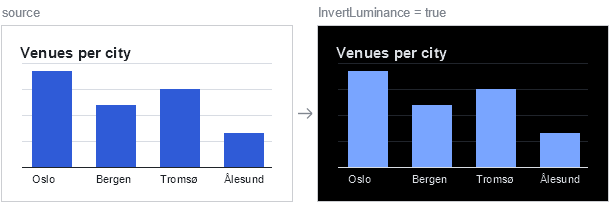

Data Modelling & Querying with Relatude.DB#
A practical manual
Relatude.DB is an open-source, C#-native object-oriented graph database with integrated full-text (BM25) search, vector/semantic search, file storage, faceting and a built-in admin UI. It runs in-process or server-hosted, and targets .NET 10+.
This manual shows how to shape your data, write it and get it back out, and covers the tools and services around the engine. It uses one running example domain, a venue-and-events platform, so each concept builds on the last.
Relatude.DB is pre-1.0, so the API may still change. The source is at github.com/Relatude/Relatude.DB.
Part I — Data modelling#
1. The mental model#
Everything in Relatude.DB is a node. A node has:
| Ingredient | What it is |
|---|---|
Guid Id |
The public identity. The engine also keeps an internal int id (__Id) for its indexes. |
NodeMeta Meta |
Metadata the system manages: timestamps, culture, revision, access, display name, address. |
| Scalar properties | string, int, decimal, DateTime, bool, Guid, GeoCoordinate, FileValue, PasswordValue, arrays… |
| Embedded data | Sub-objects stored inside the node: Embedded<T>, EmbeddedMap<TKey,TValue>. |
| References | A stored Guid (or Guid[]) pointing at other nodes. One-directional, with no reverse index. |
| Relations | Graph edges, declared as classes of their own. Bidirectional, indexed and traversable. |
There is no separate schema language: your C# types are the schema. Point the engine at a namespace and it builds the datamodel from your interfaces and classes.
Interfaces are the model#
A node type can be an interface, a class, a record or a struct. No attribute is needed: every type
in a namespace you register becomes a node type unless it is marked [Exclude]. [Node] only tunes
a type (see stable type ids below), so most types in this manual do
without it.
Interfaces are the recommended default, and this manual uses them almost everywhere. An interface on
its own is a complete node type. db.Create<IVenue>() returns a generated proxy that implements it,
tracks your changes and loads relations lazily. You never write a class.
Interfaces also give you multiple inheritance: every interface a node type implements becomes a parent node type, and a C# type can implement many interfaces but inherit only one class. §2 shows how to use this.
2. Your first node type#
The three namespaces a model file usually imports:
using Relatude.DB.Common; // FileValue, GeoCoordinate, NodeKey
using Relatude.DB.Datamodels; // NodeMeta, RevisionType
using Relatude.DB.Nodes; // attributes, relation bases, Reference, References, EmbeddedMap
Here is IOrganizer, a company that runs events. The interface is the whole node type. There is
no class, and none is needed:
namespace VenueApp.Models;
public interface IOrganizer {
Guid Id { get; set; }
[StringProperty(Indexed = true, IndexedByWords = true, MaxLength = 200, DisplayName = true)]
string Name { get; set; }
[StringProperty(UniqueValues = true, MaxLength = 254)]
string ContactEmail { get; set; }
[StringProperty(Indexed = true, UniqueValues = true, RegularExpression = @"^[a-z0-9-]+$")]
string Slug { get; set; }
[CreatedUtcProperty]
DateTime CreatedUtc { get; } // filled in by the store
NodeMeta Meta { get; } // read-only on the interface
}
Create, store and query it:
var org = db.Create<IOrganizer>(); // a generated proxy that implements IOrganizer
org.Name = "Nordic Live AS";
org.Slug = "nordic-live"; // required: the pattern does not match an empty value
org.ContactEmail = "hello@nordiclive.no";
db.Insert(org);
var again = db.Get<IOrganizer>(org.Id);
var all = db.Query<IOrganizer>().Where(o => o.Name.StartsWith("Nordic")).Execute();
Three rules for interface node types:
Metais get-only, and so are relation, reference and embedded properties and the marker members ([CreatedUtcProperty],[AddressProperty]and the like, §4). The store provides them, and you never assign them. Scalar properties are{ get; set; }.- Leave
IdasGuid.Emptyand the store assigns one on insert, or set it yourself first. - Put attributes on the interface. A property is defined by the type that first declares it, so
attributes on a class member that implements it are ignored. The one exception is
[PropertyOverride](§3.1).
[Exclude] leaves a type or a property out of the datamodel.
Why interfaces are the better default#
| Interface | Class | |
|---|---|---|
| Multiple inheritance | yes, many interfaces per type | no, one base class |
| Instantiation | db.Create<T>() returns a proxy |
new T() or db.Create<T>() |
| Change tracking | the proxy tracks property writes | you manage state yourself |
| Default values | handled by the proxy | you initialise every reference type |
| Parameterless constructor | not needed | required, or the model builder throws |
| Querying | the same | the same |
An interface model is shorter, has no initialisation to forget and, most important, composes.
Multiple inheritance with interfaces#
The engine records every interface a type implements as a parent node type. So you can define small, focused facet interfaces:
// A thing that sits somewhere on the map.
public interface ILocatable {
[GeoCoordinateProperty(Indexed = true)]
GeoCoordinate Location { get; set; }
[StringProperty(Indexed = true, MaxLength = 2)]
string CountryCode { get; set; }
}
// A thing with an identity, a name and a slug.
public interface INamedNode {
Guid Id { get; set; }
NodeMeta Meta { get; }
[StringProperty(Indexed = true, IndexedByWords = true, PrefixSearch = true, DisplayName = true)]
string Title { get; set; }
[AddressProperty]
string Slug { get; } // the node's address, set with db.UpdateAddress
}
// A thing with a searchable rich-text body.
public interface IDescribed {
[HtmlProperty(IndexedByWords = true, IndexedBySemantic = true)]
string Description { get; set; }
}
// A thing that can be tagged.
public interface ITagged {
[StringArrayProperty(Indexed = true)]
string[] Tags { get; set; }
}
Then compose them per type:
public interface IVenue : INamedNode, IDescribed, ILocatable, ITagged { /* venue-only */ }
public interface IEvent : INamedNode, IDescribed, ITagged { /* event-only */ }
public interface IAttendee : INamedNode, ILocatable { /* attendee-only */ }
Each facet's properties are declared once, with their indexing and validation, and every type that
implements the facet gets them. A new type that belongs on the map needs one more interface and
nothing else. With classes, Venue could inherit only one base class, so you would copy properties
between types and keep their attributes in sync by hand.
Querying across the hierarchy#
Query<T>() matches T and every type that inherits from it. So you can query a facet interface
directly and get mixed results:
var oslo = new GeoCoordinate(59.9139, 10.7522);
// Every locatable node within 5 km: venues and attendees together
var nearby = db.Query<ILocatable>()
.Where(x => x.Location.IsWithin(oslo, 5_000))
.Execute();
foreach (var x in nearby) {
Console.WriteLine(x switch {
IVenue v => $"Venue: {v.Title}",
IAttendee a => $"Attendee: {a.Title}",
_ => "Something else"
});
}
// One search box over everything that has a title
var hits = db.Query<INamedNode>()
.WhereSearch("outdoor jazz", semanticRatio: 0.5)
.Execute();
// One tag cloud over everything taggable
var tagCloud = db.Query<ITagged>().Facets().AddValueFacet(x => x.Tags).Execute();
// Narrowed back to specific types when you want that
var venuesOnly = db.Query<ILocatable>()
.WhereTypes(new[] { typeof(IVenue) }, includeDescendants: true)
.Where(x => x.CountryCode == "NO")
.Execute();
A site-wide search, a "recently changed" feed or a map of everything with coordinates is then one indexed query, not one query per type merged in memory.
The example model in §11 declares every property directly on each type, so that each type reads on its own. §11.1 shows the same model built from facet interfaces. That is the shape to use in a real project.
Two constraints to design around#
The model builder refuses anything ambiguous. It checks these two rules when it builds the model, so you find out at startup:
- Two parent interfaces may not declare the same property name. If
ILocatableandITaggedboth declaredCountryCode, any type implementing both would fail to build. Keep facets disjoint, or move the shared member into a base interface that both extend. - A property cannot be declared again further down. It is defined once, on the type that first
declares it. To change some of its attributes for a derived type, use
[PropertyOverride](§3.1).
When you do want a class#
Classes are fully supported. Reach for one when you want to create nodes with new without a store
(seed data, tests, an import job), want behaviour on the type, or deserialise straight into it from
an external feed. A class can also implement an interface: the interface is the queryable contract,
and the class a form you can create. A class has four extra obligations:
public class Organizer : IOrganizer {
public Guid Id { get; set; }
// The attributes are on IOrganizer: repeating them here has no effect.
public string Name { get; set; } = string.Empty;
public string ContactEmail { get; set; } = string.Empty;
public string Slug { get; set; } = string.Empty;
public DateTime CreatedUtc { get; set; }
public NodeMeta Meta { get; set; } = NodeMeta.Empty; // get and set on a class
}
- A parameterless constructor is required. The model builder throws without one.
- Initialise every reference-typed member:
string.Empty,FileValue.Empty,NodeMeta.Empty,[]for embedded maps,new()for relation and reference properties. Interfaces need none of this. Metahas a setter. Still never build one: start withNodeMeta.Empty.- Attributes go on the interface when the class implements one.
Records and structs work too. A record needs the record Foo() { … } form to have a parameterless
constructor. Structs are supported but rarely worth it.
Optional: stable type ids#
Without an id, the engine derives one from the type's full name. Renaming the type or moving it
to another namespace then gives it a new identity, and the engine sees a new type with no data. Pin
[Node(Id = …)] once, at the start of the project, and the type can be renamed and moved safely. The
same goes for [Relation(Id = …)].
[Node(
Id = "6a1d9f2e-0b41-4c8a-9d7b-3f2c5e8a1b40",
TextIndex = BoolValue.True, // include in the BM25 index
SemanticIndex = BoolValue.False // skip the vector index
)]
public interface IOrganizer { /* ... */ }
A property's id is derived from its declaring type's id and its own name, so a pinned type id keeps
the property ids too. To rename a property, pin its id with the Id of its attribute.
BoolValue has three values: Default (take it from the base types, else the database default),
True and False. TextIndex, SemanticIndex and InstantTextIndexing are inherited by derived
types (§3.1). MinNoInstances and MaxNoInstances limit how many nodes
of the type may exist (see Validation happens on write).
Optional: an icon for the type#
[Node(Icon = …)] sets the icon a type is shown with, in the admin UI and in applications built on
the model, such as a CMS. Use a name from the icon library the server carries, written set:name, or
the source of an SVG image:
[Node(Icon = "lucide:calendar")] // monochrome: drawn in the colour of the text around it
public interface IEvent { /* ... */ }
[Node(Icon = "fluent-color:building-24")] // in colour
public interface IVenue { /* ... */ }
A type without an icon shows the icon of the closest type it inherits from that has one. The library
holds about 22,000 icons from seven open sets, named as Iconify names them: lucide, tabler and
mdi in monochrome, and fluent-color, flat-color-icons, icon-park and fluent-emoji-flat in
colour. The datamodel editor's Icon field has a picker over them and also takes pasted SVG. For a
type from compiled code, the editor saves the icon as an override (§3.1).
An application that shows types gets the SVG of either kind from IconLibrary.ToSvg(icon) (namespace
Relatude.DB.NodeServer.Icons). It refuses SVG that could run script, so what it returns is safe to
show. An icon only changes how a type is shown: changing it rebuilds no state and no index.
Optional: a title and a description#
[Node(Title = …, Description = …)] says what people call the type and what it is for. Applications
built on the model show them: the Relatude CMS, for example, when an editor chooses what kind of
content to create.
[Node(Title = "Article", Description = "A story with a picture, an intro and a body.")]
public interface IArticle : INamedNode, IDescribed { /* ... */ }
Both belong to the type alone and are not inherited. Without a title, an application makes one from
the type name (IArticlePage reads "Article page"). NameProperty = nameof(Title) names the property
that holds a node's name, which an editor such as the CMS shows at the top of a node's form; a type
without one takes its base type's. Like an icon, these only change how a type is shown, and the
datamodel editor saves them as overrides on a type from compiled code.
3. Scalar properties and their attributes#
A property needs no attribute: the engine infers a sensible property model from its CLR type. Add an attribute when you want indexing, validation, faceting or search.
The most important flag is Indexed. A property must be indexed to be filtered and sorted
efficiently, and to be a facet. Without an index, the engine scans.
The attribute catalogue#
| CLR type | Attribute |
|---|---|
string |
[StringProperty] |
string (rich text) |
[HtmlProperty] — a [StringProperty] pre-set to StringType = HTML |
int / enum |
[IntegerProperty] |
long |
[LongProperty] |
double |
[DoubleProperty] |
float |
[FloatProperty] |
decimal |
[DecimalProperty] |
bool |
[BooleanProperty] |
Guid |
[GuidProperty] |
DateTime |
[DateTimeProperty] |
DateTimeOffset |
[DateTimeOffsetProperty] |
TimeSpan |
[TimeSpanProperty] |
GeoCoordinate |
[GeoCoordinateProperty] |
byte[] |
[ByteArrayProperty] |
float[] |
[FloatArrayProperty] |
string[] |
[StringArrayProperty] |
Guid[] |
[GuidArrayProperty] |
TEnum[] |
[EnumArrayProperty] |
FileValue |
[FileProperty] |
PasswordValue |
[PasswordProperty] |
All of them inherit these options from PropertyAttribute:
public abstract class PropertyAttribute : Attribute {
public string? Id { get; set; } // a pinned property id, so it can be renamed
public string? ReadAccess { get; set; } // the user group that may read the value
public string? WriteAccess { get; set; } // the user group that may write it
public bool ExcludeFromTextIndex { get; set; }
public int TextIndexBoost { get; set; } // extra times the value goes into the text index
public bool DisplayName { get; set; } // part of the node's display name
}
Strings#
[StringProperty] has the most options. Here they all are on one property:
[StringProperty(
Indexed = true, // value index: equality, ranges, sorting, facets
IndexedByWords = true, // full-text (BM25) index
IndexedBySemantic = true, // vector index for semantic search
PrefixSearch = true, // "starts with" search in the word index
InfixSearch = false, // "contains" search in the word index; costs space
MinWordLength = 3, MaxWordLength = 30, // words outside these lengths are not indexed
MinLength = 0, MaxLength = 4000,
Trim = true, // strip white space at both ends, before the rules
CaseTransform = CaseTransform.ToLowerCase, // or NoTransform, ToUpperCase; after Trim
LegalCharacters = "abcdefghijklmnopqrstuvwxyz0123456789-",
RegularExpression = @"^[a-z0-9-]+$",
RegularExpressionMessage = "Use lower case letters, digits and dashes",
UniqueValues = true,
CaseSensitive = false, // the default: "Ole" and "ole" clash under UniqueValues
IgnoreDuplicateEmptyValues = true, // many nodes may be empty under UniqueValues
NotFacet = false, // true keeps an indexed property out of facets
DefaultValue = ""
)]
public string Slug { get; set; } = string.Empty;
LegalValues = new[] { "draft", "published" } limits the value to a list. StringType says what the
text is: AnyString (the default), HTML, Markdown, JSON, JavaScript, TypeScript, CSharp
or CSS. StringValueType and CaseTransform are in Relatude.DB.Datamodels.Properties.
Use [HtmlProperty] for rich text. It sets StringType = HTML, so links to nodes and files inside
the value keep working when their targets move (§18.2):
[HtmlProperty(IndexedByWords = true, IndexedBySemantic = true)]
public string Description { get; set; } = string.Empty;
Numbers#
Numeric attributes share MinValue, MaxValue, DefaultValue, Indexed and NotFacet.
FacetRangePowerBase and FacetRangeCount control how the engine splits the values into buckets
when you ask for a range facet:
[IntegerProperty(MinValue = 0, MaxValue = 100000, Indexed = true)]
public int Capacity { get; set; }
[DoubleProperty(Indexed = true, FacetRangePowerBase = 2.0, FacetRangeCount = 8)]
public double AverageRating { get; set; }
decimal, DateTime, DateTimeOffset, TimeSpan and Guid cannot be C# attribute arguments,
so their bounds and defaults are strings in a fixed format:
// decimal: invariant culture
[DecimalProperty(MinValue = "0", MaxValue = "100000", DefaultValue = "0", Indexed = true)]
public decimal Price { get; set; }
// DateTime / DateTimeOffset: round-trip ("O") format
[DateTimeProperty(MinValue = "2000-01-01T00:00:00.0000000Z", Indexed = true)]
public DateTime StartsUtc { get; set; }
// TimeSpan: constant ("c") format
[TimeSpanProperty(MaxValue = "1.00:00:00", Indexed = true)]
public TimeSpan Duration { get; set; }
// Guid: plain string form
[GuidProperty(Indexed = true, UniqueValues = true)]
public Guid ExternalRef { get; set; }
Enums#
Declare the property as your enum type. The engine stores it as an integer and fills in the enum's
names (FullEnumTypeName, LegalValues, LegalValueNames), so the admin UI and facets show names
rather than numbers:
public enum EventStatus { Draft = 0, Published = 1, SoldOut = 2, Cancelled = 3 }
[IntegerProperty(Indexed = true)]
public EventStatus Status { get; set; }
Arrays of enums use [EnumArrayProperty], which gets the same names:
public enum AccessibilityFeature { StepFree, HearingLoop, AccessibleToilet }
[EnumArrayProperty(Indexed = true)]
public AccessibilityFeature[] Accessibility { get; set; } = [];
Validation happens on write#
The engine checks LegalValues, LegalCharacters, RegularExpression, MinValue/MaxValue,
MinLength/MaxLength, UniqueValues and MinNoInstances/MaxNoInstances every time a node is
written. A write that breaks a rule fails, and its whole transaction is rolled back. Stored values are
not checked again. If you tighten a rule, the database still opens, but a node that breaks the new
rule cannot be saved until its value is fixed.
A refused value throws a ValueConstraintException. Its PropertyId names the property, and its
message is written for the person who typed the value, for example
PostCode "12" is not valid: Enter four digits.
TrimandCaseTransformchange the value first: white space is removed from both ends, then the case is changed (invariant culture). The rules check the changed value, and the changed value is stored. So withCaseTransform = ToLowerCase, a unique email is unique however it is typed. Queries are not transformed: a query for"Ole@Example.com"on a lower-cased property finds nothing.RegularExpressionmust match every value written, the empty value too. A pattern like^[a-z0-9-]+$therefore makes the value required. For an optional value, allow empty in the pattern:^([a-z0-9-]+)?$. Without^and$, the pattern may match anywhere in the value. SetRegularExpressionMessageto say what a valid value looks like; without it, the message shows the pattern.LegalCharacterslists the characters a value may contain. The empty value is always allowed.UniqueValueson a string ignores case unless you setCaseSensitive = true. By default, no node can have"OLE"when another has"Ole". Only the check ignores case: the value is stored, sorted and queried as written.LegalValueson a string is compared ordinally. The empty value is always allowed, so addMinLength = 1to require a value.LegalValueson an integer limits a plainintto the listed values. An enum property is not limited to its members: a[Flags]combination, or a member a newer version of your code adds, is accepted.MinNoInstances/MaxNoInstanceson[Node]count the nodes of the type and of every type that inherits from it, including nodes that are unpublished, hidden or marked as deleted. The check is on what the whole transaction leaves, so deleting a node and inserting its replacement passes at the limit. A transaction that adds nodes is refused above the maximum, and one that removes nodes below the minimum, with aNodeTypeConstraintException. So withMinNoInstances = 1you can always insert the first node, but never delete the last.
3.1 Overriding attributes#
An override changes an attribute without editing its declaration. Use one when the type comes from an assembly you do not build, when the property is declared on a base type that other types share, or when one installation needs another value without a rebuild. Three layers decide what a type ends up with, and a later layer wins:
- Declared: the attributes on the type or the property, as described above.
- Overridden in code: a derived type sets its own value for a switch or a property attribute it inherits.
- Overridden in the database: values set in the admin UI's datamodel editor, or by hand in JSON. They are applied when the database opens, as if the source said so.
Text index switches are inherited. TextIndex, SemanticIndex and InstantTextIndexing on
[Node] apply to the type they are set on and to the types that inherit from it. A type that does
not set one takes it from its closest base type that does, and then from the database default
(EnableTextIndexByDefault and friends, §12.1).
[Node(TextIndex = BoolValue.True)]
public interface IContent { /* ... */ } // every IContent type is text indexed...
[Node(TextIndex = BoolValue.False)]
public class InternalNote : IContent { /* ... */ } // ...except this one
If two unrelated base types disagree, the type gets the database default, and the database logs a
warning naming both. Set the switch on the type itself to choose. Semantic indexing needs the text
index, so a type that is semantically indexed stays text indexed whatever its TextIndex says.
Inherited properties: [PropertyOverride]. A derived type can set six things for a property it
inherits:
On [PropertyOverride] |
What it does for the type |
|---|---|
DefaultValue |
The value a new node starts with, and what a stored node reads while it has no value |
ExcludeFromTextIndex |
BoolValue.True leaves the property out of the type's text index; False puts it back |
TextIndexBoost |
Extra times the value goes into the type's text index; 0 cancels an inherited boost |
DisplayName |
BoolValue.True makes the property part of the type's display name; False takes it out |
Indexed |
BoolValue.True asks for the property's value index, to filter, sort and facet on it |
NotFacet |
BoolValue.False asks for a facet where the declaration says NotFacet |
Anything you leave out comes from the base types. In this example, news articles get their own
defaults and an index on Status, and support tickets keep their body out of search:
public enum ContentStatus { Draft = 0, Published = 1, Archived = 2 }
[Node(TextIndex = BoolValue.True)]
public interface IContent {
Guid Id { get; set; }
[StringProperty(DefaultValue = "Untitled", DisplayName = true)] string Title { get; set; }
[HtmlProperty] string Body { get; set; }
[IntegerProperty] ContentStatus Status { get; set; }
}
[PropertyOverride(nameof(IContent.Title), DefaultValue = "Untitled news", TextIndexBoost = 2)]
[PropertyOverride(nameof(IContent.Status), DefaultValue = ContentStatus.Published, Indexed = BoolValue.True)]
public class NewsArticle : IContent { /* ... */ }
// The body holds customer details, so it stays out of search.
[PropertyOverride(nameof(IContent.Body), ExcludeFromTextIndex = BoolValue.True)]
public class SupportTicket : IContent { /* ... */ }
db.Create<NewsArticle>() starts with the title "Untitled news" and the status Published. Other
IContent types keep "Untitled" and Draft. A news title goes into the text index two extra times,
so it weighs more in search. new NewsArticle() is plain C#, so it starts with the property
initialisers instead.
A few more rules:
- On a member. A class member that implements an interface property can carry the attribute
without the name:
[PropertyOverride(TextIndexBoost = 2)] public string Title { get; set; }. It is the only property attribute such a member can carry. - Down a class chain. An override reaches every type that inherits from the type it is set on, and a more specific type can override it again. Interfaces can carry overrides too.
- Decimals, dates, durations and guids are strings, in the formats of the property attributes
(Numbers), for example
DefaultValue = "25". An enum default is the enum value. - Unrelated base types that disagree cancel out: the type gets what the declaration says, and the database logs a warning.
The index and the facet are shared. A property has one value index and one set of facet counts,
whichever types have it. Indexed = BoolValue.True on NewsArticle gives the property its index,
and that index holds the status of every IContent node, not only of news articles. A property is
indexed when its declaration says so or any type asks. BoolValue.False only takes back a type's own
request: to drop an index that the declaration has, override Indexed on the declaring type. Facets
work the same way. A facet counts the values in the value index, so it needs an index: ask for both
when the base type has neither. Everything else about a property, such as its other index settings
and its rules, is one setting wherever the property is used.
Mistakes stop the build. A [PropertyOverride] that cannot apply fails the model build at
startup, with a message naming the type and the property. It fails when the attribute:
- names a property the type declares itself (set that property's own attribute instead);
- names no member of the type (use
nameofto avoid typos), or a member marked[Exclude]; - names a system member: the id,
NodeMeta, the created or changed date, or the display-name or address marker; - gives a
DefaultValuethat does not convert to the property's type, or gives a default to a property that has none (arrays, files, references and the like); - sits on a type without naming a property, or sits on a member and names another property;
- names a property that another
[PropertyOverride]on the same type also names. Combine them.
What can be overridden. In code, [PropertyOverride] takes the six attributes above. In the
database you can override these:
| What | Attributes |
|---|---|
| Node type, inherited by derived types | TextIndex, SemanticIndex, InstantTextIndexing, Icon, NameProperty |
| Node type, that type only | Hidden, Title, Description, DefaultReadAccess, DefaultEditViewAccess |
| Property, per type | DefaultValue, ExcludeFromTextIndex, IndexBoost (TextIndexBoost on the attributes), DisplayName |
| Property, asked for by any type | Indexed, NotFacet |
| Property, on the declaring type only | IndexType, IndexedByWords, TextIndexType, CultureSensitive, MinLength, MaxLength, RegularExpression, RegularExpressionMessage, LegalCharacters, Trim, CaseTransform, MinValue, MaxValue, FacetRangePowerBase, FacetRangeCount, Facet, TextIndexRelatedContent, TextIndexRelatedDisplayName, Display (§10) |
Nothing else can be overridden: not ids or names, the property type, UniqueValues, LegalValues,
CultureSpecific, enum metadata, or what a relation, reference or embedded property points at.
[Node] also has a TextIndexBoost, which the engine does not use yet.
In the database: the datamodel editor. The admin UI's Models page writes a change into the
source that defines the type when it can. Where it cannot, as for compiled classes or types added in
OnDatamodelInit, it saves what you set as an override. Each field shows where its value comes from,
and you can remove an override there. Activating saves the overrides and reopens the database.
A database keeps its overrides in two files, the same way it keeps its settings in relatude.db.json
and relatude.db.overrides.json (§12):
| File | What it is | |
|---|---|---|
| SHARED | relatude.settings/datamodel.json, or relatude.settings/<ShortName>/datamodel.json |
Part of the application: commit it and deploy it with the code |
| THIS SERVER | overrides/datamodel.overrides.json in the database's storage (relatude.data/overrides/ by default) |
What the editor changed on this installation: survives a redeploy, not in source control |
When the database opens, THIS SERVER is merged over SHARED. A value in THIS SERVER replaces the SHARED
value, and null removes it, so the attribute follows the source again on this installation.
Activating writes only the THIS SERVER file, and only what differs from SHARED. Both files are keyed
by ids, with names beside them for people to read:
// relatude.data/overrides/datamodel.overrides.json (THIS SERVER)
{
"NodeTypes": {
"3ad77060-788d-21b2-31c1-4305dcae3437": {
"Name": "Shop.Models.Product",
"TextIndex": null, // SHARED says false; here the source decides
"Properties": {
"8b1aa6c4-205e-740c-73ca-26d1e39111dc": { "Name": "Price", "Indexed": true, "DefaultValue": 0 }
}
}
}
}
The SHARED file has the same shape, without the nulls. Move to shared, at the top right of the
editor, moves the overrides you select from THIS SERVER into SHARED, as on the settings pages. Do it
in the Development environment, where relatude.settings is the folder in your project, and commit
the file. On a deployed server the next deployment would replace it. The SHARED file is found by the
database's short name, so set the short name in relatude.db.json.
An override in the database that cannot apply is skipped with a warning in the log and the editor:
its type or property is gone, its value does not parse, or the attribute cannot be overridden. It
never stops the database from opening. From code, set Datamodel.Overrides before the store is
created.
Before you change a value on a running installation:
- A default is late bound. A node with no stored value reads the current default, so a new default reaches nodes that never had a value. Stored values are never touched. If the property is indexed, queries may not see the new default for those nodes until the indexes are rebuilt.
- Rules apply to new writes. A tighter
MaxLengthorMinValuedoes not check stored values. - Index changes rebuild. Turning on
IndexedorIndexedByWords, or asking for an index from a derived type, changes the model. The database then rebuilds its state and indexes from the log at the next open. When text indexing changes for a type, its nodes are queued for text indexing. Settings that only change how a type is shown (Icon,Title,Description,NameProperty,Display) rebuild nothing.
Passwords#
A PasswordValue property holds a password. By default the store keeps it as an Argon2id hash,
which can be verified but never read back. A property can also allow a password encrypted with the
database's key (AES-256-GCM), which can be read back, or kept as plain text. The code chooses how to
keep a password when it sets one:
public class Member {
public Guid Id { get; set; }
public string Email { get; set; } = "";
[PasswordProperty(MinLength = 10, RequireDigit = true)]
public PasswordValue Password { get; set; } = PasswordValue.Empty;
[PasswordProperty(AllowEncrypted = true, AllowHashed = false)]
public PasswordValue SmtpPassword { get; set; } = PasswordValue.Empty;
}
member.Password.SetPassword("correct horse battery 7"); // hashed, the default
member.SmtpPassword.SetPassword(secret, PasswordStorage.Encrypted);
db.Update(member); // hashed and encrypted here
var m = db.Get<Member>(id);
m.Password.IsSet; // true
m.Password.Storage; // PasswordStorage.Hashed
m.Password.Verify(typed); // true or false
m.Password.IsPasswordRetrievable; // false: a hash cannot be read back
m.SmtpPassword.GetPassword(); // the password, decrypted with the database's key
m.Password.Clear(); // removed when the node is next written
PasswordValue and PasswordStorage are in Relatude.DB.Common. What to know:
- The store does the work on write.
SetPasswordandClearonly record the change. When the node is written, the store checks the property's rules and makes the hash or the encryption. A refused password fails the write with aValueConstraintExceptionthat never quotes the password. - The password never leaves the store. Only the stored form reaches the log. JSON gives
{"isSet": true, "storage": "Hashed"}; send{"set": "...", "storage": "Hashed"}or{"clear": true}to change it. A value that holds no change, like a stale object saved again, leaves the stored password as it is. - A query can only ask
IsSet:Where(m => m.Password.IsSet). Comparing, sorting, grouping or selecting a password throws. A password is never in an index, the text index, the display name, GraphQL or a facet. NeedsRehashis true when a password was kept with other hash settings, pepper or key than the store's current ones. Set the password again after a successfulVerifyat sign-in.
The keys are database settings, under LocalSettings.Passwords in relatude.db.json (the
Passwords group on the admin UI's Content settings page):
"Passwords": {
"EncryptionKey": "<32 random bytes in base64>",
"OldEncryptionKeys": [ "<a previous key, still used to decrypt>" ],
"Pepper": null,
"HashMemoryKiB": 19456, "HashIterations": 2, "HashParallelism": 1
}
Keep the keys in configuration or user secrets, which the server never writes to its settings files.
Without EncryptionKey, no password can be kept encrypted. Losing it loses every encrypted password,
so keep a copy, and when you change it, move the old key into OldEncryptionKeys. The Pepper is an
optional secret mixed into every hash. Set it once, before the first password: a hash made with
another pepper cannot be verified. The hash settings default to OWASP's minimum for Argon2id, and
each hash keeps the settings it was made with.
The property's options, in the attribute and the datamodel editor: AllowHashed (on),
AllowEncrypted and AllowPlainText (off), MinLength (8), MaxLength (128), RequireUppercase,
RequireLowercase, RequireDigit, RequireSymbol, and RegularExpression with
RegularExpressionMessage. A password property cannot be indexed, unique, part of the display name
or per culture, or sit on a type kept inside another node's embedded property. A remote store cannot
set a password: only the store that keeps the node has the keys.
4. Marker properties#
A marker attribute maps a member to a value the store keeps for every node. The member is not a property of its own: the store fills it in when it reads the node, and other attributes on it are ignored. Use each marker at most once per type.
| Attribute | Member type | Maps to |
|---|---|---|
[PublicIdProperty] |
Guid or string |
The node's id. A Guid member named Id needs no attribute. |
[InternalIdProperty] |
int, long or string |
The node's internal id. |
[CreatedUtcProperty] |
DateTime |
When the node was created. |
[ChangedUtcProperty] |
DateTime |
When the node's values last changed. |
[DisplayNameProperty] |
string |
The display name you set with UpdateDisplayName. |
[AddressProperty] |
string |
The node's address: one URL segment, not the whole path (§18). |
public interface IArticle {
Guid Id { get; set; }
[StringProperty(Indexed = true, IndexedByWords = true, DisplayName = true)]
string Title { get; set; } // an ordinary property that names the node
[AddressProperty] string Address { get; }
[CreatedUtcProperty] DateTime CreatedUtc { get; }
[ChangedUtcProperty] DateTime ChangedUtc { get; }
}
- On an interface, declare marker members getter-only. The store writes these values, not your
code, and a
{ get; set; }marker member stops the store from starting. - Set the address with
UpdateAddress, in the same transaction as the insert if you like. On a class, you can also set an[AddressProperty]member before you save. - Name nodes with
DisplayName = trueon a property, likeTitleabove. The admin UI, GraphQL and facets show nodes by these properties (§3.1). The[DisplayNameProperty]member andMeta.DisplayNamehold a separate name, which stays empty until you callUpdateDisplayName.
Inserting a node together with its address:
var article = db.Create<IArticle>();
article.Title = "Winter Session";
db.CreateTransaction()
.Insert(article)
.UpdateAddress(article, "winter-session")
.Execute();
What lives in NodeMeta#
Every node carries system data, which a NodeMeta Meta { get; } member reads. Never create or
assign a NodeMeta yourself. Change the writable fields with UpdateMeta
(Writing meta), and the address and display name with UpdateAddress and
UpdateDisplayName.
| Field | Meaning |
|---|---|
Id, InternalId |
The public Guid id and the internal int id. |
NodeTypeId |
The id of the node's type. |
CreatedUtc, ChangedUtc |
When the node was created, and when its values last changed. |
DisplayName, Address |
The display name set with UpdateDisplayName, and the address. |
CultureId |
The culture of this revision. |
RevisionId, RevisionType |
The revision read, and its type: Published, Preliminary (a draft), Archived, … |
CollectionId |
The collection the node is in. |
ReadAccess, EditAccess, EditViewAccess, PublishAccess |
The user group given each kind of access. |
CreatedBy, ChangedBy |
User ids, when the application writes them. |
ReleaseUtc, ExpireUtc |
Scheduled publishing. |
Deleted |
The soft-delete flag. |
ChangedUtc moves with every write that changes the node's values. A meta write, or a write that
changes nothing, leaves it alone. An insert keeps a change time it is given, as an import needs.
Writing meta: UpdateMeta#
UpdateMeta writes meta fields by name: one name and value, or several pairs in one write. The
names are the property names of IInnerNodeMeta, so write them with nameof. Each value must have
the field's own type (Guid, bool, DateTime?): it is cast, not converted.
using Relatude.DB.Datamodels; // IInnerNodeMeta, NodeConstants
// one value: only the members' group can read the article
db.UpdateMeta(article.Id, nameof(IInnerNodeMeta.ReadAccess), membersGroup.Id);
// several at once
db.UpdateMeta(article.Id, [
new(nameof(IInnerNodeMeta.EditAccess), NodeConstants.UserGroupAdmins),
new(nameof(IInnerNodeMeta.ReleaseUtc), (DateTime?)new DateTime(2027, 3, 1, 9, 0, 0, DateTimeKind.Utc)),
new(nameof(IInnerNodeMeta.ExpireUtc), null!), // no expiry
]);
// together with other writes, in one transaction
db.CreateTransaction()
.Update(article)
.UpdateMeta(article.Id, nameof(IInnerNodeMeta.ReadAccess), NodeConstants.UserGroupEveryone)
.Execute();
| Name | Value | Notes |
|---|---|---|
ReadAccess, EditViewAccess, EditAccess, PublishAccess |
Guid: a user group's id, or NodeConstants.UserGroupEveryone, UserGroupMember, UserGroupAdmins |
Guid.Empty means unset: the type's default applies, else (for read and edit view) the database's DefaultReadAccess. |
CollectionId |
Guid |
Guid.Empty for none. A query whose context names collections reads only nodes in them. |
ReleaseUtc, ExpireUtc |
DateTime?, in UTC |
null for none. Queries skip the node outside this window, unless their context reads unpublished nodes (§29). |
Deleted |
bool |
Soft delete: queries skip the node unless their context includes deleted nodes. |
CreatedBy, ChangedBy |
Guid, a user's id |
The store does not fill these in. |
CultureId and the revision type cannot be written this way, and neither can an unknown name: the
call throws. The revision methods change culture and type (§29).
On a node with revisions, a revisionId argument writes that revision's meta. The access groups,
the collection and the deleted flag are copied to the other revisions. Without a revisionId, every
revision is written. All overloads also take the internal int id, and Transaction has the same
methods.
Querying by the node's own dates#
CreatedUtc and ChangedUtc are indexed for every node of every type. Query them through NodeMeta,
whether or not the type maps them to members:
// recently changed articles
db.Query<IArticle>().OrderByMetaDescending(m => m.ChangedUtc).Page(0, 50).Execute();
db.Query<IArticle>().WhereMeta(m => m.CreatedUtc >= since).Count();
A [CreatedUtcProperty] or [ChangedUtcProperty] member answers the same queries from the same
index: OrderByDescending(x => x.ChangedUtc). In a query string the two are n._createdUtc and
n._changedUtc. No other NodeMeta field can be queried.
5. Geo coordinates#
GeoCoordinate (in Relatude.DB.Common) is a WGS84 latitude and longitude. It is a small
readonly struct, and an indexed GeoCoordinate property answers radius queries from a spatial index.
using Relatude.DB.Common;
public interface IVenue {
// ...
[GeoCoordinateProperty(Indexed = true)] // index it for radius queries
GeoCoordinate Location { get; set; }
}
Constructing and reading#
var oslo = new GeoCoordinate(59.9139, 10.7522);
var bergen = new GeoCoordinate(60.3913, 5.3221);
double lat = oslo.Latitude; // 59.9139… (NaN when empty)
double lon = oslo.Longitude; // 10.7522… (NaN when empty)
Console.WriteLine(oslo); // "59.9139, 10.7522"
GeoCoordinate.TryParse("59.9139, 10.7522", out var parsed);
The empty value#
GeoCoordinate.Empty, the default value, means "no location":
var unknown = GeoCoordinate.Empty;
unknown.IsEmpty; // true
unknown.Latitude; // double.NaN
unknown.DistanceTo(oslo); // double.PositiveInfinity
unknown.IsWithin(oslo, 100_000); // false: never matches
Empty coordinates are left out of the spatial index. A venue without a location never shows up in a "within 5 km" search.
Distance and radius tests#
double meters = oslo.DistanceTo(bergen); // great-circle distance, in metres
bool near = oslo.IsWithin(bergen, 500_000); // true: within 500 km
Inside a query, IsWithin(center, meters) uses the spatial index (§22).
Precision and sort order#
A coordinate snaps to a grid of about 1 cm when you construct it, so a stored value reads back equal
to what you wrote. Values sort along a Z-order curve. That keeps index scans fast but means nothing
to a reader, so never OrderBy(v => v.Location). To sort by distance, see §22.
JSON shape#
GeoCoordinate serialises as {"latitude": 59.91, "longitude": 10.75}, and Empty as null. When
reading, it also accepts lat, lon and lng, and a "latitude, longitude" string.
Seeing them#
The admin UI's query page has a Map view. It draws a GeoCoordinate property of the current
result on a map or a globe, as pins, a heat map, clusters or shaded countries. Nodes without a
location are left out. An indexed property is read from the index, so even large results draw fast.
6. Files#
FileValue (in Relatude.DB.Common) refers to a file in the store's file storage: local disk, Azure
blob storage and others, configured separately. The node holds the reference, and the bytes live in
the storage.
[FileProperty]
FileValue Photo { get; set; }
// keep this property's files in one particular file store:
[FileProperty(FileStorageProviderId = "b1c2d3e4-...")]
FileValue Brochure { get; set; }
FileStorageProviderId is the id of a file store from the settings
(§12.1). Uploading and serving files is covered in
§17, and the URLs they are served on in §18.
6.1 File analysis#
The database can learn what is in the files you upload, in the background after each upload, using the Image AI and File to text services (§34). Three database settings turn it on for every file property, all off by default:
| Setting | What is sent | What you get |
|---|---|---|
EnableAiImageAnalysisByDefault |
Pictures, to Image AI | A title, a description, keywords, the focus point and the things in the picture |
EnableFileTextIndexingByDefault |
Documents, and pictures for OCR, to File to text | The text of the file, its title, author, language and pages |
EnableVideoAndAudioFileTextIndexingByDefault |
Recordings and videos, to File to text | A transcript, timed line by line, and the duration |
They are under Settings › Search & AI › File analysis in the admin UI, or in LocalSettings
(§12.1). A file property can decide for itself. BoolValue.Default
follows the database setting:
[FileProperty(AiImageAnalysis = BoolValue.True)] // always analysed, whatever the default
FileValue Photo { get; set; }
[FileProperty(FileTextIndexing = BoolValue.False)] // never read, even with the default on
FileValue SignedContract { get; set; }
[FileProperty(VideoAndAudioFileTextIndexing = BoolValue.True)]
FileValue Recording { get; set; }
What happens. An upload or a file copy queues a background task (Settings › Tasks shows it). The
task sends the file to the service, then writes the result into the file value: the text goes into
TextExtract, and everything else goes into MetaJSON as typed meta. That write queues the node for
text indexing again, so the words, the title, the description and the keywords make the node findable
with WhereSearch (§21). For recordings, the search text has the
timestamps removed.
Each file analysed is charged to the license. A file is analysed once. Two kinds of failure are treated differently:
- The service refuses the file (a kind it does not read, or a file that is too large). This is recorded in the meta, and the file is not sent again.
- The call fails (no credits, no answer). Nothing is recorded, and the file is tried again at the next text reindex.
Files uploaded before a switch was on are analysed when the text index is rebuilt: Storage ›
Maintenance › Rebuild text index in the admin UI, db.Datastore.ReIndexAllText(), or the reindex-text job
(§36). The rebuild queues every stored file that is still
missing an analysis.
Reading the meta. FileValue.GetMeta() returns the meta as a class that matches the kind of file:
| Class | For | Adds |
|---|---|---|
FileValueMeta |
Every file (the base class) | Title, Description, Keywords, Author, Language, TextExtraction, Technical |
ImageFileMeta |
Pictures | FocusPoint (pixels from the top left), Objects (type, name, confidence, box), AiAnalysis |
DocumentFileMeta |
Documents | Pages |
AudioFileMeta, VideoFileMeta |
Recordings and videos (both derive from MediaFileMeta) |
Duration |
var photo = db.Get<Product>(id).Photo;
if (photo.TryGetMeta<ImageFileMeta>(out var image)) {
var focus = image.FocusPoint; // null if the service found none
var tags = image.Keywords ?? [];
var faces = image.Objects?.Count(o => o.Type == ImageObjectType.Face) ?? 0;
}
var meta = photo.GetMeta(); // always a FileValueMeta, of the file's own kind
bool read = meta.TextExtraction?.Succeeded == true;
string text = photo.TextExtract; // the file's text, or a timed transcript
TextExtraction and AiAnalysis record when the step ran, which provider ran it, and the Error if
the service refused the file. Technical holds what the decoder reported when the file was stored:
the image details, or the probe of a video. You can also write the meta yourself with
SetMeta(meta) and then save the node.
7. Embedded data#
Embedded objects are owned values. They are stored inside the parent node, have no identity in the graph, and are deleted with it. Use them for data that only makes sense with its parent: opening hours on a venue, line items on an order, price tiers on an event.
An embedded class is part of the model, so register it with your node types
(§12): AddNamespace picks it up, Add<T> on the parent
does not. On an interface, declare embedded properties getter-only; the store creates the collection.
On a class, initialise them: declare an Embedded<T> getter-only, { get; } = [];, which the store
fills, and an EmbeddedMap with a setter, { get; set; } = [];. There are two kinds.
Embedded<T> — a collection keyed by the embedded object's own Guid Id#
public class PriceTier {
public Guid Id { get; set; }
public string Name { get; set; } = string.Empty; // "early bird", "standard", …
public decimal Amount { get; set; }
}
public interface IEvent {
// ...
[EmbeddedProperty]
Embedded<PriceTier> PriceTiers { get; }
}
IncludeTypes says which types the collection takes. The default, ThisTypeAndDescending, takes
PriceTier and its subclasses; ThisTypeOnly and DescendingTypesOnly narrow that.
EmbeddedMap<TKey, TValue> — a collection keyed by a property of the value#
public class OpeningHours {
public Guid Id { get; set; }
public string DayCode { get; set; } = string.Empty; // "mon", "tue", …
public TimeSpan Opens { get; set; }
public TimeSpan Closes { get; set; }
}
public interface IVenue {
// ...
[EmbeddedMapProperty(KeyProperty = nameof(OpeningHours.DayCode))]
EmbeddedMap<string, OpeningHours> Hours { get; }
}
KeyProperty names the property that holds the key. It must be declared on the closest common base
of the allowed value types, and its type must be TKey; the model builder checks both. To key by the
value's id instead, set KeyType to KeyPropertyType.NodeGuidId or NodeIntegerId. Without an
attribute, a Guid or int key means the value's id, and any other key type is an error.
Working with an embedded map#
var venue = db.Create<IVenue>();
venue.Hours.Add(new OpeningHours { DayCode = "mon", Opens = new(9, 0, 0), Closes = new(23, 0, 0) });
db.Insert(venue);
// keys work once the parent is stored
var stored = db.Get<IVenue>(venue.Id);
var mon = stored.Hours["mon"];
int days = stored.Hours.Count; // a property, not a method
bool open = stored.Hours.Contains("mon"); // by key, not by value
foreach (var h in stored.Hours) // enumerates the values
Console.WriteLine($"{h.DayCode}: {h.Opens}–{h.Closes}");
foreach (var (day, h) in stored.Hours.KeysAndValues()) { … } // with the keys
Keys need a stored parent. Before the parent is inserted, only
Add,Clear,Countand enumeration work. Everything that uses a key (the indexer,Contains,TryGetValue,Remove,KeysAndValues()) throwsInvalidOperationException, because the store evaluates the keys.
8. References — lightweight pointers#
A reference stores the id of another node on this node. It points one way: it is cheap to store and to set, and the target does not know about it.
| Type | Stores | Use for |
|---|---|---|
Reference<T> |
one Guid |
"the cover image of this event" |
References<T> |
an ordered Guid[], duplicates kept |
"the sponsors of this event, in billing order" |
public interface IEvent {
// ...
[ReferenceProperty(Indexed = true)] // Indexed = true is needed to filter or facet on it
Reference<IMediaAsset> Cover { get; }
[ReferencesProperty(Indexed = true)]
References<IOrganizer> Sponsors { get; }
}
On a class, initialise them: public Reference<IMediaAsset> Cover { get; set; } = new();.
Reading and writing a Reference<T>#
var ev = db.Get<IEvent>(eventId);
ev.Cover.IsSet(); // is a target set?
ev.Cover.Id; // the Guid, Guid.Empty when unset
if (ev.Cover.TryGet(out var asset)) // loads the target
Console.WriteLine(asset.FileName);
var img = ev.Cover.Get(); // throws when unset
ev.Cover.Set(someAssetId); // by id
ev.Cover.Set(someAsset, db); // by node
ev.Cover.Clear();
db.Update(ev); // a reference is node data: save it with Update
Reading and writing a References<T>#
ev.Sponsors.Ids; // Guid[] in stored order
ev.Sponsors.Count();
ev.Sponsors.Contains(organizerId);
ev.Sponsors.Add(organizerId);
ev.Sponsors.Add(organizer, db);
ev.Sponsors.Remove(organizerId); // removes every occurrence
ev.Sponsors.Clear();
ev.Sponsors.Ids = [a, b, c]; // replace them all, in this order
db.Update(ev);
foreach (var sponsor in ev.Sponsors.Get()) // loads every target, in order
Console.WriteLine(sponsor.Name);
Get() skips stale targets, such as deleted nodes or nodes of the wrong type, instead of throwing.
foreachyields only preloaded targets.Reference<T>andReferences<T>areIEnumerable<T>, but aforeachover one yields nothing unless the query loaded the targets with.Preload(...)(§24). Otherwise useGet()orTryGet(out …). This is on purpose: it makes an accidental N+1 load impossible.
9. Relations — the graph edges#
A relation is an indexed edge between two nodes, readable from both ends: relating A to B also relates B to A. Relations can be traversed, filtered and counted without loading the nodes.
Relations are not foreign keys: you never store a VenueId on an event. You declare a relation
class with a nested class for each end, and use the nested classes as property types.
The five shapes#
// 1. Symmetric one-to-one: twin venues. Both ends are the same property.
public class PairedWith : OneOne<IVenue> {
public class Pair : One { }
}
// 2. Directional one-to-one: an organizer's primary contact.
public class PrimaryContact : OneToOne<IOrganizer, IAttendee> {
public class Organizer : OneFrom { } // on IAttendee
public class Contact : OneTo { } // on IOrganizer
}
// 3. Directional one-to-many: the workhorse.
public class EventsAtVenue : OneToMany<IVenue, IEvent> {
public class Venue : One { } // on IEvent: its one venue
public class Events : Many { } // on IVenue: its many events
}
// 4. Symmetric many-to-many: friends.
public class Friends : ManyMany<IAttendee> {
public class Peers : Many { }
}
// 5. Directional many-to-many: events and their attendees.
public class Attendance : ManyToMany<IEvent, IAttendee> {
public class Events : ManyFrom { } // on IAttendee
public class Attendees : ManyTo { } // on IEvent
}
| Base class | Symmetry | Cardinality | Nested classes |
|---|---|---|---|
OneOne<T> |
symmetric | 1↔1, same type | One |
OneToOne<TFrom, TTo> |
directional | 1↔1 | OneFrom, OneTo |
OneToMany<TOne, TMany> |
directional | 1↔N | One, Many |
ManyMany<T> |
symmetric | N↔N, same type | Many |
ManyToMany<TFrom, TTo> |
directional | N↔N | ManyFrom, ManyTo |
There is no zero-or-one and no separate many-to-one: use OneToMany from the other end. When the
edge itself carries data, such as a ticket price or a role, make the edge a node type with a
relation to each side.
Using them on node types#
Each nested class is a property type. Name the property whatever reads best:
public interface IVenue {
// ...
EventsAtVenue.Events Events { get; } // the venue's events
}
public interface IEvent {
// ...
EventsAtVenue.Venue Venue { get; } // the event's venue
Attendance.Attendees Attendees { get; }
}
public interface IAttendee {
// ...
Attendance.Events Attending { get; }
Friends.Peers Friends { get; }
}
Declare only the ends you navigate. You never assign an end: relate nodes with AddRelation,
SetRelation and the other verbs in §14. On a class, initialise each end with
new().
The "one" side API#
A One, OneFrom or OneTo end is a OneProperty<T>:
var ev = db.Get<IEvent>(id);
ev.Venue.IsSet(); // is a node related?
ev.Venue.Count(); // 0 or 1
var venue = ev.Venue.Get(); // throws when unset
if (ev.Venue.TryGet(out var v)) { … }
ev.Venue.Contains(someVenueId);
A foreach over a one end yields only what the query included
(§24). Use Get or TryGet to load it.
The "many" side API#
A Many, ManyFrom or ManyTo end is a ManyProperty<T>:
var venue = db.Get<IVenue>(id);
int n = venue.Events.Count(); // from the relation index: loads no nodes
bool has = venue.Events.Contains(eventId);
foreach (var e in venue.Events) { … } // loads lazily when nothing was included
var all = venue.Events.Get(); // IEnumerable<IEvent>
// a full query rooted at the relation, for anything more
var upcoming = venue.Events
.Query()
.Where(e => e.StartsUtc > DateTime.UtcNow)
.OrderBy(e => e.StartsUtc)
.Page(0, 20)
.Execute();
Query() returns an IQueryOfNodes, so everything in Part III applies to it. When you loop over the
ends of many parents, Include them in the query instead (§24).
9.1 Relation lists are ordered#
A many end is a list, not a set: its order is stored, and you can change it. Use it for
hand-curated sequences, such as a running order, a menu or a gallery, instead of a SortIndex
property.
AddRelationappends at the bottom.- Reads follow the stored order:
foreach,Get()and included ends all return it. - No duplicates. Relating a pair that is already related throws, and so does removing a pair that is not related.
- Each end has its own order. In a many-to-many relation, the order of attendees on an event and the order of events on an attendee are separate.
A one end holds at most one node, so ordering applies to many ends only.
The MoveRelation… family#
These methods change the order without adding or removing anything:
| Method | Moves |
|---|---|
MoveRelation(from, end, item, offset) |
item by offset places: negative toward the top, positive toward the bottom |
MoveRelationToTop(from, end, item) |
item to the top |
MoveRelationToBottom(from, end, item) |
item to the bottom |
MoveRelationBefore(from, end, item, anchor) |
item just before anchor, another node in the list |
MoveRelationAfter(from, end, item, anchor) |
item just after anchor |
SetRelationOrder(from, end, itemsInOrder) |
the whole list into the given order |
db.MoveRelationToTop<IVenue>(venue, v => v.Events, headliner);
db.MoveRelation<IVenue>(venue, v => v.Events, ev, offset: -1);
db.MoveRelationBefore<IVenue>(venue, v => v.Events, ev, anchor: other);
db.SetRelationOrder<IVenue>(venue, v => v.Events, orderedEvents);
// relate and position in one transaction
db.CreateTransaction()
.AddRelation<IVenue>(venue, v => v.Events, ev)
.MoveRelationToTop<IVenue>(venue, v => v.Events, ev)
.Execute();
- Pass several items and they move as a block that keeps its own order.
- Positions are clamped. Moving past the top or the bottom never throws.
SetRelationOrdermust list exactly the nodes related now. It only reorders.- Never reorder by removing and adding again. That is two writes, and the add lands at the bottom.
All of them are on NodeStore and on Transaction, where calls chain. Besides nodes and an
expression, they take Guid ids or a raw property id; Transaction also takes internal int ids.
Relation options#
[Relation(
Id = "9f4e2c11-77a3-4d5e-8b21-0c6f9a3e7d54", // a stable id that survives renames
DisallowCircularReferences = true // no cycles in a relation of a type to itself
)]
public class VenueTree : OneToMany<IVenue, IVenue> {
public class Parent : One { }
public class Children : Many { }
}
[Relation] also takes SourceTypes and TargetTypes, but the generic parameters already say that.
[RelationProperty] on an end can put the related nodes into this node's text index, so a venue is
found by the names of its events, and makes the relation a facet:
[RelationProperty(
TextIndexRelatedDisplayName = true, // index the related nodes' names
TextIndexRelatedContent = false, // true indexes their text as well
TextIndexRecursiveLevelLimit = 1, // how far related content is followed
Facet = true)] // facets are opt-in for relations
EventsAtVenue.Events Events { get; }
10. Choosing between relation, reference and embedded#
This is the modelling choice you make most often.
| Embedded | Reference | Relation | |
|---|---|---|---|
| Identity | none: owned by the parent | the target is a node | both ends are nodes |
| Direction | n/a | one way | both ways, automatic |
| Reverse lookup | n/a | no | yes, indexed |
Traversable (Traverse, ShortestPath) |
no | no | yes |
| Filter by target | no | yes, with Indexed = true |
yes, WhereRelates |
| Order kept | yes | References<T>: yes |
yes, per end, and reorderable (§9.1) |
| Duplicates | yes | References<T>: yes |
no: relating an existing pair throws |
| Cost of a change | rewrites the parent | rewrites the parent | an index update, no node rewrite |
| Lifetime | dies with the parent | independent | independent |
Decision guide
- The data means nothing outside its parent, and you never query it on its own: embedded.
- You need the same target more than once, and never the reverse lookup:
References<T>. Order alone is no reason to choose it: relation lists are ordered too, and can be reordered. - You point at one thing, cheaply, and never ask "what points at me?":
Reference<T>. - You need reverse navigation, traversal, relation filters or facets, or a hand-curated order: relation. When in doubt, choose a relation.
In the running example:
IVenue.Hoursis embedded: opening hours mean nothing without their venue.IEvent.Coveris aReference<IMediaAsset>: nobody asks an image which events use it.IEvent.Sponsorsis aReferences<IOrganizer>: one organizer can appear twice, at different billing tiers. The duplicates rule out a relation.- Event ↔ venue and event ↔ attendee are relations: both directions are read all the time, and a venue's events are ordered by hand.
How an editor shows them: Display#
Display says how an editing interface, such as the Relatude CMS, shows the nodes a property holds.
It goes on [RelationProperty], [ReferenceProperty], [ReferencesProperty], [EmbeddedProperty]
and [EmbeddedMapProperty]:
using Relatude.DB.Datamodels.Properties; // DisplayMode
[RelationProperty(Display = DisplayMode.Table)]
EventsAtVenue.Events Events { get; }
[ReferencesProperty(Indexed = true, Display = DisplayMode.Cards)]
References<IOrganizer> Sponsors { get; }
[EmbeddedMapProperty(KeyProperty = nameof(OpeningHours.DayCode), Display = DisplayMode.Inline)]
EmbeddedMap<string, OpeningHours> Hours { get; }
| Value | Shown as |
|---|---|
List |
a list of the nodes; the default |
Table |
rows with columns, paged |
Inline |
each node as its own form, opened in place |
Cards |
a card for each node |
Thumbnail |
the type's icon and the node's first picture |
Pills |
a pill with each node's name |
Dropdown |
a drop-down to choose nodes from; not for embedded nodes |
The store ignores Display, so changing it rebuilds nothing. An application reads it from the
property's model (RelationPropertyModel.Display and the like). The admin UI's datamodel editor can
change it; for a type from compiled code, the change is saved as an override in the database
(§3.1).
11. The complete example model#
Here is the whole running domain in one place. Parts II and III query this model.
Two details follow from §4. Names are ordinary properties marked
DisplayName = true, so you set, index and query them like any other. Slug is the node's address,
so it is read-only here: give a node its slug with UpdateAddress.
using Relatude.DB.Common;
using Relatude.DB.Datamodels;
using Relatude.DB.Nodes;
namespace VenueApp.Models;
public enum EventStatus { Draft = 0, Published = 1, SoldOut = 2, Cancelled = 3 }
public enum VenueKind { Indoor = 0, Outdoor = 1, Hybrid = 2 }
// ── Node types ───────────────────────────────────
public interface IOrganizer {
Guid Id { get; set; }
NodeMeta Meta { get; }
[StringProperty(Indexed = true, MaxLength = 200, IndexedByWords = true, DisplayName = true)]
string Name { get; set; }
[StringProperty(UniqueValues = true, IgnoreDuplicateEmptyValues = true)] // unique, but may be empty
string ContactEmail { get; set; }
[AddressProperty] string Slug { get; }
[CreatedUtcProperty] DateTime CreatedUtc { get; }
OrganizerEvents.Events Events { get; }
}
public interface IVenue {
Guid Id { get; set; }
NodeMeta Meta { get; }
[StringProperty(Indexed = true, IndexedByWords = true, PrefixSearch = true, DisplayName = true)]
string Name { get; set; }
[AddressProperty] string Slug { get; }
[HtmlProperty(IndexedByWords = true, IndexedBySemantic = true)]
string Description { get; set; }
[GeoCoordinateProperty(Indexed = true)]
GeoCoordinate Location { get; set; }
[StringProperty(Indexed = true, MaxLength = 2)]
string CountryCode { get; set; }
[IntegerProperty(Indexed = true, MinValue = 0)]
int Capacity { get; set; }
[IntegerProperty(Indexed = true)]
VenueKind Kind { get; set; }
[BooleanProperty(Indexed = true)]
bool IsAccessible { get; set; }
[FileProperty]
FileValue Photo { get; set; }
[EmbeddedMapProperty(KeyProperty = nameof(OpeningHours.DayCode))]
EmbeddedMap<string, OpeningHours> Hours { get; }
VenueTree.Parent Parent { get; } // e.g. the complex a hall is in
VenueTree.Children Halls { get; }
EventsAtVenue.Events Events { get; }
}
public interface IEvent {
Guid Id { get; set; }
NodeMeta Meta { get; }
[StringProperty(Indexed = true, IndexedByWords = true, IndexedBySemantic = true, PrefixSearch = true,
DisplayName = true)]
string Title { get; set; }
[HtmlProperty(IndexedByWords = true, IndexedBySemantic = true)]
string Description { get; set; }
[DateTimeProperty(Indexed = true)]
DateTime StartsUtc { get; set; }
[TimeSpanProperty(Indexed = true, MaxValue = "1.00:00:00")]
TimeSpan Duration { get; set; }
[DecimalProperty(Indexed = true, MinValue = "0", DefaultValue = "0",
FacetRangePowerBase = 2.0, FacetRangeCount = 6)]
decimal Price { get; set; }
[IntegerProperty(Indexed = true)]
EventStatus Status { get; set; }
[StringArrayProperty(Indexed = true)]
string[] Tags { get; set; }
[ReferenceProperty(Indexed = true)]
Reference<IMediaAsset> Cover { get; }
[ReferencesProperty(Indexed = true)]
References<IOrganizer> Sponsors { get; }
EventsAtVenue.Venue Venue { get; }
OrganizerEvents.Host Host { get; }
Attendance.Attendees Attendees { get; }
}
public interface IAttendee {
Guid Id { get; set; }
NodeMeta Meta { get; }
[StringProperty(Indexed = true, IndexedByWords = true, DisplayName = true)]
string FullName { get; set; }
[StringProperty(Indexed = true, UniqueValues = true)]
string Email { get; set; }
[GeoCoordinateProperty(Indexed = true)]
GeoCoordinate HomeLocation { get; set; }
Attendance.Events Attending { get; }
Friends.Peers Friends { get; }
}
public interface IMediaAsset {
Guid Id { get; set; }
NodeMeta Meta { get; }
[StringProperty(Indexed = true, DisplayName = true)]
string FileName { get; set; }
[FileProperty]
FileValue File { get; set; }
}
// ── Embedded types ───────────────────────────────
public class OpeningHours {
public Guid Id { get; set; }
public string DayCode { get; set; } = string.Empty; // "mon" … "sun"
public TimeSpan Opens { get; set; }
public TimeSpan Closes { get; set; }
}
// ── Relations ────────────────────────────────────
public class EventsAtVenue : OneToMany<IVenue, IEvent> {
public class Venue : One { }
public class Events : Many { }
}
public class OrganizerEvents : OneToMany<IOrganizer, IEvent> {
public class Host : One { }
public class Events : Many { }
}
public class Attendance : ManyToMany<IEvent, IAttendee> {
public class Attendees : ManyTo { }
public class Events : ManyFrom { }
}
public class Friends : ManyMany<IAttendee> {
public class Peers : Many { }
}
[Relation(DisallowCircularReferences = true)]
public class VenueTree : OneToMany<IVenue, IVenue> {
public class Parent : One { }
public class Children : Many { }
}
11.1 The same model with facet interfaces#
The model above declares everything on each type, so each type reads on its own. In a real project you would move the shared properties into facet interfaces, as in §2. Most of the repetition goes, and queries across types get simple.
One change comes with it: the names (Name, Title, FullName, FileName) become one
INamedNode.Title. A shared name is worth it: it is what makes one search box and one "recently
changed" feed possible. The enums, OpeningHours and the relation classes stay as above.
// ── Facets ───────────────────────────────────────
public interface INamedNode {
Guid Id { get; set; }
NodeMeta Meta { get; }
[StringProperty(Indexed = true, IndexedByWords = true, PrefixSearch = true, DisplayName = true)]
string Title { get; set; }
[AddressProperty] string Slug { get; }
[CreatedUtcProperty] DateTime CreatedUtc { get; }
[ChangedUtcProperty] DateTime ChangedUtc { get; }
}
public interface IDescribed {
[HtmlProperty(IndexedByWords = true, IndexedBySemantic = true)]
string Description { get; set; }
}
public interface ILocatable {
[GeoCoordinateProperty(Indexed = true)]
GeoCoordinate Location { get; set; }
[StringProperty(Indexed = true, MaxLength = 2)]
string CountryCode { get; set; }
}
public interface ITagged {
[StringArrayProperty(Indexed = true)]
string[] Tags { get; set; }
}
// ── Composed node types ──────────────────────────
public interface IVenue : INamedNode, IDescribed, ILocatable, ITagged {
[IntegerProperty(Indexed = true, MinValue = 0)] int Capacity { get; set; }
[IntegerProperty(Indexed = true)] VenueKind Kind { get; set; }
[BooleanProperty(Indexed = true)] bool IsAccessible { get; set; }
[FileProperty] FileValue Photo { get; set; }
[EmbeddedMapProperty(KeyProperty = nameof(OpeningHours.DayCode))]
EmbeddedMap<string, OpeningHours> Hours { get; }
VenueTree.Parent Parent { get; }
VenueTree.Children Halls { get; }
EventsAtVenue.Events Events { get; }
}
public interface IEvent : INamedNode, IDescribed, ITagged {
[DateTimeProperty(Indexed = true)] DateTime StartsUtc { get; set; }
[TimeSpanProperty(Indexed = true, MaxValue = "1.00:00:00")] TimeSpan Duration { get; set; }
[IntegerProperty(Indexed = true)] EventStatus Status { get; set; }
[DecimalProperty(Indexed = true, MinValue = "0", DefaultValue = "0",
FacetRangePowerBase = 2.0, FacetRangeCount = 6)]
decimal Price { get; set; }
[ReferenceProperty(Indexed = true)] Reference<IMediaAsset> Cover { get; }
[ReferencesProperty(Indexed = true)] References<IOrganizer> Sponsors { get; }
EventsAtVenue.Venue Venue { get; }
OrganizerEvents.Host Host { get; }
Attendance.Attendees Attendees { get; }
}
public interface IAttendee : INamedNode, ILocatable {
[StringProperty(Indexed = true, UniqueValues = true)]
string Email { get; set; }
Attendance.Events Attending { get; }
Friends.Peers Friends { get; }
}
public interface IOrganizer : INamedNode, IDescribed {
[StringProperty(UniqueValues = true, IgnoreDuplicateEmptyValues = true)]
string ContactEmail { get; set; }
OrganizerEvents.Events Events { get; }
}
public interface IMediaAsset : INamedNode {
[FileProperty] FileValue File { get; set; }
}
Id, Meta, Title, Slug and the timestamps are now written once, in INamedNode, and every
type inherits them. Location is written once and shared by venues and attendees.
The payoff comes at query time:
// one search box across venues, events, organizers and assets
db.Query<INamedNode>().WhereSearch("nordic jazz", semanticRatio: 0.5).Execute();
// one map query across venues and attendees
db.Query<ILocatable>().Where(x => x.Location.IsWithin(oslo, 5_000)).Execute();
// one tag cloud across venues and events
db.Query<ITagged>().Facets().AddValueFacet(x => x.Tags).Execute();
// one "recently changed" feed across everything
db.Query<INamedNode>().OrderByDescending(x => x.ChangedUtc).Page(0, 50).Execute();
Each of these is a single indexed query. Without the facet interfaces, each would be one query per type, merged and sorted again in memory, and changed every time you add a type.
Mind the two constraints: because INamedNode declares
Title, no other facet may declare a Title, and no composed type may declare it again.
12. Registering the model & the admin UI#
Server-hosted (the usual case)#
// Program.cs
using Relatude.DB.NodeServer; // RelatudeDBContext
var builder = WebApplication.CreateBuilder(args);
builder.AddRelatudeDB(options => {
// file converters, folders and callbacks go here
});
var app = builder.Build();
app.MapGet("/", (RelatudeDBContext ctx) => $"{ctx.Database.Count()} nodes.");
app.UseRelatudeDB(); // starts the server and mounts the admin UI at /relatude.db
app.Run();
AddRelatudeDB and UseRelatudeDB are in the global namespace. Inject RelatudeDBContext wherever
you need the database: ctx.Database is the NodeStore that the rest of this manual works with. The
options are described in Options and events in Program.cs.
relatude.db.json#
Everything that is not code goes in relatude.settings/relatude.db.json: the databases, where they
keep their data, the index engines, file stores, AI providers, the admin login and where the
datamodel comes from. relatude new and relatude init write the file for you
(§31). If it is missing, the server creates one at start that loads the
bundled demo model. A store full of Relatude.DB.Demo.Models types means the file was never set up.
relatude.settings/ sits in the root data folder. That is the app's content root, unless
ServerOptions.DefaultDataFolderPath names another folder. Relative paths in the file resolve
against the root data folder, not against relatude.settings/.
MyApp/ the content root and the root data folder
├── relatude.settings/ the settings: part of the application, committed and deployed
│ └── relatude.db.json
├── relatude.data/ the database: log, indexes, files; never committed or deployed
└── relatude.data.temp/ scratch space, emptied at every start
relatude.settings/ also holds the custom log definitions (§32.1) and the
shared datamodel overrides (§3.1).
§12.2 shows the whole layout and
what to commit.
At every start, three more layers are merged over the file, in this order:
relatude.db.overrides.json, where the settings pages of the admin UI save their changes. They never writerelatude.db.jsonitself (Changes made in the admin UI).- The
RelatudeDBconfiguration section: appsettings, environment variables and user secrets. This is where secrets such asMasterPassword,TokenEncryptionSecretand API keys belong (Overriding settings from configuration). - The settings callbacks in
Program.cs, such asOnServerSettingsInit.
A typical file, with one database on local disk:
{
"MasterUserName": "admin", // the password comes from configuration
"DefaultStoreId": "8f6b…", // the database ctx.Database returns
"ContainerSettings": [
{
"Id": "8f6b…",
"Name": "MyDatabase",
"AutoOpen": true,
"IOSettings": [ // storage backends, referred to by Id
{ "Id": "1a2b…", "Name": "Local disk", "IOType": "LocalDisk", "Path": "relatude.data" }
],
"IoDatabase": "1a2b…", // the transaction log: the source of truth
"IoBackup": "1a2b…",
"IoLog": "1a2b…",
"FileStoreSettings": [ // where uploaded files go
{ "Id": "c4d5…", "IoProviderId": "1a2b…", "StoreType": "MultiFile", "MultiFileFolderDepth": 2,
"SameHashSameFile": true, "HashAlgorithm": "SHA256" }
],
"DatamodelSources": [ // where the node types come from
{ "Id": "7e1c…", "Name": "App", "Type": "CompiledTypes", "Namespace": "MyApp.Models" }
],
"LocalSettings": { // the engine: index engines, caches, backups…
"EnableTextIndexByDefault": true,
"DefaultFileStore": "c4d5…"
}
}
]
}
Objects refer to each other by Id. A database names its storage backends and file stores by Guid,
so the log, the index files and the file bytes can live in different places without repeating
connection details. Most other keys have a working default, so leave out what you do not change.
12.1 Every setting in relatude.db.json#
The file is one JSON object, read into RelatudeDBServerSettings. Keys are case-insensitive, enums
are written as names ("LocalDisk", "Native"), and // comments are allowed, though trailing
commas are not. The tables list every key by the object it sits on. The default is the value used
when the key is left out.
Server level#
| Key | Default | What it does |
|---|---|---|
DefaultStoreId |
– | The Id of the database ctx.Database returns. Required. |
ContainerSettings |
– | The databases, one entry each. Each has its own datamodel, storage, indexes and files. |
Id |
new Guid | Identifies the server. Only matters when several servers share settings. |
Name, Description |
null | Labels shown in the admin UI. |
DBAdminUIUrlPath |
/relatude.db |
The admin UI's path. Overrides the argument to UseRelatudeDB(). A change needs a restart of the process. |
InfoUrlPath |
/-info/ |
Where the server serves the bot check its pages carry, and takes their reports (§35.5). |
DBSettingsFilePath |
null | The file name the settings pages show as the source of the settings. It does not change which file is read. |
The admin login. These keys protect the admin UI. They have nothing to do with your application's own users.
| Key | Default | What it does |
|---|---|---|
MasterUserName |
null | The one admin user. Write it in lowercase: the login lowercases what is typed before comparing. Null means no one can log in. |
MasterPassword |
null | The admin password, compared exactly. Keep it in the RelatudeDB configuration section, not in this file. |
TokenEncryptionSecret |
null | The key that encrypts the session cookie. Without it each process makes a random key, so every restart signs everyone out. Use a long random string, unique per installation. |
NoLoginRequiredForLocalhost |
true |
A browser on the same machine gets into the admin UI without logging in. This is why it just works in development. |
AllowMasterLoginOutsideLocalhost |
false |
Allow the master login, and its sessions, from other machines. Turn it on only over HTTPS, with credentials set. |
TokenCookieName |
"RelatudeDBToken" |
The session cookie's name. Change it when two apps share a host name. |
TokenCookieMaxAgeInSec |
864000 (10 days) |
How long a "remember me" cookie lasts. Older tokens are rejected. |
TokenCookieSecure |
true |
The cookie's Secure flag. |
TokenCookieSameSite |
true |
true gives SameSite=Strict, false gives None. |
TokenLockedToIP |
false |
Tie a session to the IP address that started it. Safer, but users are logged out when their address changes. |
A request counts as local only when it comes from a loopback address with no sign of a proxy: no
forwarding headers, and not hosted behind IIS, Azure App Service or Kubernetes. Behind a reverse proxy
nobody is local, so you need MasterUserName, MasterPassword and
AllowMasterLoginOutsideLocalhost, or Sign in with Relatude Services (below).
Relatude Services. The account an installation uses for hosted AI, imaging, files to text and
text messages, and for signing in to the admin UI (§35). All of it is
optional: without ApiKey, nothing is charged and nothing is reported.
| Key | Default | What it does |
|---|---|---|
ApiKey |
null | An API key from the license's page at services.relatude.com. It is all an installation needs to use the hosted services, which charge each call to that license. A secret: keep it in configuration. |
LicenseKey |
null | The license's id. Not needed: it is looked up from ApiKey, whose license wins if the two disagree. |
AllowLicenseeAdminLogin |
false |
Adds Sign in with Relatude Services to the login page, for anyone with access to the license. It works on localhost, and on the sign-in addresses listed on the license's Installations page. Turning it off ends those sessions at once. |
DisableHeartbeat |
false |
Stop the installation reporting in (Reporting in). Applies without a restart. Not on the settings pages. |
ServicesServerUrl |
https://services.relatude.com |
The license server. Change it only for a self-hosted or test server. |
Container level#
| Key | Default | What it does |
|---|---|---|
Id |
– | The database's identity. DefaultStoreId points at it, and it stays when the name changes. |
Name, Description |
null | Labels. Name is what the admin UI shows and what the CLI's --store matches. |
ShortName |
null | Names the database's folder of shared settings, relatude.settings/<ShortName>/. Letters, digits, - and _. See below. |
AutoOpen |
false |
Open the database when the app starts. Turn it on for the database your code uses, or it stays closed until someone opens it in the admin UI. |
WaitUntilOpen |
false |
Hold the app's start until the database is open. When off, the app starts at once and requests during the open get a 503 progress page. Turn it on when a failed open should fail the start. |
IOSettings |
– | The storage backends this database can use. See below. |
IoDatabase |
– | The backend that holds the transaction log, the source of truth. Required. |
IoIndexes |
IoDatabase |
Where the index engines write. Point it at a fast local disk when the log is on blob storage. |
IoBackup |
IoDatabase |
Where backups are written. |
IoLog |
IoDatabase |
Where the activity logs and the logs you define (§32) are written. |
IoDatabaseSecondary |
null | A second log on other storage. With LocalSettings.SecondaryBackupLog it keeps the history that a log rewrite removes, which FindOlderVersions reads (§16). |
FileStoreSettings |
none | The file stores that hold FileValue bytes. See below. |
DatamodelSources |
none | Where the node types come from. See Two ways to register a datamodel. |
AISettings |
null | The AI provider for embeddings and completions. Required for semantic search. See below. |
ImagingSettings, FileToTextSettings, TranslationSettings, IPLookupSettings |
null | The providers behind db.Services.Imaging, FileToText, Translation and IPLookup. Null means the hosted Relatude service, used with the installation's license (§34). |
SMSSettings |
null | The provider behind db.Services.SMS (§35). Null means no SMS, and db.Services.SMS throws. |
EmailSettings |
null | The provider behind db.Services.Email (§35). Null means no e-mail, and db.Services.Email throws. |
LocalSettings |
defaults | The engine settings. See below. |
ShortName. A database's shared settings files are its log definitions, its GraphQL endpoints
(§33.2) and its datamodel overrides. With a short name they live in
relatude.settings/<ShortName>/; without one, directly in relatude.settings/. That is all you need
with one database. Short names must be unique, and only one database can go without one. Set it in
relatude.db.json, so that every installation reads the same folder.
IOSettings — a storage backend#
{ "Id": "1a2b…", "Name": "Local disk", "IOType": "LocalDisk", "Path": "relatude.data" }
{ "Id": "9d8c…", "Name": "Azure", "IOType": "AzureBlobStorage",
"BlobConnectionString": "…", "BlobContainerName": "mydb", "LockBlob": true }
{ "Id": "5e6f…", "Name": "In memory", "IOType": "Memory" }
| Key | Default | What it does |
|---|---|---|
Id |
– | What the Io… keys and FileStoreSettings.IoProviderId refer to. |
Name |
null | Label. |
IOType |
Memory |
LocalDisk, AzureBlobStorage, or Memory, where nothing survives a restart (tests and demos). |
Path |
"~" |
LocalDisk only. Relative to the root data folder, which ~ stands for. relatude.data is the usual value. |
BlobConnectionString |
null | AzureBlobStorage only. Required. |
BlobContainerName |
null | AzureBlobStorage only. Required. |
LockBlob |
false |
Lease every blob that has an open stream, so no other process can write or delete it. Use it wherever two instances can overlap, such as an overlapped recycle. |
A LocalDisk path must stay inside the root data folder, even an absolute one, or the server refuses
it. To keep the data somewhere else, move the root data folder with
ServerOptions.DefaultDataFolderPath, which moves relatude.settings/ along with it. Several roles
can share one backend: inside it, the log, state, backups, logs and indexes each get their own
folder.
Blob leases. A lease lasts 60 seconds and is renewed while the stream is open. A process that
dies without letting go keeps its blobs locked for at most a minute: an open that finds a blob leased
waits up to 75 seconds, then fails with a FileLockedException. A lease that never ends, one taken by
another tool for example, blocks every open of its blob. To release it, open Files in the admin UI
on that storage and press Leases. It lists the leased blobs and breaks the leases this server
does not hold itself. Break them only when no other instance uses the storage.
FileStoreSettings — where file bytes live#
A new database gets one MultiFile store that keeps one copy per content and hashes with SHA256, as
in the example above, and LocalSettings.DefaultFileStore names it.
FileStoreSettings.CreateMultiFile(ioProviderId) makes the same store in code.
| Key | Default | What it does |
|---|---|---|
Id |
– | What [FileProperty(FileStorageProviderId = "…")] and LocalSettings.DefaultFileStore refer to. |
IoProviderId |
– | The IOSettings entry that holds the bytes. It must exist, or the open fails. |
StoreType |
SingleFile |
MultiFile writes one file per upload: use it when anything outside the engine reads the files. SingleFile packs all files into one append-only file, which means fewer file handles and is cheap on blob storage. |
MultiFileFolderDepth |
2 | MultiFile only: levels of hashed subfolders, so that no folder grows too large. |
SameHashSameFile |
false in JSON |
MultiFile only: keep one copy of each content. An upload with the same hash and length as a stored file points at that file instead of being stored again. Applies to new uploads. |
HashAlgorithm |
MD5 in JSON |
MultiFile only: SHA256 or MD5. The hash stored in FileValue.Hash, which also decides whether two uploads are the same file. Use SHA256 when untrusted users upload, as two different files with the same MD5 can be made on purpose. Applies to new uploads. |
A store written in JSON without SameHashSameFile and HashAlgorithm gets false and MD5. A
store made in code, by the CLI or by the admin UI gets true and SHA256, and writes both keys
out. So when you add a store by hand, write both keys. A SingleFile store ignores them.
When DefaultFileStore is not set, uploads go to an implicit store: MultiFile on IoDatabase, one
file per upload, MD5. Each file records the store it went into, and the implicit store's id is the
empty Guid. If you name a configured store as DefaultFileStore later, new uploads go there and the
earlier files are still read from the implicit store.
Moving files to another store#
Changing DefaultFileStore, SameHashSameFile or HashAlgorithm affects new uploads only. To bring
the stored files along, use Storage › File storage › Rewrite files… in the admin UI. Choose the
store to write into and how it writes: the hash, and Same hash, same file. Those two are saved as
the store's own settings and apply to new uploads at once. They cannot be chosen for the implicit
store, for a SingleFile store, or where configuration or code sets them. The job runs in the
background while the database stays in use.
- It writes every file that belongs in the store, wherever the file is now: the files of the properties that upload into it, as the default store or by name. Revisions and embedded objects are included. Files of properties that upload elsewhere stay where they are, so a store nothing uploads into has nothing to rewrite: make it the default first.
- The target store writes each copy with its own hash, layout and sharing. A file that several values share is copied once. Name, image size, meta data and extracted text are kept, and nothing is indexed again.
- A file already in the store is rewritten only where the store would now write it differently: with another hash, or not yet kept by its hash. So after you change a store's hash or turn on Same hash, same file, a rewrite into the same store brings its existing files in line.
- A value that changes during the copy, a new upload for example, is left alone. A file that cannot be read is reported and its value is left as it was. Running the job again picks up whatever is left, including the rest of a cancelled run.
- The old copies stay where they are, because older versions in a node's history still point at them. Storage › Missing and redundant files removes them; after that, those older versions have no file.
From code:
var local = (DataStoreLocal)db.Datastore;
var result = await local.RewriteFilesAsync(toStoreId,
(step, percent) => Console.WriteLine($"{percent}% {step}"));
Console.WriteLine($"{result.ValuesRewritten} rewritten, {result.FailedCount} failed");
RewriteFilesAsync(fromStoreId, toStoreId, …) moves every file of one store into another, whatever
store its property uploads to. Guid.Empty names the implicit store. Both return a
RewriteFilesResult with the counts and the values that could not be rewritten.
SetFileStoreWriteOptions(storeId, sameHashSameFile, hashAlgorithm) changes how an open MultiFile
store writes new files; at the next open, the settings decide again.
AISettings — embeddings, completions and the vector index#
AISettings gives a database an AI provider for embeddings, which semantic search uses, and for
completions. TypeName picks the provider. All of these are built into Relatude.DB.Server, so
there is nothing extra to install:
TypeName |
Provider |
|---|---|
AzureAI (or empty) |
Azure OpenAI. ServiceUrl is the resource endpoint, and the model keys hold deployment names. |
OpenAI |
OpenAI, or any OpenAI-compatible endpoint (Mistral, Groq, Ollama and the like) through ServiceUrl. |
Anthropic |
Claude, for completions. Anthropic has no embeddings API, so point EmbeddingServiceUrl, EmbeddingApiKey and EmbeddingModel at an OpenAI-compatible endpoint. |
RelatudeServices |
The hosted Relatude AI service. No vendor account: every call is charged to your Relatude license (§35). |
Dummy |
Placeholder vectors: for tests, or to open a database whose real provider is unavailable. |
| anything else | The assembly-qualified name of your own IAIProvider (§35.2). |
"AISettings": {
"TypeName": "AzureAI",
"ServiceUrl": "https://my-resource.openai.azure.com",
"ApiKey": "…", // better in configuration
"EmbeddingModel": "text-embedding-3-small",
"CompletionModel": "gpt-4o-mini"
}
With RelatudeServices on a server, leave ApiKey empty: calls are paid with the installation's own
API key. Its models are names the service publishes, and left empty the service picks its default.
The license needs a credit account with a balance for each kind of call: ai_embeddings for
embeddings and ai_completion for completions.
| Key | Default | What it does |
|---|---|---|
TypeName |
AzureAI |
The provider, as above. |
Name |
null | Label. |
ServiceUrl |
per provider | The endpoint. Required for Azure. OpenAI defaults to https://api.openai.com/v1. |
ApiKey |
null | The vendor's key. Keep it in the RelatudeDB configuration section, not in this file. |
ApiVersion |
per provider | Overrides the api-version query parameter, for Azure OpenAI. |
EmbeddingModel |
– | The embedding model (on Azure, the deployment name). |
EmbeddingServiceUrl, EmbeddingApiKey |
ServiceUrl, ApiKey |
A separate endpoint for embeddings. Required for Anthropic. |
CompletionModel |
– | The completion model (on Azure, the deployment name). Anthropic and RelatudeServices have a default. |
CompletionModelsByKey |
null | Named alternatives for GetCompletionAsync(prompt, modelKey), such as a cheap model and a strong one. |
MaxOutputTokens |
not sent (Anthropic: 4096) | The upper bound on a completion's length. |
ModelDimensions |
the first vector's | The embedding length. It must match the vectors in the index: a vector of another length is replaced by a placeholder, with a warning in the log, so search quality drops without an error. |
DefaultSemanticRatio |
0.5 | The semanticRatio of a query that names none. 0 is pure BM25, 1 pure vector search. |
DefaultMinimumSimilarity |
0.34 | Vector hits below this similarity are dropped. |
MaxCharsInBatch |
50 000 | Characters per embeddings request. |
MaxCountInBatch |
500 | Texts per embeddings request. |
MaxCharsOfEach |
20 000 | Longer texts are cut to this length before embedding. |
CacheType |
Native |
Where embeddings are cached, so a reindex does not pay for them twice: Native (a local file), Sqlite, Memory or None. The cache is keyed by the text and the model, so a new model never gets the old one's vectors. |
FilePath |
the IoIndexes folder |
The folder for the embedding cache. Relative to the root data folder. |
The vector index engine is not an AI setting. Choose it in LocalSettings with VectorIndexes and
DefaultVectorIndex, below. Semantic indexes exist only on a database with AISettings.
LocalSettings — the engine#
Every key has a working default. The groups start with the ones you change most often.
Indexing. What is indexed, and by which engine. Without engines, every index is kept in memory and
loaded again at each open, which suits small databases only. A new relatude.db.json has a Native
value engine and a Native text engine, with the defaults pointing at them. This example also keeps
the vectors on disk:
"LocalSettings": {
"EnableTextIndexByDefault": true,
"ValueIndexes": [ { "Id": "4d1f…", "TypeName": "Native" } ],
"TextIndexes": [ { "Id": "9b2c…", "TypeName": "Native" } ],
"VectorIndexes": [ { "Id": "e7a0…", "TypeName": "HNSW", "MaxMemoryUsageInMb": 512 } ],
"DefaultValueIndex": "4d1f…",
"DefaultTextIndex": "9b2c…",
"DefaultVectorIndex": "e7a0…"
}
| Key | Default | What it does |
|---|---|---|
EnableTextIndexByDefault |
false |
Put every node type in the BM25 text index unless it opts out. When off, only types with [Node(TextIndex = BoolValue.True)] and properties with IndexedByWords = true are searchable. Usually the first thing you change. |
EnableSemanticIndexByDefault |
false |
The same for the vector index. Every node costs an embedding call, so prefer opting in per property. |
EnableInstantTextIndexingByDefault |
false |
Index text inside the transaction instead of in the background, so a node is searchable as soon as the write returns. Writes get slower. |
CultureSensitiveTextIndex |
false |
Keep a text index per culture, so a search in a culture finds the words of the version its readers see (§29). A change rebuilds the text indexes at the next open. |
EnableAiImageAnalysisByDefault |
false |
Send every uploaded picture to Image AI for a title, a description, keywords, a focus point and the things in it (§6.1). One Image AI call per picture. |
EnableFileTextIndexingByDefault |
false |
Read the text of every uploaded document, and of pictures by OCR, with File to text, and put it in the node's search text (§6.1). One File to text call per file. |
EnableVideoAndAudioFileTextIndexingByDefault |
false |
Transcribe every uploaded recording and video the same way. A long recording is charged per part. |
ValueIndexes |
null | The engines that value indexes (Indexed = true) can run on: { "Id", "TypeName", "MaxMemoryUsageInMb" }. TypeName is Native, Sqlite (needs Relatude.DB.Plugins.Sqlite) or the full type name of your own IValueIndexEngine. An engine is used only when a default names it. |
TextIndexes |
null | The same for the BM25 indexes: Native, Lucene (needs Relatude.DB.Plugins.Lucene) or Sqlite. With Sqlite for both value and text indexes, one database holds both and each change commits in one transaction. |
VectorIndexes |
null | The same for semantic indexes: IVS (clustered, cheap to build) or HNSW (a graph kept in memory, higher recall). Compared in the vector index benchmarks. |
DefaultValueIndex, DefaultTextIndex, DefaultVectorIndex |
empty Guid | The Id of the engine behind every index of that kind. The empty Guid is the memory index. A change rebuilds those indexes at the next open. |
MaxMemoryUsageInMb (per engine) |
256 | What the engine may use for caches and buffers. A limit, not an allocation: 0 uses as little as possible. |
PersistedValueIndexFolderPath |
the IoIndexes folder |
Where the engines write, each in a subfolder named by its Id. |
StateStore |
Memory |
Where the per-node state lives: ids, positions in the log, addresses and relations. Memory holds it in memory and saves it with the state snapshot. Native keeps it on disk, so memory use stays within the budget below however many nodes there are. A change rebuilds the state at the next open. |
StateStoreMaxMemoryUsageInMb |
256 | The cache budget of the Native state store. |
Culture, access and files.
| Key | Default | What it does |
|---|---|---|
DefaultCultureCode |
null | The culture used when a node or a query names none. Null means cultures are not in play. |
DefaultReadAccess |
Everyone |
Who may read a node when neither the node nor its type sets read access: Everyone, Member or Admins. |
DefaultFileStore |
null | The FileStoreSettings entry that file properties upload to when they name none. It must exist, or the open fails. Null means the implicit store. |
ImageDefaultFormat |
Jpeg |
The format adaptive image variants resolve to: Jpeg, WebP or Png. Switching a site to WebP is this one key (§18.1). |
ImageDefaultQuality |
85 | The quality used when a request names none. A change to this or ImageDefaultFormat makes new variants, under new URLs, as they are requested. |
UrlOptions |
flat URLs | The URL manager's settings (§18). |
Passwords |
null | The keys and hash settings of password properties (Passwords). Without an EncryptionKey, no password can be kept encrypted. |
DefaultWriteAccess |
Everyone |
Has no effect. |
Durability. How soon writes reach the disk. The defaults can lose the last second of writes in a crash, but never corrupt the database.
| Key | Default | What it does |
|---|---|---|
FlushDiskOnEveryTransactionByDefault |
false |
Treat every write as if flushToDisk: true were passed: full durability per transaction, at about two fsyncs per commit. |
AutoFlushDiskInBackground |
true |
Flush on a timer instead. |
AutoFlushDiskIntervalInSeconds |
1 | The timer, and so the most a crash can lose. |
DelayAutoDiskFlushIfBusy |
true |
Put off a timed flush while the store is busy, so a burst of writes is not interrupted. |
MaxDelayAutoDiskFlushIfBusyInSeconds |
15 | The longest a flush is put off. |
ForceDiskFlushAfterActionCountLimit |
10 000 | Flush anyway once this many actions are waiting. |
DeepFlushDisk |
false |
Also flush the operating system's write cache. Slower, and only matters where that cache has no battery backup. |
BusyThresholdActivitiesLast10Sec |
100 | How many writes in the last 10 seconds count as busy. |
BusyThresholdQueriesLast10Sec |
1 000 | How many queries in the last 10 seconds count as busy. |
ThrowOnBadLogFile |
false |
Fail the open when the log ends mid-record, as it does after a crash, instead of replaying up to the last good record. For tests, never for production. |
ThrowOnBadStateFile |
false |
Fail the open on a corrupt state snapshot, instead of rebuilding the state from the log. |
State snapshots. A snapshot lets the next open skip replaying the log from the start.
| Key | Default | What it does |
|---|---|---|
AutoSaveIndexStates |
true |
Write snapshots in the background. |
AutoSaveIndexStatesIntervalInMinutes |
120 | At most this often. |
AutoSaveIndexStatesActionCountLowerLimit |
50 000 | Skip the snapshot when fewer actions than this came since the last one: replaying them is cheaper. |
AutoSaveIndexStatesActionCountUpperLimit |
200 000 | Write one when more actions than this came, whatever the interval. |
Backups. Off by default. The admin UI takes a backup with one click either way.
| Key | Default | What it does |
|---|---|---|
AutoBackUp |
false |
Take backups on a schedule. |
NoHourlyBackUps, NoDailyBackUps, NoWeeklyBackUps, NoMonthlyBackUps, NoYearlyBackUps |
10, 10, 4, 12, 10 | How many backups to keep: the first of each of the last N hours, days, weeks, months and years. So the backups thin out with age. |
TruncateBackups |
false |
Write backups that hold the current state only. Much smaller, but without version history (§16). |
SecondaryBackupLog |
false |
Also append every transaction to IoDatabaseSecondary. That log survives rewrites, so it keeps the full history for FindOlderVersions. |
With AutoBackUp on, a backup is taken every hour. The finest generation above 0 sets the pace: with
NoHourlyBackUps at 0 a backup is taken once a day, with NoDailyBackUps at 0 too, once a week, and
so on. With all five at 0 there are no automatic backups, and the existing ones are deleted unless
they are marked keep.
Log truncation. The transaction log grows until something rewrites it.
| Key | Default | What it does |
|---|---|---|
AutoTruncate |
false |
Rewrite the log to the current state on a schedule. Frees space, but discards version history. |
AutoTruncateIntervalInMinutes |
240 | At most this often. |
AutoTruncateActionCountLowerLimit |
100 000 | Due once this many actions can go: deletes and replacements of nodes and relations. |
AutoTruncateRedundantPercentageLimit |
50 | Also due once this share of the log can go, whichever comes first. 0 turns this check off. |
AutoTruncateDeleteOldFileOnSuccess |
false |
Delete the old log after a successful rewrite. When off, it stays until you delete it. |
Caches. Sizes in gigabytes. Both are upper limits, not reservations.
| Key | Default | What it does |
|---|---|---|
NodeCacheSizeGb |
1 | Cached node data. The biggest lever on read speed for a database larger than memory. |
SetCacheSizeGb |
1 | Cached result sets: the id sets behind Where, facet counts and relation lookups. They make a repeated faceted query fast. |
AutoPurgeCache |
true |
Trim the caches in the background, not only under memory pressure. |
AutoPurgeCacheIntervalInMinutes |
5 | How often. |
AutoPurgeCacheLowerSizeLimitInMb |
1 | Leave caches smaller than this alone. |
Background tasks and diagnostics.
| Key | Default | What it does |
|---|---|---|
AutoDequeTasks |
true |
Run the task queue: text indexing, embeddings, file conversion. When off, tasks are queued but nothing runs them. |
TaskQueueSpeed |
90 | How eagerly background work starts, 0–100: the Speed slider on the Tasks page. Higher runs longer rounds with shorter pauses, and keeps going on a busier database. 0 does not stop the queues; AutoDequeTasks does. |
PersistedQueueStoreEngine |
Native |
Where queued tasks are kept: Native, Sqlite or Memory. Memory loses them at a restart. |
PersistedQueueStoreFolderPath |
the IoIndexes folder |
Sqlite only: where the queue's database goes. |
TaskConcurrency |
null | How many batches of a task type may run at once: a list of { "Id", "TaskType", "MaxConcurrency" }. Edited as Batches at once in the admin UI. |
Schedules |
null | Which job runs when. Edited on Tasks › Scheduler (§36). |
WriteSystemLogConsole |
true |
Echo the system log to the console. |
LogRecording |
null | Which activity logs record after a restart. Written by Save and remember changes on the Activity page; a log that is not listed starts off. The logs you define keep their own switches (§32). |
MinQueryDurationMsBeforeLogging |
0 | Leave queries faster than this out of the query log. 0 logs every query. |
MaxQueryDurationInSeconds |
0 | Stop a query still running after this long, with a TimeoutException. 0 means no limit. See Heavy queries, and stopping one. |
WarnWhenQueryReadsNodesFromDisk |
100 000 | Warn in the system log, at most once a minute, about a query that reads more nodes than this from the log file. 0 turns it off. |
DoNotCacheMapperFile |
false |
Has no effect. |
Overriding settings from configuration#
Any setting in relatude.db.json can be overridden from ASP.NET configuration. At startup the server
reads the RelatudeDB section and merges it over the file. The section can come from
appsettings.json, appsettings.{Environment}.json, environment variables, user secrets or any other
configuration source, and it has the same shape as relatude.db.json:
// appsettings.Development.json
{
"RelatudeDB": {
"MasterUserName": "admin",
"ContainerSettings": [
{ "LocalSettings": { "AutoBackUp": false } }
]
}
}
The same keys work as environment variables (RelatudeDB__MasterPassword=…) and as user
secrets (dotnet user-secrets set RelatudeDB:TokenEncryptionSecret …). That is where credentials
belong: user secrets in development, environment variables or a vault in production, never
relatude.db.json.
How the section is merged:
- Objects merge key by key, and scalars replace. Keys are case-insensitive, and values are converted
to the setting's type (
"true","2.5", enum names). - List elements are matched on
Idwhen the section gives one, and on position otherwise. Elements that match nothing are added. - The section can change and add, but it cannot remove an element or set a value to null.
- A key that matches no setting, a read-only setting, or a value that does not parse is skipped with a warning in the startup log. A typo never stops the start.
- The startup log lists every overridden key path, never the values. Overriding an
IdorDefaultStoreIdchanges which object is meant, and logs a warning.
Values from configuration never reach a file. Before the admin UI saves, the server restores every overridden key to its value from the files, so a secret from configuration is never saved. The settings pages lock overridden keys.
The section is merged before OnServerSettingsInit runs, so every callback sees the merged settings.
ServerOptions.ConfigurationSectionName renames the section, and null turns it off.
Changes made in the admin UI: relatude.db.overrides.json#
The settings pages of the admin UI never write relatude.db.json. That file describes the
application: you write it, keep it in source control and deploy it with the code. What an
administrator changes belongs to the installation. So a save from the settings pages writes only the
difference from relatude.db.json, into relatude.db.overrides.json:
// relatude.data/overrides/relatude.db.overrides.json
{
"Name": "Production",
"ContainerSettings": [
{
"Id": "6f1d2c3b-2222-4a5b-9c8d-000000000002",
"LocalSettings": { "NodeCacheSizeGb": 2.5 }, // a changed value
"IOSettings": [ // an element added here
{ "Id": "a30d711e-…", "$added": true, "Name": "Second disk", "IOType": "LocalDisk", "Path": "second" }
],
"DatamodelSources": [ // an element removed here
{ "Id": "6f1d2c3b-4444-…", "$removed": true }
]
}
]
}
The file has the shape of relatude.db.json and holds only the keys that changed. List elements are
matched on their Id: a changed element holds its Id and the changed fields, an added one is
written whole with "$added": true, and a removed one is its Id with "$removed": true.
At every start and soft restart, the settings are built in four layers, each merged over the one before:
| Layer | Where | Written by |
|---|---|---|
| 1 | relatude.db.json |
you, or relatude init |
| 2 | relatude.db.overrides.json |
the settings pages of the admin UI |
| 3 | the RelatudeDB configuration section |
appsettings, environment variables, user secrets |
| 4 | OnServerSettingsInit, OnContainerSettingsInit, OnStoreSettingsInit |
your code |
A save takes layers 3 and 4 off before it works out the difference. So neither a secret from configuration nor a value your code sets ever lands in either file.
Unknown keys and values that do not fit are skipped with a warning. A file that is not valid JSON stops the start, because the next save would overwrite it. If its storage cannot be reached at startup, the server starts without it, and the settings pages refuse to save until a restart can read it.
On the settings pages, every field is tagged with where its value comes from:
| Tag | The value comes from |
|---|---|
| default | nothing: the built-in default applies |
| shared | relatude.settings/relatude.db.json, part of the application |
| this server | relatude.db.overrides.json, saved on this installation |
| appsettings | the configuration section; the field is locked |
| code | the settings callbacks in Program.cs; the field is locked |
Move to shared, at the top right of the page, lists what is set only on this server, beside what
relatude.db.json says. Choose entries, then:
- Move into relatude.db.json writes them into
relatude.db.jsonand removes them from the overrides file. Values from configuration are never moved. The file is rewritten, so its comments are lost, and a moved secret is stored in plain text. Do this in development: on a server,relatude.db.jsonis the deployed copy, which the next deployment replaces (On a server). - Discard puts back what
relatude.db.jsonsays, and saves.
The same tags and Move to shared button are on every page that saves on this server: Databases, Activity, the model editor's overrides (§3.1), Logs (§32.1) and API (§33.2).
Where the file is. It is kept with the default database (the one DefaultStoreId names), in an
overrides/ folder in that database's storage: relatude.data/overrides/relatude.db.overrides.json
on local disk with the default settings, or a blob under overrides/ on Azure Blob storage. So the
admin UI's changes go wherever the database's files go. If you move the default database's folder by
hand in relatude.db.json, move the overrides file with it.
ServerOptions.SettingsOverridesFilePath and UseSettingsOverridesFile keep the file elsewhere or
turn it off (the options). The CLI finds the file the same way:
relatude settings shows where it is and how many settings it changes, and --overrides <file>
points elsewhere.
Settings of your own: custom settings#
An application usually has settings of its own: a shop's currency, a payment provider's key, the
address orders are mailed to. Register them with the server, and they get a tab in the admin UI
(beside Server settings, or beside each database's Settings) with the same editors, tags and
layers as the built-in settings. Code reads them with db.Settings.Get<T>().
A set of settings is a plain class and a definition that implements ICustomSettingsDefinition<T>.
The class must be public, have a parameterless constructor and serialize with System.Text.Json.
public class WebshopSettings {
public string Currency { get; set; } = "NOK"; // class defaults are the bottom layer
public decimal FreeShippingAbove { get; set; } = 500;
public string? PaymentApiKey { get; set; }
public ShippingZone[] Zones { get; set; } = [];
}
public class ShippingZone {
public Guid Id { get; set; } // list elements need a Guid Id
public string Name { get; set; } = "";
public decimal Price { get; set; }
}
public class WebshopSettingsDefinition : ICustomSettingsDefinition<WebshopSettings> {
public string FileKey => "webshop"; // names its files and config section
public string Title => "Webshop"; // the tab
public CustomSettingsScope Scope => CustomSettingsScope.Database; // or Server: one set for the server
public string? Description => "How the shop on this database sells.";
public string Icon => "shop";
public SettingGroupDefinition[] Groups => [
new() { Id = "prices", Title = "Prices", Settings = [
new() { Path = "Currency", Label = "Currency", Applies = SettingApplies.Live, Help = "The ISO code prices are shown in." },
new() { Path = "FreeShippingAbove", Label = "Free shipping above", Applies = SettingApplies.Live, Help = "Orders above this ship free." },
new() { Path = "PaymentApiKey", Label = "Payment API key", Secret = true, Applies = SettingApplies.Live, Help = "Keep it in configuration." },
] },
new() { Id = "zones", Title = "Shipping zones", List = new() {
Path = "Zones", ItemName = "zone", LabelField = "Name", EmptyHelp = "No zones.",
Fields = [ new() { Path = "Name", Label = "Name", Help = "" }, new() { Path = "Price", Label = "Price", Help = "" } ],
} },
];
// optional: the code layer, run at every start; what it sets is locked on the tab and never saved
public void OnInit(WebshopSettings settings, NodeStoreContainerSettingsBase? database) { }
}
builder.AddRelatudeDB(options => {
options.AddCustomSettings(new WebshopSettingsDefinition());
});
// a library registers the definition as a service instead:
// builder.Services.AddSingleton<ICustomSettingsDefinition, WebshopSettingsDefinition>();
var shop = db.Settings.Get<WebshopSettings>(); // this database's set, or the server's for a Server set
var site = RelatudeDBRuntime.Server.CustomSettings.Get<SiteSettings>(); // with no store at hand
Groups uses the same SettingGroupDefinition and SettingDefinition classes as the built-in
settings pages:
Pathis the property path into your class ("Shipping.FreeAbove"for a nested object). The editor, an enum's choices and the default are read from the property.Secret,ReadOnly,Unit,Placeholder,VisibleWhen,HiddenWhen,Suggestions,Editor = SettingEditor.Colorand list groups work as they do on the built-in pages.Appliesdefaults toReopen. SetLivefor a value your code reads each time it uses it.- Leave
Groupsout, and the tab shows every property in one group, labelled from[DisplayName]and[Description].[PasswordPropertyText(true)]marks a secret.
The layers, each merged over the one before at every start and soft restart:
| Layer | Server set | Set per database |
|---|---|---|
| defaults | new T() |
new T() |
| SHARED | relatude.settings/{FileKey}.json |
relatude.settings/{short name}/{FileKey}.json; relatude.settings/{FileKey}.json without a short name |
| THIS SERVER | overrides/{FileKey}.overrides.json, beside relatude.db.overrides.json |
overrides/{FileKey}.overrides.json in the database's storage |
| APPSETTINGS | RelatudeDB:CustomSettings:{FileKey} |
that for every database, then RelatudeDB:CustomSettings:Databases:{short name or id}:{FileKey} |
| CODE | OnInit |
OnInit, told which database |
The SHARED file needs only what differs from the class defaults, and it may have comments. The tab saves to THIS SERVER. Move to shared moves entries into the SHARED file, which is rewritten whole, so its comments are lost. Values from configuration and code are never saved, so a key in user secrets stays out of every file:
dotnet user-secrets set "RelatudeDB:CustomSettings:webshop:PaymentApiKey" "sk_live_…"
Get<T>() returns the settings object in force. A save from the tab replaces that object rather than
changing it. So call Get<T>() each time you need the values (it is a cheap lookup), and treat the
result as read only.
Mistakes show early:
- A wrong definition stops the start with a message saying what is wrong: a file key that cannot
name a file, two sets with the same key or class, or a
Paththat names no property. - A SHARED or THIS SERVER file that is not valid JSON makes
Get<T>()throw, naming the file. It does not fall back to the defaults.
12.2 What goes where: source control, deployment and appsettings#
An application on Relatude.DB is configured from four places: the code, the settings files
in relatude.settings/ (SHARED), the configuration of each environment (appsettings*.json,
environment variables, secrets), and the data folder of each installation (THIS SERVER). Three
rules decide what goes where:
- What describes the application is committed to source control and deployed with the code.
- What an installation changed or recorded stays with that installation. It is never committed, and a deployment neither carries it nor overwrites it.
- What differs between environments comes from configuration, and so does every secret.
In short: commit relatude.settings/. Never commit relatude.data/ or relatude.data.temp/,
and exclude both from the project file so that a publish does not deploy them either
(Publishing).
The folders. With the default ServerOptions, a project looks like this. The content root is the
project folder while you develop, and the folder the application is deployed to on a server.
MyApp/ content root and root data folder
├── Program.cs, Models/, … the code committed
├── appsettings.json configuration for every environment committed, no secrets
├── appsettings.Development.json what Development changes committed
├── appsettings.Production.json what Production changes committed, no secrets
├── relatude.settings/ SHARED: what the application says committed, deployed
│ ├── relatude.db.json databases, storage, index engines, model sources
│ ├── <FileKey>.json custom settings
│ ├── datamodel.json datamodel overrides (§3.1)
│ ├── logs/ log definitions, one <key>.json per log (§32.1)
│ ├── graphql/ GraphQL endpoints, one <name>.json each (§33.2)
│ └── <ShortName>/ the same, per database with a short name
├── relatude.data/ THIS SERVER: this installation never committed or deployed
│ ├── data/ state/ backup/ logs/ … transaction log, state, backups, log entries, indexes, files
│ ├── overrides/ what the admin UI changed here
│ │ ├── relatude.db.overrides.json settings (default database only)
│ │ ├── <FileKey>.overrides.json custom settings
│ │ ├── datamodel.overrides.json datamodel overrides
│ │ └── logs/ graphql/ log definitions and endpoints added, changed or removed here
│ ├── datamodels/ the model editor's draft and model history
│ ├── modelsources/ model files of RuntimeTypes sources without a Filepath
│ └── installation/ this installation's id
└── relatude.data.temp/ scratch, emptied at every start never committed or deployed
Other databases keep the folders from data/ to datamodels/ in their own storage.
relatude.settings/ sits in the root data folder, so ServerOptions.DefaultDataFolderPath moves it
too. A database's SHARED files are found by its short name, so set each database's ShortName in
relatude.db.json, where every installation reads it (§12.1).
At every start, THIS SERVER is merged over SHARED. Logs and GraphQL endpoints are replaced whole: a definition on THIS SERVER replaces the SHARED one with the same key, and one removed on THIS SERVER is gone on that installation only.
While you develop#
dotnet run and Visual Studio start the application with the project folder as its content root. So
the relatude.settings/ the application reads is the folder in source control, and what the admin UI
writes into it is ready to commit:
- Settings changed on the settings pages go to the overrides file in
relatude.data/, outside source control. That is the place to try a value out. To keep a change, choose Move to shared → Move into relatude.db.json on the settings page, and commit the file. - Model changes in the model editor are written into the model source where it can be written:
the model files of a
RuntimeTypessource, or the generated C# files of aCompiledTypessource (rebuild and restart to see them). Otherwise they are saved as overrides on THIS SERVER, and Move to shared in the model editor moves them intorelatude.settings/…/datamodel.json. Commit that. - Log definitions and GraphQL endpoints made in the admin UI go to
relatude.data/overrides/. Move to shared on the Logs and API pages moves them intorelatude.settings/…/logs/and…/graphql/. Commit those. - A
RuntimeTypessource without aFilepathkeeps its model files inrelatude.data/modelsources/, inside the data folder. For a model that belongs to the application, give the source aFilepathin the project, such as"Models/Json", and commit that folder.
The .gitignore needs only two entries for Relatude. relatude.settings/ is committed:
relatude.data/
relatude.data.temp/
A complete .gitignore for a
typical project, with build output, client builds and secret files too, is in the documentation. Put
it in the root of the repository; its patterns match at any depth. The project types of
relatude new come with their own. A .gitignore does not stop a publish from copying the data
folder (below).
Secrets do not go into relatude.db.json. relatude new and relatude init write a random
TokenEncryptionSecret into the file, and the admin password when given --password, so you can log
in to a new project at once. Before you share the repository, move both into user secrets
(below) and remove them from the file.
Publishing#
The Web SDK copies every .json file in the project folder to the publish folder. That is how
relatude.settings/ and the appsettings files reach a server, but it would also deploy your
machine's data folder over the server's. So the project file leaves the data folder out, as the
project types of relatude new do:
<PropertyGroup>
<DefaultItemExcludes>$(DefaultItemExcludes);relatude.data\**;relatude.data.temp\**</DefaultItemExcludes>
</PropertyGroup>
Check the publish folder before the first deployment: relatude.settings/relatude.db.json must be
there, and relatude.data/ must not. A server that finds no settings file creates one that uses the
bundled demo model. So a database full of Relatude.DB.Demo.Models types means the deployment left
relatude.settings/ behind.
On a server#
A deployment leaves the data alone. It replaces the code, relatude.settings/ and the appsettings
files, but nothing in the data folder, which is relatude.data/ in the application's folder by
default. That works on a virtual machine, under IIS or on Azure App Service, as long as the deployment
never deletes files it did not put there: turn off Remove additional files at destination, and keep
relatude.data/ out of an rsync --delete. Two other setups are common:
- In a container, mount a volume at
relatude.data/below the content root. The image carries the code andrelatude.settings/, and the volume carries the installation. - On Azure Blob storage (an
IOSettingsentry of typeAzureBlobStorageforIoDatabase), the database and itsoverrides/live in the blob container, and the application's folder holds only what was deployed. Use this with deployment slots: a swap exchanges the slots' folders, so a database kept in the folder would change places with the code.
Admin UI changes stay with the installation. Settings, datamodel overrides, log definitions and GraphQL endpoints changed on a server are kept on THIS SERVER, in the data folder. They survive every deployment, and each deployment's SHARED files still apply beneath them.
A move to SHARED on a server does not last. Every Move to shared writes into
relatude.settings/, and so does activating a model change in a RuntimeTypes source whose
Filepath is in the application's folder. On a server those files are the deployed copy, which the
next deployment (or the next container) replaces. The moved entries have left the overrides file too,
so they are lost. The dialogs warn about this outside the Development environment. Bring a change into
the application through source control instead:
| Changed on a server | To make it part of the application |
|---|---|
| A setting | Copy the value from the Move to shared list into relatude.db.json in source control, and deploy. Once the deployed file agrees, the next save drops the entry. |
| A datamodel override | In the model editor's Move to shared dialog, Download shared file gives a datamodel.json with the chosen overrides, without changing the server. Commit it and deploy. |
| A log definition | The log's Definition view shows its file. Copy it into relatude.settings/…/logs/ and deploy. Entries stay in the data folder, so a definition with the same key picks them up. |
| A GraphQL endpoint | Copy the endpoint's file into relatude.settings/…/graphql/ and deploy, or map the endpoint in code. |
A model in a RuntimeTypes source |
Copy the files from the source's Filepath into source control before the next deployment, or make the change in development instead. |
A restored data folder brings its changes along. Production's relatude.data/ restored on a test
server brings production's settings, datamodel overrides, log definitions and GraphQL endpoints with
it, on THIS SERVER. Look through the Move to shared dialogs after such a restore.
appsettings, environment variables and secrets#
The RelatudeDB configuration section (above) lets one
relatude.db.json serve every environment. ASP.NET reads configuration in this order, a later source
winning: appsettings.json, appsettings.{Environment}.json, user secrets (in Development only),
environment variables, the command line. The environment is Production unless
ASPNETCORE_ENVIRONMENT says otherwise; dotnet run and Visual Studio set Development.
A split that works:
| Where | What goes there |
|---|---|
relatude.db.json |
What every environment shares: the databases and their ids, storage backends without connection strings, file stores, index engines, model sources, engine defaults. |
appsettings.json |
Relatude values every environment shares that you prefer to keep with the rest of the configuration. Often nothing. |
appsettings.{Environment}.json |
What one environment does differently: cache sizes, backups, AllowMasterLoginOutsideLocalhost, another blob container. |
| User secrets | A developer machine's secrets: the admin password, TokenEncryptionSecret, API keys, a storage connection string. They live in your user profile, outside the project folder. |
| Environment variables, a vault | A server's secrets: App Service application settings, a container's environment, Key Vault references. |
// appsettings.Production.json: committed, no secrets
{
"RelatudeDB": {
"AllowMasterLoginOutsideLocalhost": true,
"ContainerSettings": [
{ "Id": "8f6b…", "LocalSettings": { "NodeCacheSizeGb": 4, "AutoBackUp": true } }
]
}
}
# a developer's machine ("init" adds a UserSecretsId to the project file the first time)
dotnet user-secrets init
dotnet user-secrets set "RelatudeDB:MasterPassword" "…"
dotnet user-secrets set "RelatudeDB:TokenEncryptionSecret" "…"
# a server: environment variables, or application settings on Azure App Service
RelatudeDB__MasterPassword=…
RelatudeDB__TokenEncryptionSecret=…
RelatudeDB__ContainerSettings__0__Id=8f6b…
RelatudeDB__ContainerSettings__0__IOSettings__0__Id=9d8c…
RelatudeDB__ContainerSettings__0__IOSettings__0__BlobConnectionString=…
Environment variables separate the levels with __, where user secrets use :. The numbers are
positions in the configuration's own lists. Give each element's Id beside them, as above, and the
element is matched by id to the one in relatude.db.json, not by position. Then reordering the file
never sends a connection string to the wrong backend.
A few things to know:
- An empty value is a value.
"ApiKey": ""in an appsettings file blanks the setting. Leave the key out instead; a//comment can say where the real value comes from. - Configuration cannot remove anything or set a value to null. Which databases and storage
backends exist belongs in
relatude.db.json. - The command line tool reads the same files.
relatude settings --environment Productionshows the settings a Production server would run with, from the appsettings files and the shell's environment variables, but not user secrets. It reports each secret as set or not set, never its value (§31).
Options and events in Program.cs#
ServerOptions holds what only code can say: file converters, folder paths, how settings are loaded,
and the lifecycle callbacks.
builder.AddRelatudeDB(options => {
options.FileConverters.Add(new SkiaImageConverter(1)); // optional: tried before the built-in converters
options.DefaultDataFolderPath = "data"; // relative to the content root, or absolute
// applied at every start, locked on the settings pages, never saved to a file
options.OnServerSettingsInit = s => s.TokenCookieName = "MyToken";
options.OnDatamodelInit = (dm, database) => dm.AddNamespace<IVenue>();
options.OnStoreInit = db => db.RegisterTransactionPlugin(new AuditPlugin());
options.OnStoreOpenBackground = db => Seeder.SeedIfEmpty(db);
});
| Option | What it does |
|---|---|
FileConverters |
Your own file converters, tried before the built-in image and video converters. |
DefaultDataFolderPath |
The root data folder. Default: the content root. |
DefaultTempFolderPath |
The scratch folder, emptied at every start. Default: relatude.data.temp. |
SettingsLoader |
An ISettingsLoader that replaces relatude.db.json. |
ConfigurationSectionName |
The configuration section merged over the settings. Default RelatudeDB; null turns it off. |
UseSettingsOverridesFile |
false makes the settings pages write relatude.db.json instead of the overrides file. |
SettingsOverridesFilePath |
Keeps relatude.db.overrides.json at this path instead of with the default database. |
AddCustomSettings(…) |
Registers a set of custom settings (above). |
CreateUrlManager |
Makes each database's URL manager (§18). |
The callbacks run in this order:
| Callback | When | Use it for |
|---|---|---|
OnServerSettingsInit |
after the settings are read and merged | server settings set by code, the database list |
OnContainerSettingsInit |
per database | storage providers, file stores, model sources |
OnStoreSettingsInit |
per database | the engine settings (LocalSettings) |
OnDatamodelInit |
after the model sources have loaded | adding types from code |
OnStoreInit |
store created, not yet open | transaction plugins, task runners |
OnStoreOpen |
store open; the open waits for it | light work only |
OnStoreOpenBackground |
store open, on a background thread | seeding, warm-up |
OnStoreClose |
host shutdown | cleanup |
Two things to know before you rely on them:
- The server catches every exception in a callback. It writes the exception to the startup log and carries on. If a callback seems to do nothing, look there.
- Seed in
OnStoreOpenBackground.OnStoreOpenholds up the open, and while a store opens every request gets a 503 progress page.
AddRelatudeDB can be called any number of times. Every call configures the same
ServerOptions, so a library and the host can each call it, in any order. A second UseRelatudeDB on
the same application does nothing. There is one server per process, so a second application throws.
A library hooks into the start with services, not callbacks. The callbacks belong to the host: a
host that assigns OnStoreInit after a library has chained onto it drops the library's part. A
library registers these services instead (namespace Relatude.DB.NodeServer):
| Service | Called | Use it for |
|---|---|---|
IDatamodelInitializer.Initialize(datamodel, database) |
for every datamodel, right after OnDatamodelInit |
the library's model types |
IStoreInitializer.Initialize(store) |
for every store before it opens, right after OnStoreInit |
transaction plugins, task runners, jobs |
IStoreOpenHandler.OpenedAsync(store) |
for every store once open, in the background, beside OnStoreOpenBackground |
seeding, work that needs an open store |
public sealed class AuditInitializer : IStoreInitializer {
public void Initialize(NodeStore store) => store.RegisterTransactionPlugin(new AuditPlugin());
}
services.TryAddEnumerable(ServiceDescriptor.Singleton<IStoreInitializer, AuditInitializer>());
Open handlers run one after another, in the order they were registered. If one throws, the exception is logged and the next one still runs. The admin UI also builds datamodels to check a draft model, which runs the datamodel initializers too, so an initializer should only add types.
Two ways to register a datamodel#
Register model types in code with OnDatamodelInit, or as datamodel sources in relatude.db.json.
The two add up: the server loads the sources first, then runs OnDatamodelInit on the same
Datamodel.
In Program.cs, the usual choice when the model ships with the application. It is refactor-safe,
and a mistake fails at compile time:
options.OnDatamodelInit = (dm, database) => {
dm.AddNamespace<IVenue>(); // every node and relation type in IVenue's namespace
dm.Add<IEvent>(); // one type, and the types it references (not embedded ones)
dm.Add(typeof(IAttendee));
dm.AddAssembly(typeof(IVenue).Assembly, "VenueApp.Models.*"); // a namespace pattern
};
AddNamespace<T>adds the types in exactlyT's namespace, fromT's assembly. It skips enums, static classes and anything marked[Exclude].Add<T>also adds every typeTreferences, unless you passincludeAllReferencedModels: false.AddAssemblytakes one namespace, or a pattern in which*stands for any run of characters.
With more than one database, branch on the database the callback is given:
options.OnDatamodelInit = (dm, database) => {
if (database.Name == "Catalog") dm.AddNamespace<IProduct>();
else dm.AddNamespace<IAuditEntry>();
};
In relatude.db.json, when the model must change without a rebuild, or differs between
deployments of the same build. You can also edit the sources in the admin UI, on the database's
Settings → Data model → Model sources.
"DatamodelSources": [
{
"Id": "8a3f…", // required, unique among the sources
"Name": "VenueApp",
"Type": "CompiledTypes",
"Reference": "VenueApp", // the assembly; empty means the application itself
"Namespace": "VenueApp.Models.*" // required: one namespace, or a pattern
}
]
There are two kinds of source:
Type |
What it loads |
|---|---|
CompiledTypes |
Types compiled into the application: every type in Namespace in the assembly Reference names. |
RuntimeTypes |
Model files read from disk when the database opens: datamodel JSON, as the model editor writes it. The model can change without a rebuild. |
Code is reserved. It marks the types added from code, and configuring it as a source throws.
| Key | What it is |
|---|---|
Id |
Required and unique. Every type is tagged with its source's id, which tells the admin UI where a type came from and whether it may edit it. |
Name |
A label for the admin UI and error messages. |
Type |
CompiledTypes or RuntimeTypes. |
Reference |
CompiledTypes: the assembly name, without .dll. Empty is the entry assembly, the application itself. |
Namespace |
CompiledTypes, required: one namespace or a pattern. VenueApp.Models.* takes VenueApp.Models and every namespace under it; VenueApp.*.Models takes VenueApp.Web.Models and VenueApp.Api.Models. |
Filepath |
RuntimeTypes: a .json file, or a folder searched recursively. Empty is a folder of the source's own, relatude.data/modelsources/{Name}. |
FileIO |
RuntimeTypes: the id of a storage provider to read the model from instead of disk, for a model kept in blob storage. Reference then names the file. |
SourceCodePath |
CompiledTypes: the folder of the model's C# files, for the model editor. |
GenerateModelFile |
CompiledTypes: the model editor owns SourceCodePath and generates its files. Default false. |
Enabled |
false leaves the source out of the model. Default true. |
Color |
The CSS colour the admin UI marks the source's types with. Empty picks one. |
Relative paths resolve against the root data folder.
Every configured source must load. A source that throws stops the database from opening, so a
source added in the admin UI starts with Enabled off: fill it in, then turn it on. While a source is
off, nodes of its types read without the properties those types declare. A source with no types yet
(an empty folder, a namespace with no model types) loads empty and leaves a note in the log, where a
typo shows up.
A RuntimeTypes type uses your class when you have one: a plain class with the type's full name.
Without one, the server generates a class when the database opens. The type then works by name
(db.Create("Venue"), untyped queries, the admin UI), but compiled code cannot refer to it. A source
without a Filepath reads from a folder named after the source, so rename that folder too if you
rename the source by hand.
The model editor and CompiledTypes. The model editor writes to a compiled source only when
GenerateModelFile is on and SourceCodePath names a folder inside the project that builds the
assembly. After a change, rebuild and restart. The folder belongs to the editor: activating a model
deletes every file in it and generates one file per node type and relation, each marked
// <auto-generated>. It lists the files without that mark first and asks before deleting them, so
point SourceCodePath at a folder of its own, not at the project root.
Node-typed properties without a relation become Reference or References properties
(chapter 8). To make them relations instead, set the static
DatamodelSource.AutoDeduceRelations = true before the database opens (for sources in
relatude.db.json), or pass autoDeduceRelations: true to Add, AddNamespace or AddAssembly.
The admin UI#
The admin UI is where you manage everything about a database that is not code: storage, indexes, model sources, backups, logs, tasks and APIs. Learn your way around it early.
app.UseRelatudeDB() mounts it at /relatude.db. Pass a path to move it (DBAdminUIUrlPath in the
settings wins over the argument):
app.UseRelatudeDB("/admin/db");
On your own machine, you need no login. NoLoginRequiredForLocalhost is true by default, so a
browser on the same machine reaches the admin UI directly.
A request counts as local only when its connection comes from loopback and nothing suggests a reverse
proxy: no forwarded headers (X-Forwarded-For, Forwarded, X-Real-IP and similar), and no hosting
environment that is always behind a proxy (Azure App Service, IIS, Kubernetes). Behind a proxy every
request arrives from loopback, so nothing counts as local, and you need real credentials to get in.
The server logs this the first time it refuses a request for that reason.
To sign in from another machine:
- Set
MasterUserName, in lowercase, andMasterPassword. Put them in theRelatudeDBconfiguration section (user secrets, environment variables) rather than inrelatude.db.json. - Set
TokenEncryptionSecret. Without it, the server makes a new key at every start, which signs everyone out. - Set
AllowMasterLoginOutsideLocalhosttotrue, and serve the admin UI over HTTPS. Until then, the server refuses both the login and existing session cookies from remote addresses.
The password is compared exactly and stored in plain text, and failed logins are rate-limited per IP address. Where the master account cannot be used, the login page leaves out the user name and password, and offers Sign in with Relatude Services if that is set up (§35.4). §12.1 describes these settings.
What you find in it:
| Page | What it is for |
|---|---|
| Dashboard | The database at a glance: activity, running operations, memory budgets and cache hit rates. |
| Datamodel | The model as the engine built it (every node type with its parents, properties and relations), and the model editor. |
| Query | Search, inspect and edit nodes. While modelling, create a node by hand to check its shape. |
| Activity | What the database records about itself: queries, transactions, tasks, metrics and the system trace. |
| Storage | Backups (take one before you upgrade Relatude.DB), the database file, stored files and their conversions, and a storage benchmark. |
| Logs | Your own logs (§32). |
| Tasks | The task queue and the Scheduler (§36). |
| API | GraphQL endpoints (§33). |
| Settings | The database's settings: model sources, storage providers, file stores, index engines, AI. A file store's id is what [FileProperty(FileStorageProviderId = "…")] takes. |
| Databases, Server settings | The server's databases, and server-wide settings such as the admin login. |
| Relatude Services | The installation's account, and a test page for each hosted service (§35). |
Two habits worth forming:
- Check the Datamodel page after a modelling change. It shows each type's parents, so it is the quickest way to confirm that your facet interfaces (§2) became parent node types, and that a property you expected to be indexed is.
- Mind the middleware order.
UseRelatudeDBadds the engine's startup-progress and auth middleware, so call it after your ownUseCors,UseHttpsRedirectionandUseAuthentication.
Programmatic / embedded#
Outside the server (in tests, an embedded store or an import tool), build the Datamodel yourself
with the same methods, then open a store on it:
var datamodel = new Datamodel();
datamodel.AddNamespace<IVenue>();
datamodel.Add<IEvent>();
// on disk in the folder "data"; DataStoreLocal.Open(datamodel) alone keeps the store in memory
var datastore = DataStoreLocal.Open(datamodel, new SettingsLocal(), new IOProviderDisk("data"));
using var db = new NodeStore(datastore);
Add every type before the store is created: adding to a datamodel that is already initialized
throws. Under the server, OnDatamodelInit is the place for this.
What the model builder validates#
At build time (you find out at startup):
- A node type that is a class needs a public parameterless constructor.
- Two parent interfaces may not declare the same property name, and neither may two classes.
Re-declaring an inherited property with
overrideornewis not supported. To give a derived type its own default, text index or display name setting for an inherited property, or to ask for its value index or a facet, use[PropertyOverride](§3.1). - A
[PropertyOverride]must name a property the type inherits (not a system member), with a default the property's type can hold. - Nullable value types (
int?,DateTime?,GeoCoordinate?) are not supported. - The allowed value types are
bool,byte,int,long,double,float,decimal,DateTime,DateTimeOffset,Guid,TimeSpan,GeoCoordinateand enums. Idmust beGuidorstring, and the internal idint,longorstring.- Marker attributes need a matching type:
[DisplayNameProperty]and[AddressProperty]onstring,[CreatedUtcProperty]and[ChangedUtcProperty]onDateTime. - Two types with the same
[Node(Id = …)]but different full names are an error. - A relation class needs the right nested side classes for its shape.
- A
RegularExpressionmust be valid, andMaxNoInstancescan be neither negative nor belowMinNoInstances.
At write time (the transaction fails):
LegalValues,LegalCharacters,RegularExpression, min/max and length bounds, checked afterTrimandCaseTransformhave changed the value. The empty string always passesLegalValuesandLegalCharacters, and enums are not checked against theirs.MinNoInstancesandMaxNoInstancesper type, descendants included, on the counts the transaction leaves.UniqueValues = true: unique across the type. For strings, case is ignored unlessCaseSensitive = true.DisallowCircularReferences = true: no cycles in a self-referencing relation.
Do not redefine the native types#
Relatude.DB has its own model in Relatude.DB.Native.Models: ISystemUser, ISystemUserGroup,
ISystemCollection and ISystemCulture. The admin UI, authentication and cultures depend on them.
If your domain needs users, model your own type, and relate it to ISystemUser if you need the link.
Part II — Writing data#
13. Create, insert, update, delete#
In the examples, db is ctx.Database, the NodeStore.
Create<T>() makes a node object in memory and gives it a new id. Nothing is stored until you insert
it:
var venue = db.Create<IVenue>(); // in memory only
venue.Name = "Sentrum Scene";
venue.Location = new GeoCoordinate(59.9200, 10.7480);
venue.Capacity = 1750;
venue.Kind = VenueKind.Indoor;
db.Insert(venue); // now it is stored
db.UpdateAddress(venue.Id, "sentrum-scene"); // Slug is the node's address (§4)
CreateAndInsert does both in one transaction. The callback also gets that transaction, so you can
relate the new node in the same commit:
var ev = db.CreateAndInsert<IEvent>((e, t) => {
e.Title = "Winter Session";
e.StartsUtc = new DateTime(2026, 11, 14, 19, 0, 0, DateTimeKind.Utc);
e.Duration = TimeSpan.FromHours(3);
e.Price = 450m;
e.Status = EventStatus.Published;
e.Tags = ["live", "electronic"];
t.AddRelation<IEvent>(e, x => x.Venue, venue);
});
Insert throws if a node with the same id exists; InsertIfNotExists skips it instead. Insert also
inserts related node objects that are not stored yet, and relates them. Pass ignoreRelated: true
when you have inserted them yourself.
Read#
var byGuid = db.Get<IVenue>(venueId);
var byInt = db.Get<IVenue>(1234); // internal int id
var many = db.Get<IVenue>(new[] { id1, id2 });
var nb = db.Get<IVenue>(venueId, "nb-NO"); // in a specific culture
if (db.TryGet<IVenue>(venueId, out var maybe)) { … } // no throw
bool exists = db.Exists<IVenue>(venueId);
var fresh = db.Get(venue); // read a node object again
long total = db.Count();
long venues = db.Count<IVenue>();
Get throws when the id is missing or the node is not a T; TryGet returns false. A node whose
type inherits from T counts as a T. A read by id applies the store's culture but not its read
access. To find out what a user may read, use a query
(chapter 29).
Update, upsert, delete#
Update writes every property of the node object back. It does not change relations: use the
methods of chapter 14 for those.
venue.Capacity = 1800;
db.Update(venue); // skips the write when nothing changed
db.Upsert(venue); // inserts, or updates when the id exists
db.UpdateIfExists(venue); // does nothing when the node is gone
db.ForceUpdate(venue); // writes without comparing first
db.UpdateProperty(venue, v => v.Capacity, 1800); // one property, leaving the others alone
db.AddToProperty(venue, v => v.Capacity, 50); // read, add and write in one atomic step
db.Delete(venueId); // also removes the node's relations
db.DeleteIfExists(venueId);
db.Delete(new[] { id1, id2 });
The variants follow one naming rule across the API:
| Name | Behaviour |
|---|---|
no suffix, …OrFail |
throws when the node is missing, or already there for an insert |
…IfExists, …IfNotExists |
does nothing in that case |
Force… |
writes without comparing with the stored node first |
Each call is a transaction of its own (chapter 15). By default it returns once the
change is in the log buffer. Pass flushToDisk: true to wait until it is on disk.
14. Relating nodes#
Name a relation by one of its relation properties, as a lambda, and pass the two nodes or their ids:
db.AddRelation<IVenue>(venue, v => v.Events, ev); // node objects
db.AddRelation<IVenue>(venueId, v => v.Events, eventId); // ids
db.AddRelation<IVenue>(venueId, v => v.Events, new[] { eventId1, eventId2 });
db.RemoveRelation<IVenue>(venue, v => v.Events, ev);
bool related = db.RelationExists<IVenue>(venueId, v => v.Events, eventId);
It does not matter which end you name: db.AddRelation<IEvent>(ev, e => e.Venue, venue) does the
same as the first line. A symmetric relation is stated once: after
db.AddRelation<IAttendee>(alice, a => a.Friends, bob), each is in the other's Friends.
Every relation method exists on NodeStore, where it commits at once, and on Transaction, where it
returns the transaction so calls chain.
Which verb#
The six verbs differ only in what they do when the relation is already there, or when the cardinality leaves no room:
| Verb | Already related | "One" side already taken | Not related |
|---|---|---|---|
AddRelation |
throws | throws | adds, at the end |
SetRelation |
does nothing | removes what is in the way, then adds | adds |
RemoveRelation |
removes | – | throws |
ClearRelation |
removes | – | does nothing |
ClearRelations(from, expr) |
removes every relation on that side | – | does nothing |
ClearAndSetRelation |
clears the side, then sets exactly the given nodes | – | – |
AddRelation is strict and SetRelation is forgiving. On a One, OneFrom or OneTo side,
SetRelation works like an assignment, because it removes the node that was there:
db.SetRelation<IEvent>(ev, e => e.Venue, otherVenue); // moves the event to another venue
AddRelation puts the new node at the end of the list. To change the order, use the
MoveRelation… methods of §9.1 rather than removing and adding
again:
db.MoveRelationToTop<IVenue>(venue, v => v.Events, headliner);
15. Transactions#
A transaction groups writes so they succeed or fail together. Transaction has the same write
methods as NodeStore, with the same OrFail, IfExists and Force… variants. Nothing is written
until you call Execute:
var t = db.CreateTransaction();
t.Insert(venue);
t.Insert(ev);
t.AddRelation<IVenue>(venue, v => v.Events, ev);
t.SetRelation<IEvent>(ev, e => e.Host, organizer);
t.Update(organizer);
TransactionResult result = t.Execute();
If one action fails, Execute throws and nothing is written. result.ResultingOperations says what
each action did, in order: CreateNode, UpdateNode, None for an update that changed nothing, and
so on. After Execute the transaction is empty and can be filled again.
Locks#
Every transaction is atomic on its own. A lock is for longer work, such as an editing session, where nobody else may write a node in the meantime. Writes to a locked node are retried and then rejected, unless the transaction carries the lock id:
Guid lockId = db.RequestLock(venue.Id, lockDurationInMs: 30_000);
try {
var t = new Transaction(db, lockId); // may write the locked node
t.Update(venue);
t.Execute();
db.RefreshLock(lockId); // extends the lock during long work
} finally {
db.ReleaseLock(lockId);
}
A lock expires on its own after its duration, so a crashed client cannot block the database.
TryRequestLock returns false instead of throwing when the node is busy. RequestGlobalLock locks
the whole store, for maintenance.
Transaction plugins#
A transaction plugin runs your code in every transaction that writes nodes of a type T, or of a
type that inherits from it. Use it for rules that must hold however a node is written: checks,
derived values, audit trails.
public class EventRules : NodeTransactionPlugin<IEvent> {
public override void OnBeforeNodeAction(NodeKey id, NodeOperation operation,
Transaction transaction, NodeHelper<IEvent> helper) {
if (operation is NodeOperation.DeleteOrFail or NodeOperation.DeleteIfExists
or NodeOperation.ReIndex or NodeOperation.ChangeType) return;
var ev = helper.GetNode(); // the values being written
if (ev.Status == EventStatus.Published && ev.StartsUtc == default)
throw new InvalidOperationException($"\"{ev.Title}\" has no start time.");
helper.SetProperty(e => e.Title, (ev.Title ?? "").Trim());
}
public override void OnAfterNodeAction(NodeKey id, NodeOperation operation,
ResultingOperation result) {
if (result == ResultingOperation.CreateNode) Console.WriteLine($"Event {id.Guid} created");
}
}
Register it while the store is still closed, in OnStoreInit:
builder.AddRelatudeDB(options => {
options.OnStoreInit = db => db.RegisterTransactionPlugin(new EventRules());
});
OnBeforeNodeAction runs before the commit for each insert, update or delete of a whole node.
OnBeforePropertyAction does the same for writes of single properties: UpdateProperty, file copies,
addresses. In these hooks you can throw to cancel the transaction, change what is written through
helper, or add actions to transaction, such as transaction.UpdateAddress(id.Guid, slug). The
OnAfter… hooks run after the commit, and the OnError… hooks when it fails.
- A rule about values needs both
Beforehooks, as a value can be written either way. - Make
Beforehooks repeatable. One can run more than once for the same action. - Plugins run on the synchronous write path:
Executeand the methods built on it. The…Asyncwrite methods andTransaction.ExecuteAsyncskip them.
16. Older versions of a node#
Every write appends the whole node to the transaction log, linked to the version before it. So the
log is a version history, and FindOlderVersions reads it, newest first:
NodeVersion<IVenue>[] history = db.FindOlderVersions<IVenue>(venueId); // up to 100
NodeVersion<IVenue>[] recent = db.FindOlderVersions<IVenue>(venueId, maxCount: 10);
foreach (var v in history) {
Console.WriteLine($"{v.EstimatedCreationUtc:u} {v.Node.Name} capacity {v.Node.Capacity}");
}
Each NodeVersion<T> holds the node as it was (Node) and the time of the write (Timestamp, or
EstimatedCreationUtc as a UTC time). The current version is not included.
- It reads the log files on every call. Use it for history and audit screens, not on every page view.
- How far back it reaches depends on the log. A log rewrite (a backup with
TruncateBackups, orAutoTruncate) keeps only the current state. Turn onSecondaryBackupLog(§12.1) to keep a second log that survives rewrites. - Relations are not versioned. The relation properties of a version read the store as it is now.
- Deleted nodes have no history, and inserting the same id again starts a new one.
16.1 Reverting the database to an earlier point#
The revert API puts the whole database back to an earlier point by permanently deleting every transaction after it. Use it for experiments, tests and seeding, by hand or from a coding agent: try something on real data, then keep it or throw it away.
The revert window is the cheap form, for when you know in advance:
long ts = db.BeginRevertWindow(); // the point to return to
// ... insert, update, delete, query ...
db.RollbackRevertWindow(); // back to exactly the state at Begin
// ... or ...
db.CommitRevertWindow(); // keep everything
While a window is open, the store saves no state past its start, so a rollback is only a log
truncation and a reload. The changes are still durable: a crash inside the window keeps them. Keep
windows short, as the indexes are not made durable meanwhile. One window can be open at a time,
db.RevertWindow returns it (or null), and closing the store commits it.
DeleteTransactionsAfter works with any timestamp you kept, without a window, even across
restarts:
long ts = db.Timestamp; // take it BEFORE the changes
// ... changes, possibly across a restart ...
var preview = db.DeleteTransactionsAfter(ts, dryRun: true); // counts only, changes nothing
var result = db.DeleteTransactionsAfter(ts); // truncates the log and reloads
Both forms return a DeleteTransactionsResult: what was deleted and what had to be rebuilt. Without a
window, state and indexes saved after the target are rebuilt from the log, which takes a while on a
large database. While a window is open, DeleteTransactionsAfter runs only as a dry run.
- It is destructive and global. The deleted transactions are gone, including writes that other parts of the application made in the meantime. There is no undo.
- The target must be in the log. A timestamp before its first transaction is refused.
- Files are not reverted. File properties get back the values they had, but files uploaded since stay behind in the file store, unreferenced.
- History goes too. The versions of chapter 16 are in the same log.
- From the command line,
relatude timestampandrelatude revert --after <timestamp>do the same (chapter 31).
17. Uploading files#
Insert the node first: an upload writes to a stored node. It stores the bytes and sets the
FileValue on the node, so no Update is needed afterwards.
// from a local path
await db.FileUploadAsync<IVenue>(venue, v => v.Photo, @"/tmp/sentrum.jpg");
// from a stream or a byte array
await db.FileUploadAsync<IVenue>(venue, v => v.Photo, stream, "sentrum.jpg");
await db.FileUploadAsync<IVenue>(venue, v => v.Photo, bytes, "sentrum.jpg");
// into a FileValue you already hold
await db.FileUploadAsync(venue.Photo, @"/tmp/sentrum.jpg");
// take the file out of the property
await db.FileDeleteAsync<IVenue>(venue, v => v.Photo);
Only uploads and copies put a file into a property. A FileValue written with Update or a
transaction can remove the file (FileValue.Empty) or change its name and meta data, but cannot
point at another stored file. So b.Photo = a.Photo copies nothing: use FileCopyAsync. And a node
object read before an upload, then written back, keeps the uploaded file.
FileDeleteAsync takes the file out of the property. The bytes stay in the store until the job
delete-unreferenced-files finds nothing pointing at them, as revisions of a node can share a file.
Copying files#
var photoId = db.Mapper.GetProperty<IVenue>(v => v.Photo).Id;
// one file, from one node's property to another's
FileValue? copy = await db.FileCopyAsync(original.Id, photoId, duplicate.Id, photoId);
// several, in one transaction
FileValue?[] copies = await db.FileCopyAsync(pairs.Select(p =>
(new PropertyPath(p.From, photoId), new PropertyPath(p.To, photoId))));
A copy gets the source's file with its name and meta data. When the file store keeps one copy per
content (SameHashSameFile, §12.1), the two share the stored
file and no bytes move. The result lists the new values in order, with null where the source has no
file.
To write a copy together with other changes, such as the insert of its node, add it to a
TransactionData:
var duplicate = db.Create<IVenue>();
duplicate.Name = original.Name + " (copy)";
var td = new TransactionData();
td.InsertOrFail(db.Mapper.CreateNodeDataFromObject(duplicate, null, null), null, null);
var copy = td.CopyFile(new PropertyPath(original.Id, photoId), new PropertyPath(duplicate.Id, photoId));
db.Execute(td);
FileValue? photo = copy.Result; // set once the transaction has run
The source must be stored already; the target may be inserted earlier in the same transaction.
Very large files#
Where the file store supports it, files too large for one request go up in chunks: start the upload, append the chunks, finalize.
if (db.FileStoreSupportsMultipartUploads(venue.Photo)) {
var uploadId = await db.InitiateMultipartUploadAsync(venue.Photo, "walkthrough.mp4");
while (/* more data */) {
await db.AppendMultipartUploadAsync(uploadId, buffer, length); // strictly in order
}
FileValue value = await db.FinalizeMultipartUploadAsync(uploadId);
// …or, on failure: await db.CancelMultipartUploadAsync(uploadId);
}
- Append the chunks in order, one at a time. For speed, upload several files at once instead.
- An upload lives in memory on that store. After 10 minutes without activity it expires and the partial file is deleted.
- The node changes only when you finalize, so a cancelled or expired upload leaves it as it was.
Serving and converting#
GetUrl with an adjustment gives the URL of a variant of a file: resized, cropped or in another
format. The middleware that answers these URLs is in
chapter 18.
var adjustment = new FileAdjustmentImage {
Width = 1200,
Height = 630,
CropMode = ImageCropMode.Fill,
RequestedFormat = FileFormat.Webp,
Quality = 80
};
string url = db.GetUrl(venue.Photo, adjustment);
var path = venue.Photo.PropertyPath!;
bool ready = db.IsFileReady(path, adjustment, requestIfNot: true); // queues it when not ready
if (db.TryGetConversionInfo(path, adjustment, true, out var progress)) { … }
Every option of FileAdjustmentImage is nullable. Set only what you need; two requests that ask for
the same thing share one conversion.
| Group | Options |
|---|---|
| Canvas | Width, Height, CropMode (Fill, Fit, Stretch, Auto), BackgroundColor, AutoBackgroundColor |
| Framing | Zoom (percent; above 100 zooms in on the focus), FocusX / FocusY, OffsetX / OffsetY, Rotation (degrees) |
| Tone | Brightness, Contrast, Saturation (−100…100), HueShift (−180…180), Sharpness (0…100) |
| Light/dark | InvertLuminance, AutoLightDarkMode (below) |
| Output | RequestedFormat, Quality (0…100, lossy formats only) |
| From a video | TimeOffsetMs or TimeOffsetPercentage: the frame to take |
RequestedFormat is optional for images: left out, you get the original file when nothing is
adjusted, and otherwise the store's default format
(Image variants adapt by default). FileAdjustmentVideo converts
a video, FileAdjustmentAudio takes the sound of a video or a recording (Mp3 by default), and
FileAdjustmentMeta asks for a file's metadata as JSON.
Conversion runs in the background:
- A URL you just built may not be ready yet.
IsFileReadytells you. PassfirstInQueue: truewhen a web request waits for the result, so it goes ahead of the conversions already queued. Leave it off for background work, or page views wait behind your batch jobs. - A variant that is not ready does not fail. A request for it waits a little, then gets a status picture in the requested format, marked as not cacheable. Never cache such a response.
- A failed conversion is tried again by the first request after an hour.
Converters. Conversion works without registering anything. Every store converts JPEG, PNG, WebP, GIF and BMP pictures itself, and takes frames and sound from video with FFmpeg, which it downloads beside the application the first time it is needed. Converters you add are tried first:
builder.AddRelatudeDB(options => {
options.FileConverters.Add(new SkiaImageConverter()); // adds AVIF, for example
});
Size limits. A small file can declare a huge picture, and asset URLs let anyone ask for any size.
So the converters refuse a picture larger than ImageLimits.MaxPixels (200 megapixels), and an
adjustment may enlarge a picture to at most ImageLimits.MaxEnlargedPixels (4096 × 4096). Lower
them at startup on a small server, where a 200-megapixel picture takes 800 MB once decoded:
ImageLimits.MaxPixels = 50_000_000; // namespace Relatude.DB.FileConversion
ImageLimits.MaxEnlargedPixels = 2048 * 2048;
Light and dark mode#
A diagram drawn on white becomes a bright slab in a dark theme. InvertLuminance turns light into
dark and dark into light, but keeps the hues: the blue bars below are still blue.
var darkVariant = new FileAdjustmentImage {
InvertLuminance = true,
RequestedFormat = FileFormat.Png
};
string url = db.GetUrl(asset.File, darkVariant);

AutoLightDarkMode lets the converter decide. It inverts only when that is likely to look better:
var forDarkTheme = new FileAdjustmentImage {
AutoLightDarkMode = AutoLightDarkSwitch.AdaptToDarkModeIfNeeded
};
| Value | Effect |
|---|---|
None |
No change. |
AdaptToLightModeIfNeeded |
Invert if the image looks made for a dark surface. |
AdaptToDarkModeIfNeeded |
Invert if the image looks made for a light surface. |
It inverts only flat artwork, such as logos, icons, diagrams and screenshots, never a photograph, and
leaves an image alone when unsure. The two options are independent: InvertLuminance = false does
not stop AutoLightDarkMode. Both are applied before the tone options. A light and a dark variant
are two URLs, so a <picture> element can let the browser choose:
<picture>
<source media="(prefers-color-scheme: dark)" srcset="@db.GetUrl(asset.File, forDarkTheme)">
<img src="@db.GetUrl(asset.File)" alt="Seating plan">
</picture>
18. URLs and the URL manager#
A URL is never stored. Each node keeps a short address, the slug in its [AddressProperty], and
the store's URL manager builds URLs from addresses and live data: the node's place in a tree, its
culture, the host of the request. So renaming a section is one write, and every URL below it changes.
Without configuration the manager is DefaultUrlManager running flat: a node's URL is /{address},
so addresses must be unique. Give it a parent relation and it builds
/{addresses of the ancestors}/{address} instead.
// the URL of a node, and of a file variant
string pageUrl = db.GetUrl(venue); // absolute: true adds scheme and host
string fileUrl = db.GetUrl(venue.Photo, new FileAdjustmentImage { Width = 400 });
// the reverse: what does this URL point at?
if (db.TryParseUrl(url, out UrlKeys keys)) { … } // node, file, variant or deeplink
if (db.TryParseUrlForContent(url, out var content)) { … } // all the way to the content to serve
var file = await db.GetUrlContentAsync(keys); // the same, from keys already parsed
// may this node have this address? (check in an editor, before saving)
bool ok = db.WillAddressResultInUniqueUrl(new NodeKey(venue.Id), "sentrum-scene");
Configuring it#
Set the options in relatude.db.json, under the database's LocalSettings.UrlOptions:
"LocalSettings": {
"UrlOptions": {
"UrlFormat": "OnlyAddress",
"Parents": [ { "ParentRelationName": "PageTree" } ]
}
}
Or give AddRelatudeDB a factory, which is also where a URL manager of your own goes:
builder.AddRelatudeDB(options => {
options.CreateUrlManager = settings => new DefaultUrlManager(new DefaultUrlManagerOptions {
Parents = [new UrlParentRelation { ParentRelationName = "PageTree" }],
Domains = [
new UrlDomain { Host = "www.domain1.no", RootId = siteOneRootId },
new UrlDomain { Host = "www.domain2.no", RootId = siteTwoRootId },
],
FallbackRootId = siteOneRootId, // localhost and other unknown hosts
});
});
A store you build yourself takes the manager in its constructor:
new DataStoreLocal(datamodel, settings, io, urlManager: manager).
Where the path comes from#
| Option | Meaning |
|---|---|
Parents |
The relations from a node to its parent, in priority order. Empty means flat. |
Domains |
UrlDomain { Host, RootId }: each host serves the tree below its root node, and the root is /. |
FallbackRootId |
The root for unknown hosts: localhost, staging, tests. Default: the first domain's root. |
OwnHosts |
More hosts the site runs at, separated by commas: "staging.site.com, localhost" (§18.2). |
Scheme |
Scheme of absolute URLs. Default https. |
MaxDepth |
Limit on the walk up the parents, against cycles. Default 32. |
A UrlParentRelation names its relation by ParentRelationName (CodeName or full name) or
ParentRelationId; ParentIsRelationSource (default true) puts the parent on the source side. With
several Parents, the manager follows the first that accepts the node's type and has a parent for it.
So pages can hang under pages through one relation and documents under pages through another, and one
URL crosses both. Domains are not stored on nodes, so the same content runs unchanged on localhost.
Shop (root) → /
├─ tv → /tv
│ └─ sony-x90 → /tv/sony-x90
│ └─ info → /tv/sony-x90/info
└─ mobile
└─ pixel
└─ info → /mobile/pixel/info
Both leaves have the address info. An address only has to be unique among nodes that would
otherwise get the same URL.
Address uniqueness#
WillAddressResultInUniqueUrl(node, address) says whether an address gives a unique URL; ask it in an
editor before saving. The store asks the same when it commits. If the answer is no, it adds a number
to the address (info-2, then higher numbers) until the URL is unique, and writes that address on
the node. A collision is never an error.
To address many nodes at once, such as a copied branch, use SetAddresses. It checks them in one
transaction, far faster than one write each, when parents come before their children:
var td = new TransactionData();
// (node, address, keep the address in step with the name: null leaves it as it is)
td.SetAddresses(branch.Select(n => (n.Id, (string?)n.Slug, (bool?)null))); // top first
db.Execute(td);
Do not put
UniqueValues = trueon an address property unless your URLs are flat. It demands addresses that are unique in the whole database, which tree URLs do not need: twoinfopages under different parents are fine, and the constraint would reject the second one.
Page URL formats#
UrlFormat decides how a page URL looks. The examples are all the same node: address info,
ancestors tv/sony-x90, internal id 1042, public id 9c1b2a3d-4e5f-6071-8293-a4b5c6d7e8f9.
NodeUrlFormat |
Example URL | Resolved by |
|---|---|---|
OnlyAddress |
/tv/sony-x90/info |
the path |
IntOrAddress |
/tv/sony-x90/info, or /1042 without an address |
path, else id |
GuidOrAddress |
/tv/sony-x90/info, or /9c1b2a3d-4e5f-6071-8293-a4b5c6d7e8f9 |
path, else id |
EncodedGuidOrAddress |
/tv/sony-x90/info, or /PSobnF9OcWCCk6S1xtfo-Q |
path, else id |
IntAndAddress |
/1042/tv/sony-x90/info |
the id alone |
GuidAndAddress |
/9c1b2a3d-…-a4b5c6d7e8f9/tv/sony-x90/info |
the id alone |
EncodedGuidAndAddress |
/PSobnF9OcWCCk6S1xtfo-Q/tv/sony-x90/info |
the id alone |
OnlyInt |
/1042 |
the id |
OnlyGuid |
/9c1b2a3d-4e5f-6071-8293-a4b5c6d7e8f9 |
the id |
EncodedGuidOnly |
/PSobnF9OcWCCk6S1xtfo-Q |
the id |
The encoded forms are the public Guid in URL-safe Base64, 22 characters long
(DefaultUrlManager.EncodeGuid and TryDecodeGuid). The …AndAddress formats find the node by its
id alone, so the readable part is decoration: a URL keeps working after a rename, and duplicate
addresses get no number added.
Prefixes#
| Option | Applies to | Example |
|---|---|---|
PrimaryBaseAddress |
every URL, pages and assets, outermost | /app → /app/tv/sony-x90 |
BaseAddressPages |
page URLs, after the primary base | /content → /app/content/tv/sony-x90 |
BaseAddressAssets |
asset URLs, after the primary base | /files → /app/files/assets/… |
IncludeTrailingSlash |
page URLs | /tv/sony-x90/ |
A base can be a path (/app) or include scheme and host (https://www.site.com), which makes those
URLs absolute. A page or asset base with its own host replaces the primary base, so assets can come
from a CDN while pages keep a path prefix. Incoming URLs are matched by their path, so the absolute
and the relative form both resolve.
18.1 Asset URLs: files, variants and deeplinks#
An asset URL points at a file property, a converted variant of it, or a deeplink into embedded content. It carries a token that the store encodes and reads; the URL manager only decides where the token goes. The defaults:
/assets/{token}/sentrum.jpg a file
/assets/{token}/sentrum.webp a converted variant
https://cdn.example.com/assets/{token}/… with BaseAddressAssets = "https://cdn.example.com"
The file name at the end only gives a download a sensible name.
| Option | Meaning |
|---|---|
AssetUrlStyle |
AssetRoot (default), or UnderPageUrl: on the owner's page URL, /tv/sony-x90/sentrum.jpg?asset={token}. |
AssetUrlRoot |
The asset root. Default /assets/. |
AssetUrlParamName |
The query parameter that carries the token with UnderPageUrl. Default asset. |
PropertyPathFormat |
How the target is written: which file property of which node. |
AssetUrlFormat |
How the adjustment is written: size, crop, format, quality. |
AssetUrlSignatureKey |
When set, asset URLs are signed, and edited ones stop working. |
PropertyPathFormat and AssetUrlFormat are Encrypted by default, which keeps everything inside
the token. The readable formats take it out into the URL:
Encrypted /assets/aEQL7Rt7YbRadQ4Qhkmg…/sentrum.webp
AssetUrlFormat = QueryParameters
/assets/pXy9…/sentrum.webp?w=1200&h=630&f=webp&q=80
AssetUrlFormat = FriendlyShortString
/assets/pXy9…/w1200h630fwebpq80/sentrum.webp
PropertyPathFormat = QueryParameters
/assets/sentrum.webp?pn=Photo&pid=1042&w=1200&h=630
PropertyPathFormat = FriendlyShortString
/assets/Photo-1042/w1200h630/sentrum.webp
pn is the property's CodeName and pid the node's internal id. A readable target works only for
plain node properties, not deeplinks into embedded content, and needs a readable adjustment too.
Readable URLs can be edited by hand, so anyone who sees one file can ask for other variants of it, or
for another file. AssetUrlSignatureKey closes that: every asset URL then carries a sig parameter
over the token, the target and the adjustment, and an edited URL is refused, like a URL that never
existed. Use a stable secret, such as the container id, since URLs handed out stop working when the
key changes.
/assets/Photo-1042/w1200h630/sentrum.webp?sig=k7QmXn4…
Caching. A variant is converted once and kept, however it is asked for. Asset URLs carry a
version (a v parameter in the readable formats), so a ready response may be cached for 30 days. The
version changes with the file content, Delete converted files in the admin UI, and, for adaptive
variants, ImageDefaultFormat and ImageDefaultQuality.
Image variants adapt by default#
FileAdjustmentImage.RequestedFormat defaults to FileFormat.Image, an adaptive format resolved per
file when the request is served:
- No adjustments at all: the original file, unconverted.
- A GIF at its own size with no other changes: the original GIF, so animation and palette survive.
- A resized or edited GIF: an animated WebP when the default format is
WebP, else a GIF. Every frame is adjusted, so the animation survives either way. - Everything else:
ImageDefaultFormat(Jpeg,WebPorPng; defaultJpeg) atImageDefaultQuality(default 85), unless the request names a quality.
So ?w=1200 alone is a complete request, and switching the whole site to WebP is one setting
(§12.1). A format you name explicitly always wins.
18.2 Links inside HTML and Markdown#
A link in a rich-text field must survive a rename of the page it points at. So properties marked
StringValueType.HTML or Markdown ([HtmlProperty] is the short form) store links in an id-based
form, never as public URLs:
<!-- what is stored -->
<p>Read about the <a href="rdb:nARQvAABE">Sony X90</a>.</p>
<!-- what every read returns -->
<p>Read about the <a href="/tv/sony-x90/info">Sony X90</a>.</p>
This happens by itself, on every write and every read, in HTML inside embedded nodes too. A token
whose target is deleted reads as href="#", and the stored value keeps the token.
- Pages, files and file variants become tokens. A variant's adjustment goes into the token.
- Only this site's URLs are resolved: paths from the root (
/tv/sony-x90), and URLs whose host is the site's (a domain's host, the host of an absolute base address, or one inOwnHosts). Another site's URL stays as written, even if its path matches a page here. So does a relative path (info), as the store does not know which page the value is on, and so do anchors,mailto:andtel:. - The query and fragment are kept:
/tv/sony-x90?tab=specs#reviewsis stored as the token followed by?tab=specs#reviews. A file's query is part of its address, so only its fragment is kept (#page=3).
For content you handle yourself, db.ExternalizeContentLinks(html) turns tokens into URLs and
db.InternalizeContentLinks(html) turns URLs into tokens. An editor can also work with tokens
directly:
string pageLink = db.GetContentLink(venue.Id); // "rdb:…", to use as an href
string picture = db.GetContentLink(venue.Photo.PropertyPath!, new FileAdjustmentImage { Width = 800 });
if (db.TryParseContentLink(pageLink, out var target)) { … } // what a token points at
Writing your own manager#
When the built-in options do not fit, write a URL manager. Derive from UrlManagerBase, which brings
the whole asset side, signing included, and write the page side:
public class PageUrlManager : UrlManagerBase {
public override void Initialize(IDataStore store) { … }
// outbound: the URL of a node, or null when it has none
public override string? TryGetUrl(NodeMeta meta, bool absolute) { … }
// inbound: every node this URL could mean, best first
public override NodeKeyWithCulture[] GetMatches(string completeUrl) { … }
// may this node have this address?
public override bool WillAddressResultInUniqueUrl(NodeKey node, Guid cultureId, string address) { … }
}
Security is not the manager's job. GetMatches returns candidates whatever their publication or
access, and the store filters them through the QueryContext: that is how one URL shows a draft to
an editor and nothing to an anonymous visitor. Tokens are not its job either: files, variants and
deeplinks arrive encoded, and the manager only places them.
Optional overrides:
GetMatches(completeUrl, nowUtc), which the store calls with the context's time. Override it if you read nodes to match a URL, so a page released by that time (QueryContext.Now) is found.IsOwnUrl(url), which says which URLs in HTML are the site's (§18.2).IUrlManagerBatch, which letsSetAddressescompare a node with its siblings only.
The middleware that serves it#
Nothing maps an endpoint for these URLs: you add a middleware. It is about thirty lines around
TryParseUrlForContent and FileHandler.HandleFileAsync:
public class RelatudeDBMiddleware(RequestDelegate next) {
public async Task Invoke(HttpContext http, RelatudeDBContext ctx) {
if (RelatudeDBRuntime.IsReady) {
// scheme and host included, so domain routing can see them
var url = http.Request.Scheme + "://" + http.Request.Host
+ http.Request.Path.Value + http.Request.QueryString;
// firstInQueue: a browser waits, so this goes ahead of background conversions
if (ctx.Database.TryParseUrlForContent(url, out var content, firstInQueue: true)) {
var result = content.Id.Target switch {
UrlTarget.Property or UrlTarget.PropertyAdjusted
=> await FileHandler.HandleFileAsync(http, content.Stream, content.FileName,
content.Attachment, content.ContentType, content.Cacheable),
UrlTarget.Node or UrlTarget.EmbeddedNode => RenderPage(http, content),
_ => null,
};
if (result != null) { await result.ExecuteAsync(http); return; }
}
}
await next.Invoke(http);
}
}
Register it after the static files. A URL manager can own /, so the middleware sees every request
that gets that far:
app.UseDefaultFiles();
app.UseStaticFiles();
app.UseMiddleware<RelatudeDBMiddleware>();
app.UseRelatudeDB();
Four things in the middleware matter:
- Keep the
IsReadycheck. The store opens in the background, and requests that arrive before it is open would throw instead of passing on. - Pass scheme and host, not just the path. Domain routing needs the host, and an asset token can be in the query string.
- Other requests go on to
next.TryParseUrlForContentreturnsfalsefor URLs that are not the store's, so a tampered asset URL ends as a plain 404. - Rendering pages is up to you. For
UrlTarget.NodeandEmbeddedNodeyou getcontent.NodeData, andcontent.Id.CultureCodenames the culture the URL matched. Returnnullto pass the request on to MVC or Razor Pages.
FileHandler answers a Range request with 206 Partial Content when the stream can seek, as a file
on local disk can; video and audio players need that. A file in blob storage or in a single-file
store is served whole. If your web layer parses URLs before it decides what serves them, call
TryParseUrl once and then GetUrlContentAsync(keys), rather than parsing twice.
Part III — Querying#
19. Query anatomy#
You build a query with the IQueryOfNodes<TNode, TInclude> builder and run it with Execute():
var result = db.Query<IEvent>() // entry point
.Where(e => e.Status == EventStatus.Published) // filter
.WhereSearch("jazz quartet") // search
.Include(e => e.Venue) // eager loading
.OrderBy(e => e.StartsUtc) // sort
.Page(0, 20) // page
.Execute(); // run
The calls apply in the order you write them, as in LINQ: filter, then sort, then page. Nothing runs
until Execute(), Count() or a single-row helper. Use the builder methods, not LINQ on the
result. The builder's Where runs in the engine against the indexes. LINQ on a result filters
nodes already loaded into your process.
Queries are immutable#
As in LINQ, every operator returns a new query and leaves the original unchanged. You can keep a base query, share it between threads and branch from it:
var published = db.Query<IEvent>().Where(e => e.Status == EventStatus.Published);
var upcoming = published.Where(e => e.StartsUtc > DateTime.UtcNow); // a new query
var total = published.Count(); // 'published' is unchanged
So q.Where(...) on a line of its own does nothing: write q = q.Where(...). The operators are
marked [Pure], so code analysis rule CA1806 flags a discarded result (make it a warning with
dotnet_diagnostic.CA1806.severity = warning in .editorconfig). The facet, pivot, group and
search builders work the same way.
Heavy queries, and stopping one#
Queries run side by side, and a query that reads many nodes from disk does not hold up writes. A query sees the database as it was when it started.
To stop a query, give its context a cancellation token. The query throws an
OperationCanceledException at its next check:
using var cts = new CancellationTokenSource(TimeSpan.FromSeconds(5));
var ctx = QueryContext.Default.WithCancellation(cts.Token); // or HttpContext.RequestAborted
var result = db.Query<IEvent>(ctx).Where(e => e.Description.Contains("jazz")).Execute();
Set the token last, after the context's other settings. MaxQueryDurationInSeconds
(§12.1) stops every query that runs longer, with a
TimeoutException. A query that reads more nodes from disk than WarnWhenQueryReadsNodesFromDisk
is noted in the system log: page it, or filter on indexed properties. The admin UI's Query page has
a Stop button.
A query waits for a running transaction to finish, and the wait counts toward both limits. To show
"busy" rather than wait, set WithLockWait, also last. A query that cannot start in time throws
StoreBusyException (a TimeoutException) and has read nothing. Zero does not wait at all.
var ctx = QueryContext.Default.WithLockWait(TimeSpan.FromMilliseconds(100));
try {
count = db.Query<IEvent>(ctx).Count();
} catch (StoreBusyException) {
count = null; // a transaction is running: show "unknown" and ask again later
}
Entry points#
IQueryOfNodes<object, object> Query(QueryContext? ctx = null); // all nodes, untyped
IQueryOfNodes<T, T> Query<T>(QueryContext? ctx = null);
IQueryOfNodes<T, T> Query<T>(Guid id, QueryContext? ctx = null);
IQueryOfNodes<T, T> Query<T>(int id, QueryContext? ctx = null);
IQueryOfNodes<T, T> Query<T>(NodeKey id, QueryContext? ctx = null);
IQueryOfNodes<T, T> Query<T>(IEnumerable<Guid> ids, QueryContext? ctx = null);
IQueryOfNodes<T, T> Query<T>(Expression<Func<T, bool>> expression, QueryContext? ctx = null);
IQueryOfNodes<T, T> Query<T>(T node, QueryContext? ctx = null); // one node, e.g. to traverse from
IQueryOfNodes<object, object> QueryType(Guid nodeTypeId, QueryContext? ctx = null);
IQueryOfNodes<object, object> QueryType(string typeName, QueryContext? ctx = null);
IQueryOfNodes<T, T> QueryRelated<T>(Guid propertyId, Guid nodeId, QueryContext? ctx = null);
Query<T>() matches every node of type T and of its subtypes; narrow it with WhereTypes.
QueryType is for tooling that has only a type name or id.
Executing#
ResultSet<IEvent> rs = query.Execute();
ResultSet<IEvent> rs = await query.ExecuteAsync();
IEvent? one = query.FirstOrDefault(); // also FirstOrDefaultAsync()
IEvent first = query.First(); // also FirstAsync()
IEvent only = query.Single(); // throws unless exactly one matches
if (query.TryGet(out var ev)) { … } // false for none, throws for more than one
TryGet is the safe way to read something you expect at most once.
20. Filtering with Where#
// Expressions: the everyday tool
db.Query<IEvent>().Where(e => e.Price <= 500m && e.Status == EventStatus.Published);
db.Query<IVenue>().Where(v => v.Capacity > 500 && v.CountryCode == "NO");
db.Query<IEvent>().Where(e => e.Title.StartsWith("Winter")); // uses the PrefixSearch index
db.Query<IEvent>().Where(e => e.StartsUtc > DateTime.UtcNow
&& e.StartsUtc < DateTime.UtcNow.AddDays(30));
// By id
db.Query<IVenue>().Where(venueId);
db.Query<IVenue>().Where(new[] { id1, id2, id3 });
// One of several values
db.Query<IVenue>().WhereIn(v => v.CountryCode, new[] { "NO", "SE", "DK" });
// Only some node types (useful after Query())
db.Query().WhereTypes(new[] { typeof(IVenue), typeof(IEvent) }, includeDescendants: true);
// The lambda as a string, for REST endpoints and tooling
db.Query<IEvent>().Where("e => e.Price < 100");
Chained Where calls are combined with AND:
db.Query<IEvent>()
.Where(e => e.Status == EventStatus.Published)
.Where(e => e.Price == 0)
.Execute();
Declare every property you filter, sort or facet on with
Indexed = true. A filter on a property without an index still gives the right answer, but it checks the nodes one by one.
21. Text and semantic search#
Relatude.DB has BM25 keyword search and vector (semantic) search built in. semanticRatio blends
them: 0.0 is keyword only, 1.0 is vector only, and values between give a hybrid.
WhereSearch — search as a filter#
WhereSearch keeps the matching nodes and returns a node query you can keep building on:
var results = db.Query<IEvent>()
.WhereSearch("outdoor jazz festival", semanticRatio: 0.5)
.Where(e => e.Price < 800m)
.OrderBy(e => e.StartsUtc)
.Page(0, 20)
.Execute();
Search — search as ranking#
Search returns ranked hits, each with a score and a text sample. Use it for a search results page:
var hits = db.Query<IEvent>()
.Where(e => e.Status == EventStatus.Published) // filter first
.Search("live electronic music", semanticRatio: 0.7)
.Page(0, 20)
.Execute();
foreach (var hit in hits)
Console.WriteLine($"{hit.Score:0.00} {hit.Node.Title}: {hit.Sample.FormatSample("<b>", "</b>")}");
Both take the same optional settings after the text: semanticRatio, minimumVectorSimilarity,
orSearch (true: any term may match, false: all must) and maxWordsEvaluated. Search also takes
maxHitsEvaluated.
What actually gets searched#
WhereSearch and Search look in each node's text index:
- A node type is in it when it has
[Node(TextIndex = BoolValue.True)], or every type is whenEnableTextIndexByDefaultis on (§12.1).SemanticIndexdoes the same for the vector index. Subtypes inherit the setting. - Every property goes in except those with
ExcludeFromTextIndex = true. Dates, booleans, ids and coordinates are out by default.TextIndexBoostadds a property's text that many extra times. [RelationProperty(TextIndexRelatedDisplayName = true)]adds the related nodes' display names, so a venue can be found by the names of its events.
IndexedByWords and IndexedBySemantic give one string property an index of its own. Search that
property alone with MatchesSearch. It is an ordinary predicate, so it combines with || and !:
db.Query<IEvent>().Where(e => e.Title.MatchesSearch("jazz") || e.Price == 0).Execute();
The vector engines (in-memory, IVS and HNSW) are compared in the vector index benchmarks.
22. Geo queries#
A radius filter is an ordinary Where clause. GeoCoordinate.IsWithin(center, meters) uses the
property's index when it has Indexed = true:
var oslo = new GeoCoordinate(59.9139, 10.7522);
// Accessible venues within 5 km of Oslo central
var nearby = db.Query<IVenue>()
.Where(v => v.Location.IsWithin(oslo, 5_000))
.Where(v => v.IsAccessible)
.Execute();
Sorting by distance#
Sort by DistanceTo in the query. Nodes with no location come last:
var closest = db.Query<IVenue>()
.Where(v => v.Location.IsWithin(oslo, 10_000))
.OrderBy(v => v.Location.DistanceTo(oslo))
.Take(10)
.Execute();
The distance is worked out node by node, so filter by radius first to keep the set small.
OrderBy(v => v.Location) throws: coordinates are stored along a space-filling curve, and that
order means nothing to a reader.
A widening search#
// The nearest venues: widen the radius until enough are found
IEnumerable<IVenue> FindNearest(NodeStore db, GeoCoordinate center, int wanted = 10) {
ResultSet<IVenue> hits = null!;
foreach (var radius in new[] { 1_000d, 5_000, 25_000, 100_000, 500_000 }) {
hits = db.Query<IVenue>()
.Where(v => v.Location.IsWithin(center, radius))
.OrderBy(v => v.Location.DistanceTo(center))
.Take(wanted)
.Execute();
if (hits.Count == wanted) break;
}
return hits;
}
Things to remember about geo filters#
GeoCoordinate.Emptymeans "no location". It never matchesIsWithin, and its distance to anything is infinite.- Distances are great-circle metres over a mean Earth radius of 6 371 km, and
IsWithinis exact. - Without
Indexed = trueon the property,IsWithinchecks the nodes one by one.
23. Relation filters#
Filter nodes by what they are related to, without loading either side:
// Events at a venue
db.Query<IEvent>().WhereRelates(e => e.Venue, venueId).Execute();
// Events not hosted by an organizer
db.Query<IEvent>().WhereNotRelates(e => e.Host, organizerId).Execute();
// Events at any of these venues
db.Query<IEvent>().WhereRelatesAny(e => e.Venue, new[] { id1, id2, id3 }).Execute();
// A relation declared on a subtype: name the subtype (a hypothetical IConcert : IEvent)
db.Query<IEvent>().WhereRelates<IConcert, object>(c => c.Performers, performerId).Execute();
Relation filters combine with any other filter:
var affordable = db.Query<IEvent>()
.WhereRelates(e => e.Venue, venueId)
.Where(e => e.Price <= 300m)
.OrderBy(e => e.StartsUtc)
.Execute();
Or start the query from a relation property, which often reads most naturally:
var soldOut = db.Get<IVenue>(venueId).Events
.Query()
.Where(e => e.Status == EventStatus.SoldOut)
.OrderByDescending(e => e.StartsUtc)
.Take(5)
.Execute();
24. Eager loading: Include and Preload#
Include and Preload load related nodes with the result, in the same round trip. Use Include
for relations and Preload for Reference<T> and References<T> properties, which yield nothing
from foreach unless preloaded. Without them, each relation you read costs a trip to the store.
var events = db.Query<IEvent>()
.Include(e => e.Venue)
.Include(e => e.Attendees, top: 50) // at most 50 attendees per event
.Preload(e => e.Cover)
.Execute();
foreach (var e in events) {
var venue = e.Venue.Get(); // already loaded
foreach (var a in e.Attendees) { … } // already loaded
foreach (var img in e.Cover) { … } // yields, because it was preloaded
}
Going deeper: ThenInclude / ThenPreload#
ThenInclude and ThenPreload load the next level, from the nodes the previous Include loaded.
When that Include names a relation end, give it the related node type, so the next level knows
what it starts from:
var venues = db.Query<IVenue>()
.Include<IEvent>(v => v.Events) // venue → its events
.ThenInclude(e => e.Attendees, top: 20) // event → its attendees
.Execute();
ThenPreload does the same for references:
.Include<IEvent>(v => v.Events).ThenPreload(e => e.Cover).
Filtering what gets included#
Each of these methods also takes a filter on the related nodes. The filter applies before top, and
it never changes the main result, only what is loaded:
var venues = db.Query<IVenue>()
.Where(v => v.CountryCode == "NO")
.Include(v => v.Events, e => e.StartsUtc > DateTime.UtcNow, top: 10) // upcoming only
.Execute();
Every venue in NO comes back, including those with no upcoming events.
When you only need ids#
SelectId() returns the ids without loading the nodes:
Guid[] free = db.Query<IEvent>().Where(e => e.Price == 0).SelectId().Execute().ToArray();
25. Graph traversal and shortest path#
Both work over relations, not references or embedded data.
Traverse#
Traverse walks a relation out from the current result, breadth first, and returns the nodes it
reaches. The current result is level 0, and you get every node whose shortest distance from it is
between minLevel and maxLevel. Cycles are safe.
IQueryOfNodes<TProperty, TProperty> Traverse<TProperty>(
Expression<Func<TNode, TProperty>> relationProperty,
int maxLevel,
int minLevel = 1,
GraphDirection direction = GraphDirection.Default, // or Reverse, or Both
int? maxVisited = null); // a safety limit on wide graphs
When the property is a relation end, as in this manual's model, name the node type you traverse to.
The result is an ordinary query of that type, so Where, OrderBy, Count, Page, Include and
Facets all chain after it:
// Friends of Alice's friends, without her direct friends
var fof = db.Query<IAttendee>()
.Where(aliceId)
.Traverse<IAttendee>(a => a.Friends, maxLevel: 2, minLevel: 2)
.Execute();
// The halls of a venue complex, at any depth
var halls = db.Query<IVenue>()
.Where(complexId)
.Traverse<IVenue>(v => v.Halls, maxLevel: 10)
.Where(v => v.Capacity > 100)
.OrderBy(v => v.Name)
.Execute();
ShortestPath#
ShortestPath finds one shortest path between two nodes over a relation, counting steps:
var path = db.Query<IAttendee>()
.ShortestPath(a => a.Friends, fromNodeId: aliceId, toNodeId: zaraId, maxLevel: 6)
.Execute();
if (path.Found)
Console.WriteLine($"{path.Length} steps: " + string.Join(" → ", path.Nodes.Select(a => a.FullName)));
Nodes and NodeIds run from the first node to the last, both included.
26. Sorting, paging and result sets#
.OrderBy(Expression<Func<TNode, object>> expression, bool descending = false)
.OrderByDescending(Expression<Func<TNode, object>> expression)
.OrderByMeta(Expression<Func<NodeMeta, object>> expression, bool descending = false) // m => m.ChangedUtc
.OrderByMetaDescending(Expression<Func<NodeMeta, object>> expression)
OrderByMeta sorts by the node's own CreatedUtc or ChangedUtc, on any type, whether or not the
class maps them (Querying by the node's own dates).
To sort by several keys, chain OrderBy calls. Each sort keeps the order that equal values already
had, so the last call is the main key, as with LINQ's OrderBy(…).OrderBy(…):
// By start time; events that start at the same time, dearest first
db.Query<IEvent>()
.OrderBy(e => e.Price, descending: true) // the tie-breaker first
.OrderBy(e => e.StartsUtc) // the main key last
.Execute();
Paging#
.Page(int pageIndex0based, int pageSize)
.Take(int maxCount)
.Skip(int offset)
Page(p, n) returns the same rows as .Skip(p * n).Take(n) and also records the page in the
result. Either way, TotalCount is the number of matches before paging, so one query gives you both
the page and the total. Use Page for pagination:
var page = db.Query<IEvent>()
.Where(e => e.Status == EventStatus.Published)
.OrderBy(e => e.StartsUtc)
.Page(2, 25) // the third page of 25
.Execute();
Console.WriteLine($"{page.Count} of {page.TotalCount} events in {page.DurationMs:0.0} ms");
ResultSet<T>#
ResultSet<T> is an IEnumerable<T> with these members:
| Member | Meaning |
|---|---|
Count |
Rows in this result |
TotalCount |
Matches in the whole query, before paging |
PageIndex, PageSize, PageCount |
The page asked for, and how many pages the matches fill: at least one, and one when the query is not paged |
IsAll |
True when the result holds every match, not a page of them |
IsLastPage |
True when no page comes after this one |
Capped |
True when the engine stopped short of counting everything |
DurationMs, InnerDurationMs |
Time in the store, and the index part of it |
Values, ToArray(), ToList() |
The rows |
27. Aggregates#
int count = db.Query<IEvent>().Where(e => e.Status == EventStatus.Published).Count();
int c = await db.Query<IEvent>().CountAsync();
decimal revenue = db.Query<IEvent>()
.WhereRelates(e => e.Venue, venueId)
.Sum(e => e.Price);
Count() on the builder answers from the indexes and loads no nodes, so it is much cheaper than
Execute().Count(). It returns int; the whole-store counters db.Count() and db.Count<T>()
return long.
For an average, a minimum or a maximum, use a pivot with no groups (§28.1). Its grand total holds the measures over every match:
var prices = db.Query<IEvent>().Pivot().AddAverage(e => e.Price).AddMax(e => e.Price).Execute();
double? average = prices.GrandTotal.Get("Price.Average");
double? dearest = prices.GrandTotal.Get("Price.Max");
28. Faceted search#
Facets count the matching nodes per value or range of a property: what a filter sidebar shows. Call
.Facets() to switch the builder to facet mode, then name the facets:
var result = db.Query<IEvent>()
.Where(e => e.Status == EventStatus.Published)
.WhereSearch("jazz")
.Facets()
.AddValueFacet(e => e.Status) // a bucket per value
.AddRangeFacet(e => e.Price) // ranges chosen by the engine
.AddRangeFacet(e => e.Price, 0m, 250m) // …plus a range of your own
.AddFacet(e => e.Tags) // the engine picks values or ranges
.SetFacetOptions(e => e.Tags, maxValues: 20, minCount: 1, sortByCount: true)
.Page(0, 20)
.Execute();
foreach (var facet in result.Facets) {
Console.WriteLine(facet.DisplayName);
foreach (var v in facet.Values)
Console.WriteLine($" {v} ({v.Count}){(v.Selected ? " ←" : "")}");
}
The result is a ResultSetFacets<T>: the page of nodes plus Facets and SourceCount, from one
query.
Applying the user's selection#
The same builder applies what the user clicks. A selected value filters the result and comes back
with Selected set:
var filtered = db.Query<IEvent>()
.Facets()
.AddValueFacet(e => e.Status)
.AddRangeFacet(e => e.Price)
.SetFacetValue(e => e.Status, EventStatus.Published) // clicked "Published"
.SetFacetRangeValue(e => e.Price, 0m, 250m, "Under 250") // clicked a price range
.SetFacetMissingValue(e => e.Tags) // clicked "no tags"
.Execute();
Facet declaration methods#
| Method | Does |
|---|---|
AddFacet(…) |
Adds a facet; the engine picks values or ranges |
AddValueFacet(…) |
One bucket per value |
AddRangeFacet(…) |
Ranges of numbers or dates, chosen by the engine |
AddRangeFacet(…, from, to) |
Adds one range of your own |
AddSingleRangeFacet(…) |
One bucket from the lowest value to the highest |
SetFacetValue(…, value) |
Selects a value |
SetFacetRangeValue(…, from, to) |
Selects a range |
SetFacetMissingValue(…) |
Selects "no value" |
SetFacetOptions(…) |
maxValues, minCount, includeMissing, sortByCount, rangeCount |
Each method takes the property as an expression, a name or an id. Faceting needs
Indexed = true. NotFacet = true keeps a property out, and a relation takes part only with
[RelationProperty(Facet = true)].
Where the un-named facets come from#
With no facet named, a facet query counts every facetable property of every node type in the result. Naming a facet turns this off. These methods choose explicitly, and combine with the facets you name:
| Method | Adds |
|---|---|
AddFacetsOfType() |
The query type's properties, own and inherited; includeDescendants: true adds its subtypes' |
AddFacetsOfResult() |
The properties of every type in the result: the default when nothing is named |
OnlyNamedFacets() |
Nothing. A selection still filters, but no buckets are counted |
ExcludeFacet(…) |
Leaves a property out, however it came in; a selection on it still filters |
var result = db.Query<IEvent>()
.Facets()
.AddFacetsOfResult() // everything facetable in the result
.AddRangeFacet(e => e.Price) // …with Price as ranges
.ExcludeFacet(e => e.Title)
.SetFacetValue<IConcert>(c => c.Stage, "Main") // a property of one subtype
.Execute();
A property found this way is left out when it would have more than 100 buckets of single values.
Raise the limit with maxDistinctValues on AddFacetsOfType or AddFacetsOfResult (-1 for
none). AddFacetsOfType(includeDescendants: true) keeps a sidebar's shape: a search that matches
nothing still returns every facet, with zero counts.
28.1 Pivot tables#
A pivot summarises the matching nodes as a table, like a spreadsheet pivot table. Rows and columns are groups of nodes by property value, and each cell holds measures over its nodes. A pivot returns the table, not the nodes.
var pivot = db.Query<IEvent>()
.Where(e => e.Status == EventStatus.Published)
.Pivot()
.AddRow(e => e.Venue) // a row per venue
.AddColumn(e => e.StartsUtc, DateInterval.Month) // a column per calendar month
.AddCount("events")
.AddSum(e => e.Price, "revenue")
.AddAverage(e => e.Price) // named "Price.Average"
.SetRowOptions(e => e.Venue, maxGroups: 20, sortByMeasure: "revenue", otherGroup: true)
.Execute();
foreach (var row in pivot.EnumerateRows()) {
Console.Write(row.Group.DisplayName); // the venue's name
foreach (var cell in row.Cells) Console.Write("\t" + (cell?.Get("revenue") ?? 0));
Console.WriteLine("\t" + row.Total!.Get("revenue")); // the row's total
}
Grouping by a relation needs [RelationProperty(Facet = true)] on it, here on IEvent.Venue. With
no AddColumn, a pivot is a plain group-by. With no rows and no columns, it is one cell over every
match.
Groups#
Each AddRow or AddColumn adds a level to its axis, in call order. You can group by anything you
can facet on.
| Method | Groups by |
|---|---|
AddRow(expr) |
Values or ranges, chosen as for AddFacet |
AddRow(expr, DateInterval.Month) |
Year, Quarter, Month, Week (ISO, Monday first), Day or Hour |
AddRowValues(expr) |
One group per value |
AddRowRanges(expr, bucketCount) |
Ranges chosen by the engine |
AddRowRange(expr, from, to, "label") |
One range of your own; ranges on one property form one level |
SetRowOptions(expr, …) |
maxGroups, minCount, includeMissing, sortByMeasure, descending, otherGroup |
The column twins (AddColumn, AddColumnValues, SetColumnOptions, …) work the same way.
sortByMeasure sorts a level's groups by a measure, largest first; "Count" always works.
maxGroups and minCount trim the groups, and otherGroup: true gathers what they trim into one
(other) group. includeMissing adds a (none) group for nodes without a value.
Measures#
AddCount, AddCountDistinct, AddSum, AddAverage, AddMin, AddMax and
AddMeasure(PivotFunction, …). Sum, average, min and max need a numeric property. A measure is
named Count or <Property>.<Function> unless you give it a name. Values are double?, and null
where no node in the cell has a value. An average divides by the nodes that have a value.
The result#
PivotResult has Rows and Columns (with their Levels and Groups), Measures and Cells.
Cells are sparse: read one with pivot[row, column], which is null when empty, and a value with
cell.Get("revenue"). RowTotals, ColumnTotals and GrandTotal are computed over their own
nodes, not added up from cells, so averages are right and a node in two groups counts once.
EnumerateRows() gives the table row by row, and ToTable() one line per cell.
A group's Values (one per level, the related node for a relation) and Values2 (the top of a
range) are what SetFacetValue and SetFacetRangeValue take, so a facet query can list the nodes
behind a cell.
Totals, limits and paging#
.SetTotals(rows: true, columns: true, subTotals: true) // sub-totals for every level above the last
.SetLimits(maxCells: 10_000, throwWhenExceeded: false) // default 250 000; past it rows are cut and Capped is set
.SetRowPaging(pageIndex: 0, pageSize: 50) // Rows.TotalGroupCount has the full count
Sub-totals come back in RowSubTotals and ColumnSubTotals. The grand total is always computed.
After a facet selection#
Open a pivot on a facet query to summarise the nodes the user's selection leaves:
var byMonth = db.Query<IEvent>()
.Facets()
.SetFacetValue(e => e.Status, EventStatus.Published)
.SetFacetRangeValue(e => e.Price, 0m, 250m)
.Pivot()
.AddRow(e => e.StartsUtc, DateInterval.Month)
.AddCount()
.Execute();
Only the selection applies: no facet buckets are counted, and the facet page is ignored. The admin UI's Query section has a pivot view built on this: click a cell to see the nodes behind the number.
A pivot goes to the store as a query string, which a REST client can send too. Properties are named
"Type.Property" or by id, and ToString() gives the string of a typed pivot:
IEvent.Pivot().AddRow("IEvent.Venue").AddColumn("IEvent.StartsUtc", "Month").AddSum("IEvent.Price", "revenue").
28.2 GroupBy#
GroupBy is SQL's GROUP BY, written the way LINQ and EF Core write it. It is the typed, one-axis
form of a pivot and runs on the same engine. Use it in application code, and a pivot for two axes,
sub-totals, or tables defined at runtime.
// SELECT Status, COUNT(*) FROM Event GROUP BY Status
var byStatus = db.Query<IEvent>().GroupBy(e => e.Status).Execute();
foreach (var g in byStatus) Console.WriteLine($"{g.Label}: {g.Count}"); // g.Key is the EventStatus
// A composite key, aggregates, HAVING, ORDER BY and LIMIT
var report = db.Query<IEvent>()
.Where(e => e.StartsUtc >= since)
.GroupBy(e => new { e.Status, e.StartsUtc.Year, e.StartsUtc.Month })
.Select(g => new {
g.Key.Status,
g.Key.Year,
g.Key.Month,
Events = g.Count(),
Revenue = g.Sum(e => e.Price),
AvgPrice = g.Average(e => e.Price),
Dearest = g.Max(e => e.Price),
Prices = g.CountDistinct(e => e.Price),
PerEvent = g.Sum(e => e.Price) / g.Count(), // arithmetic on the aggregates
})
.Where(r => r.Events >= 3) // HAVING; Having(...) does the same
.OrderByDescending(r => r.Revenue)
.Take(20)
.Execute();
No node is read: the groups and aggregates come from the indexes. So the properties you group and
aggregate must be indexed, or the query throws when it is built. To group anything else, load the
nodes and use LINQ. GroupBy also works after a facet selection: .Facets()…GroupBy(…).
Keys#
The key is translated, not run, so it can only name stored values. e => e.Price / 100 is refused;
work that out from the key on the result.
| Key | Groups by |
|---|---|
e => e.Status |
Each value; an enum comes back as the enum |
e => new { e.Status, e.StartsUtc.Year } |
Each combination, read as g.Key.Status and g.Key.Year |
e => e.StartsUtc.Year (or .Month, .Day, .Date, .Hour) |
A calendar interval; key months as new { e.StartsUtc.Year, e.StartsUtc.Month } |
e => Bucket.Interval(e.StartsUtc, DateInterval.Quarter) |
Quarters or weeks; the key is the start of the interval |
e => Bucket.Ranges(e.Price, 5) |
About five ranges; the key is a GroupRange<decimal> with From, To, Label |
e => Bucket.Ranges(e.Price, new[] { 0m, 100m, 500m }) |
Your own ranges, inclusive at both ends |
e => e.Tags |
Each element, so a node with two tags is in two groups |
Nodes without a value for the key form a group of their own, as null does in SQL. Its Label is
(none) and its IsMissing is set; IncludeMissing(false) drops it. To group by a relation, use a
runtime key (Without a Select) or a pivot: the group then holds the related
node.
Aggregates#
Inside Select, the group is an IGrouping<TKey, T>, so the calls are LINQ's: Count,
LongCount, Sum, Average, Min and Max, plus CountDistinct. Each takes a property of the
node, and the result has the type of the LINQ call. Over a group where no node has a value, a
non-nullable result is 0 and a nullable one null. The nodes of a group are never read, so
g.First(), g.Where(…) and the like are refused: filter with Where before GroupBy.
Ordering, filtering and paging the groups#
Where (or Having), OrderBy, ThenBy, Skip, Take and Page work on the group rows. One
sort by one aggregate of a single-key query runs in the engine with the paging, so Take(20) over a
million nodes does not build every group. Execute() returns a ResultSetGroups<T> with
TotalCount (the groups) and SourceCount (the nodes grouped).
Without a Select#
Execute() straight after GroupBy gives NodeGroup<TKey> rows: Key, Count, Label, Labels
and IsMissing. When the properties are known only at runtime, as in a dynamic report, choose keys
and aggregates by property id:
// venueProperty, startsProperty, priceProperty: property ids, e.g. from db.Datastore.Datamodel
var rows = db.Query<IEvent>()
.GroupBy(GroupKey.Values(venueProperty), GroupKey.Interval(startsProperty, DateInterval.Year))
.Aggregate(PivotFunction.Sum, priceProperty)
.Aggregate(PivotFunction.Average, priceProperty)
.OrderByDescending(g => g["Price.Sum"])
.Page(0, 50)
.Execute();
foreach (var g in rows) Console.WriteLine($"{g.Label}: {g.Count} events, {g["Price.Sum"]:0} in total");
The key is then an object?[] with one entry per level. Read a measure by its name,
<Property>.<Function>.
The query string and the admin UI#
A GroupBy also goes to the store as a query string:
IEvent.GroupBy("IEvent.Venue", "IEvent.Status").AddCount().AddSum("IEvent.Price"). Calendar and
range levels are added with AddRow("IEvent.StartsUtc", "Month") or AddRowRanges(...).
ToString() on a typed query gives its string. The admin UI's Query section has a groups view: pick
the keys and aggregates, sort by a column, and click a row to see its nodes.
29. Cultures, visibility and scoped stores#
A query reads through a context: a culture, a user, and what counts as visible. Set it per query:
db.Query<IEvent>()
.WhereCulture("nb-NO")
.WhereCultureFallback(true)
.Execute();
db.Query<IEvent>(QueryContext.Default.Culture("nb-NO")).Execute();
A QueryContext starts from QueryContext.Default, Anonymous or MasterAdmin, and each of its
methods returns a new context. Or scope a whole NodeStore once and reuse it. The scoped store
shares the data and indexes, and only reads differently:
var nb = db.Context.Culture("nb-NO").CultureFallbacks().Create();
nb.Query<IEvent>().Execute();
nb.Get<IVenue>(venueId);
A web app builds one per request, as the visitor:
var visitor = db.Context.Culture(cultureCode).User(userId ?? Guid.Empty).Create();
| Setting | Effect |
|---|---|
Culture(code) |
Read in this culture |
CultureFallbacks() |
When a node has nothing in the culture, read another version (below) |
User(userId) |
Read as this user node; read access follows its groups. Guid.Empty is an anonymous visitor |
Admin() |
Read as the master admin, with no access filtering |
Unpublished() |
Also read drafts and other unpublished revisions, and nodes outside their release and expiry dates |
EditView() |
Also require edit-view access, as for an editor |
Hidden() |
Include nodes of hidden types |
Now(utc) |
Check release and expiry dates against this time |
With(queryContext) |
Use a context built elsewhere |
db.Context.Admin() bypasses access control. Use it only in trusted server code, and never hand
it to a request handler.
Get and TryGet by id apply the context's culture but not its read access. Queries and
relation properties do apply it. To check what a visitor may read, query:
bool canRead = visitor.Query().Where(id).Count() > 0;
Revisions in several cultures#
A node starts with one version. EnableRevisions, or its first CreateRevision, turns it into
revisions: versions with an id, a RevisionType, a culture and values of their own.
db.EnableRevisions(id, out var english); // the current version, published
db.ChangeRevisionCulture(id, english, "en-US"); // ...becomes the English one
db.CreateRevision(id, english, RevisionType.Published, out var norwegian, "nb-NO");
db.CreateRevision(id, norwegian, RevisionType.Preliminary, out var draft); // a Norwegian draft
// Publish the draft: archive the published Norwegian version in the same transaction
db.Execute(db.CreateTransaction()
.ChangeRevisionType(id, norwegian, RevisionType.Archived)
.ChangeRevisionType(id, draft, RevisionType.Published));
When you write:
- Values are never copied between revisions. Publishing the
nb-NOversion leavesen-USas it is. A write in a context that selects a revision changes that revision only. - A culture has at most one published revision. To publish another, archive the current one in the same transaction, as above.
- A node's versions are all neutral or all in cultures. A neutral node given a version in a culture moves all its versions into that culture. So if it has a published version, a new published one in that culture is refused: make a draft and publish it over that one.
ChangeCulture(id, code)moves the whole node to a culture, or to none with"". It is refused while the node is published in two cultures.Insert(node, cultureCode)inserts in a culture.- A culture in use cannot be deleted.
When you read:
- A reader gets published revisions only: its culture's, or with
CultureFallbacksa neutral version or another culture's, in the order the cultures were created. A node with nothing to read is left out of queries and is not found by id. - With
Unpublished(), the culture's own revision comes first whatever its type, so an editor finds a node that has only a draft. QueryContext.SelectedRevisionspicks one revision per node, by node id andRevisionKey. Look the key up withdb.Datastore.GetRevisions(id): it changes with the revision's type, unlike itsRevisionId. A selected revision is read whatever its type and dates, in queries and relation ends too, which is how you preview a draft. Access and culture rules still apply.
What the indexes hold:
- Published values only, so a
Where, a sort or a search never sees a draft's values, even a selected one. - One version per node: the one a reader with no culture gets. Mark a property
CultureSensitive(a datamodel override) to give it an index per culture as well, so queries in a culture see that culture's values. The store settingCultureSensitiveTextIndexdoes the same for search.
30. Pitfalls and gotchas#
Modelling
Reference/Referencesyield nothing fromforeachunless preloaded. Use.Get(),.TryGet(out …)or.Preload(...). This makes accidental N+1 loads impossible.- Never construct or assign a
NodeMeta. Default it toNodeMeta.Emptyand write meta withdb.UpdateMeta(§4). - Prefer interfaces. No boilerplate, nothing to initialise, and multiple inheritance.
- Put property attributes on the interface that declares the property. Attributes anywhere else are ignored.
- Two parent interfaces may not declare the same property name. Move a shared member into a common base interface.
- A subtype cannot redeclare a property. To change a default, a boost or text indexing per
type, use
[PropertyOverride](§3.1). - Nullable value types (
int?,DateTime?) are not supported. Use the type's empty value, such asGeoCoordinate.EmptyorFileValue.Empty. - A class node type needs a parameterless constructor, and must initialise every reference-type
property:
string.Empty,FileValue.Empty,NodeMeta.Empty,[],new(). - Relations are not foreign keys. Do not add a
VenueIdproperty: declare the relation class and expose its ends. - Relation lists are ordered, per side.
AddRelationappends, and throws for a pair that is already related;SetRelationandClearRelationdo not throw. Reorder withMoveRelation…orSetRelationOrder, never by removing and adding again. - Order is no reason to choose
References<T>over a relation. Relations keep their order too. References differ in allowing duplicates and having no reverse lookup. - Embedded objects are owned by their parent. To share one, make it a node type and relate to it.
[EmbeddedMapProperty(KeyProperty = …)]must name a property of the value type with the map's key type.- You cannot read an embedded map by key before its parent is saved. Until then, only
Addis safe. - Pin
[Node(Id = …)]and[Relation(Id = …)]early. Without them the id is a hash of the full type name, so a rename creates a new, empty type.
Geo
GeoCoordinate.Emptynever matchesIsWithin, and its distance to anything is infinite.OrderByon aGeoCoordinatethrows. Filter by radius, thenOrderBy(v => v.Location.DistanceTo(center)).- Coordinates snap to a grid of about 1 cm, so a stored value is not bit for bit the input.
Querying
- Use the query an operator returns:
q = q.Where(...). Queries are immutable. - Filter, sort and facet on
Indexed = trueproperties. Anything else is checked node by node. - Use builder methods, not LINQ on the result. Use
Count()andSelectId()rather than loading nodes to count them or read their ids. - The last
OrderByis the main sort key. Earlier ones only break ties. Query<T>()includes subtypes. Narrow it withWhereTypeswhen you want one type only.- Name the node type when you go through a relation end:
Traverse<IVenue>(v => v.Halls, …)andInclude<IEvent>(v => v.Events).ThenInclude(…). - Include filters never shrink the main result. Parents with no matching children still come back.
TraverseandShortestPathwork only over relations. If you need traversal, model the link as a relation.GetandTryGetignore read access. To check what a user may read, use a query.
Part IV — Tooling#
31. The command line tool#
relatude is the command line tool for Relatude.DB. It creates new applications, and it works on an
existing database and datamodel from the outside, without your application running. Use it to look
at the model, run a query, generate model code, check a model before you wire it up, and do routine
maintenance. Its output is plain text or JSON, so scripts and coding agents can use it too.
dotnet tool install -g Relatude.DB.Tool # install
dotnet tool update -g Relatude.DB.Tool # update to the latest version
relatude help
The tool needs the .NET 10 runtime. It binds your model types to its own copy of Relatude.DB, so keep the tool on the same version as the Relatude.DB packages your project uses.
The commands#
| Command | What it does |
|---|---|
new |
Create a new application: an API with a React client, or an MVC website |
init |
Write relatude.settings/relatude.db.json into an existing application |
info |
Report the database's state, node counts per type, file sizes and log status |
schema |
Print the datamodel: node types, properties, relations and ids |
query |
Run a query and print the result as JSON |
validate |
Check the model code: what would fail at startup, and what to worry about |
codegen |
Generate C# model code with every id spelled out |
settings |
Print relatude.db.json as the server resolves it, without secrets |
insert |
Insert nodes from JSON |
delete |
Delete nodes by id |
timestamp |
Print the head of the transaction log |
revert |
Delete every transaction after a timestamp |
maintenance |
Flush, truncate the log, save state, back up, clear caches, rebuild indexes |
version |
Print the Relatude.DB version the tool was built against |
relatude help <command> describes one command and its options. relatude help all prints the
whole reference at once.
relatude schema # node types, members, ids, relations
relatude schema --format md > MODEL.md # the same as a markdown document
relatude schema --format json # ids included, for tooling
relatude schema --type Product --ids # one type, with guids
relatude info # state, node counts per type, file sizes, log status
relatude query "Product.Count()"
relatude query "Product.Where(p => p.Price > 100).OrderBy(p => p.Name).Take(10)"
relatude query "Article.WhereSearch(\"backpack\").Page(0, 20)"
relatude query "Product.Where(p => p.Name == Name).Take(5)" --param Name=Rucksack
relatude codegen --out Models/Model.g.cs # the model as C#, with every id spelled out
relatude codegen --out-dir Models # one file per node type and relation
relatude codegen --no-attributes # plain interfaces
relatude validate # what would break at startup, and what to worry about
relatude settings # relatude.db.json resolved, without secrets
relatude init --namespace MyApp.Models # write relatude.settings/relatude.db.json
relatude new --list-types # the project types and what each is suited for
relatude new MyApp # default type: Backend (API + Relatude.DB) + Client (React)
relatude new MySite --projecttype csharp_web_mvc # one ASP.NET Core MVC project
relatude new MyApp --user admin --password secret
relatude insert --type Product '{ "Name": "Rucksack", "Price": 249 }'
relatude insert --type Product --file products.json
relatude delete --id 4101bdce-040a-4aa7-940f-354e31cdc4c5 --yes
relatude timestamp # head of the transaction log, as a bare number
relatude revert --after <ts> --dry-run # what would be deleted after that point
relatude revert --after <ts> --yes # delete it: the database as if it never happened
relatude maintenance flush
relatude maintenance truncate-log # rewrite the log to current state only
relatude maintenance save-state # write state files, so the next start is fast
relatude maintenance backup --truncate
relatude maintenance clear-cache
relatude maintenance reset-indexes --yes # delete state and index files, rebuild from the log
A typical session#
Create a content website, give it a model, and look at it from the outside:
relatude new MyShop --projecttype csharp_web_mvc
cd MyShop
# add a Product class to Models/ (Models/README.md shows one), then build:
dotnet build
relatude validate # will the model build at startup?
relatude schema # the node types, properties and relations
relatude insert --type Product '{ "Name": "Rucksack", "Price": 249 }'
relatude query "Product.Where(p => p.Price > 100).Take(10)"
relatude info # node counts and file sizes
dotnet run # start the site; stop it before you use the tool again
Finding the database and the model#
Most commands start from the database's relatude.db.json (see
section 12). The tool looks for
relatude.settings/relatude.db.json in the current folder and in the folders above it. You can also
point at it:
relatude info # nearest relatude.db.json, from here upwards
relatude info --project ../MyApp # application folder or .csproj
relatude info --settings /srv/app/relatude.settings/relatude.db.json
relatude info --store "Reporting" # when the file holds more than one database
The tool resolves the settings as the server does. Relative paths resolve against the folder that
holds relatude.settings/. The admin UI's changes (relatude.db.overrides.json) apply, and so does
the RelatudeDB section of appsettings.json, appsettings.{environment}.json and environment
variables. --environment picks the environment; the default comes from DOTNET_ENVIRONMENT or
ASPNETCORE_ENVIRONMENT, else Production.
The datamodel is not stored in the database files. It lives in your code, so the tool loads it. By
default it follows the DatamodelSources in relatude.db.json and loads your assemblies from the
newest build output under bin/, so build the project first. These options change where the model
comes from:
| Option | What it does |
|---|---|
--bin <folder> |
Load the application's assemblies from this folder |
--assembly <file> |
Load this assembly; repeatable |
--source <path> |
Compile .cs files, or a folder of them, in memory: inspect a model before the project builds |
--namespace <ns> |
Add every model type in this namespace; repeatable |
--model-type <name> |
Add one model type by full name, and everything it references |
With --assembly or --source alone, the tool finds the model types by the Relatude attributes and
member types they use. The engine's own model (Relatude.DB.Native.Models) is left out of the output
unless you pass --include-native.
Creating a project#
relatude new MyApp writes a complete application into ./MyApp. It writes source only and builds
nothing. --projecttype picks the kind of application:
| Type | What it writes | Suited for |
|---|---|---|
csharp_web_react_ts (default) |
Backend/, an ASP.NET Core minimal API on Relatude.DB, and Client/, a React + TypeScript + Vite app that calls it under /api |
Interactive web applications where a browser client talks to an API |
csharp_web_mvc |
One ASP.NET Core MVC project: controllers and Razor views rendered on the server, with a title and description per page | Content websites with page navigation and SEO, and no JavaScript build step |
Both need the .NET 10 SDK, and the React type also needs Node.js 20 or newer.
relatude new --list-types prints the same list, and --json makes it machine readable.
Each project has a README that says how to run it and where models, pages or endpoints go. Its
relatude.settings/relatude.db.json points at the MyApp.Models namespace, so every class you add
to the Models folder of the C# project becomes a node type.
--userand--passwordset the admin UI login. On localhost you can leave them out.--out <folder>writes somewhere other than./MyApp.--package-versionpins the Relatude.DB NuGet version. It defaults to the tool's own version. Keep the two the same, since the settings file is written for the tool's version.
Undoing an experiment#
timestamp and revert run the workflow of
section 16.1 from the outside. Take the head of
the log before you change anything, and put the database back afterwards:
ts=$(relatude timestamp)
# ... run the app, insert, update, delete ...
relatude revert --after $ts --yes
timestamp prints a bare number, so a script can keep it. Without --yes, revert only reports
what it would delete. --after also takes a UTC time such as 2026-08-19T14:30:00Z. Index and
state files saved after that point are rebuilt from the log. The command reports this, and on a
large database the rebuild takes a while.
Running queries#
query takes the text form of the query API, which is also what the HTTP API and the admin UI send.
It reads like the typed API of Part III: a node type followed by method calls.
Pass values with --param name=value and use them by name in the query. Numbers, true/false
and guids keep their type; anything else is a string. --file reads the query from a file.
The result is printed as JSON in the shape a client receives. A projection such as
Select(a => new { a.Name, a.Price }) gives one JSON object per row, keyed by the member names as
written in the query.
Things worth knowing#
- Stop the application first.
info,query,insert,delete,timestamp,revertandmaintenanceopen the database, and its log file has a single writer. If a running application holds it, the command fails and says so. The engine has no read-only access to a live database.schema,validate,codegenandsettingsdo not open the database. - Opening writes. Opening a database replays the log and updates index files, as the application does. Nothing is lost, but take care with production data.
- Background work is off. Auto backup, auto truncate, index state snapshots and the task queue
do not run while a command runs.
--allow-backgroundkeeps them as configured.maintenancefinishes its work before it returns. - Secrets are not printed.
settingsshows whether a password, token secret, API key or connection string is set, never its value. - Output is split. Results go to stdout; progress and warnings go to stderr. So
relatude query ... 2>/dev/null > out.jsongives a clean file. Most commands take--json. Exit codes: 0 success, 1 the command failed, 2 wrong command line. insertsets scalar members only: text, numbers, bool, guid, dates, timespan, enums by name or number, arrays of these, and geo coordinates as[latitude, longitude]. It refuses relations, references, files and embedded values. Set those from code.- Pin ids before you rename.
validatewarns about node types and members whose ids come from their names: renaming one hides the data stored under the old name.codegenwrites the model out with those ids spelled out, which pins them. See the pitfall about pinning ids in section 30.
32. Logs — recording what the application does#
A database keeps activity logs about itself: queries, transactions, actions, tasks, and its metrics every second. You switch them on and off on the admin UI's Activity page. The Logs page is for logs of your own, about what the application does: the requests a site answers, the orders placed, the jobs run, the errors met.
You define a log as a list of columns, and the application records entries into it by the log's key:
db.CustomLogs.Record("orders", ("amount", 249.90), ("customer", "acme"), ("items", 3));
The Logs page shows the entries as graphs over time, as a list, and as the spread of a column's values. A log needs no node type, transaction or index. It is an append-only record, cheap enough to write a million times a day.
32.1 Defining a log#
You can define a log on the Logs page, in a definition file, or from code. On the Logs page, New log starts from a blank definition or from a template: web requests, business events, errors and warnings, positions, or background jobs. A definition has these parts:
| Part | What it is |
|---|---|
| Key | The name the application records by, which the files are named after. Letters, digits, - and _, starting with a letter or digit; at most 64 characters |
| Name, description | What the Logs page shows |
| Columns | What an entry holds besides its timestamp: each column's key, name, type and statistics (§32.3) |
| Record entries, Keep statistics | Two switches. Turn one off for a log that only counts, or one that only records |
| One file per | Minute, hour, day or month: how the entries are split into files |
| Keep entries for, At most | The age limit in days and the size limit in MB, applied to whole files; 0 means no limit |
| Level of statistical detail | How far back the statistics reach (§32.3) |
| Weeks start on | The first day of a week, for weekly statistics |
| Also write a text copy, Compress | A tab-separated .txt beside each entries file, readable without the database; smaller entries files |
The column types are text, whole number, decimal number, date and time, duration, bytes and position
(§32.8). A key cannot change later, since the files are named after it; duplicate
the log instead. The activity logs' keys are taken: system, query, transaction, action,
task, taskbatch and metrics.
Where definitions are kept. A definition is a <key>.json file in one of two folders, like
everything the admin UI edits:
- SHARED is
relatude.settings/logs/, part of the application: kept in source control and deployed with it. A database with a short name (ShortName, §12.1) usesrelatude.settings/<short name>/logs/. - THIS SERVER is
overrides/logs/on the database's storage,relatude.data/overrides/logs/by default. The Logs page,CustomLogs.CreateandCustomLogs.Updatesave here. A definition here replaces the SHARED one with the same key. Deleting a SHARED log writes a marker here that removes it on this installation.
On the Logs page, each log is tagged shared or this server. Move to shared moves definitions from THIS SERVER into SHARED, or discards them. Move them in development and commit the folder: on a deployed server, SHARED is the deployed copy, and the next deployment replaces it (§12.2).
A definition file you write by hand, or copy from another application, into either folder is picked up when the database opens, or with Reload from disk on the Logs page.
The definition file. The Definition view of a log shows its file, and you can edit it there as text:
{
"Key": "requests",
"Name": "Web requests",
"Description": "The requests the site answers.",
"Properties": {
"path": { "Name": "Path", "DataType": "String", "Statistics": [ { "StatisticsType": "UniqueCountEstimate", "Resolution": 3 } ] },
"status": { "Name": "Status", "DataType": "Integer", "Statistics": [ { "StatisticsType": "UniqueCountWithValues", "Resolution": 3 } ] },
"duration": { "Name": "Duration (ms)", "DataType": "Double", "Statistics": [ { "StatisticsType": "CountSumAvgMinMax", "Resolution": 3 } ] },
"user": { "Name": "User", "DataType": "String", "Statistics": [ { "StatisticsType": "UniqueCountEstimate", "Resolution": 3 } ] },
"position": { "Name": "Position", "DataType": "GeoCoordinate", "Statistics": [ { "StatisticsType": "GeoHeatmap", "Resolution": 3 } ] }
},
"FileInterval": "Hour",
"EnableLog": true,
"EnableStatistics": true,
"EnableLogTextFormat": false,
"ResolutionRowStats": 3,
"FirstDayOfWeek": "Monday",
"MaxAgeOfLogFilesInDays": 14,
"MaxTotalSizeOfLogFilesInMb": 100,
"Compressed": false
}
Comments, trailing commas, names in any case, and enums by name or number are accepted. A file that is not a valid log is left alone and listed on the Logs page with the error, so you can fix it there or delete it.
From code, the same definition is a LogSettings:
using Relatude.DB.IO; // FileInterval
using Relatude.DB.Logging; // LogSettings, LogProperty, LogDataType, StatisticsType
if (!db.CustomLogs.HasLog("requests")) {
var requests = new LogSettings {
Key = "requests",
Name = "Web requests",
FileInterval = FileInterval.Hour,
MaxAgeOfLogFilesInDays = 14,
ResolutionRowStats = 3,
};
requests.Properties.Add("path", new LogProperty {
Name = "Path", DataType = LogDataType.String,
Statistics = [new(StatisticsType.UniqueCountEstimate)],
});
requests.Properties.Add("duration", new LogProperty {
Name = "Duration (ms)", DataType = LogDataType.Double,
Statistics = [new(StatisticsType.CountSumAvgMinMax)],
});
db.CustomLogs.Create(requests); // saved on THIS SERVER; the log starts at once
}
Create throws for a key that is taken or invalid, and CheckNewKey tells you why beforehand.
GetDefinition and GetDefinitions return copies, so changing one has no effect until you pass it
to Update (§32.6). LogSettings also reads and writes the JSON:
ToJson, FromJson, SaveToFile and LoadFromFile.
32.2 Recording from the application#
db.CustomLogs is the store's ICustomLogs. There are four ways to record, each one entry per call:
// property-value pairs, timestamped now
db.CustomLogs.Record("requests",
("path", ctx.Request.Path.Value), ("status", 200), ("duration", sw.Elapsed.TotalMilliseconds));
// an object: its public properties are matched to the columns, ignoring case
db.CustomLogs.RecordObject("requests",
new { Path = "/products", Status = 200, Duration = 12.5, Position = new GeoCoordinate(59.9139, 10.7522) });
// a dictionary, with a time of its own
db.CustomLogs.Record("requests", new Dictionary<string, object?> { ["path"] = "/cart" }, timestampUtc: startedUtc);
// an entry, when the timestamp and the values are built elsewhere
db.CustomLogs.Record("requests", new LogEntry { Timestamp = startedUtc, Values = { ["status"] = 404 } });
Recording is cheap. A log that does not exist or is switched off costs a dictionary lookup, and
Record returns false when no log has the key. Entries are buffered and written to disk every 30
seconds, or sooner when a megabyte is waiting. Record(key, entry, flushToDisk: true) writes one
entry at once, and db.CustomLogs.FlushToDiskNow() writes everything waiting.
Values are converted to their column's type when you record them:
| Column type | What converts into it |
|---|---|
| Text | Anything. Numbers and dates are written the same on every server (1.5, ISO 8601 in UTC), bytes as base64 |
| Whole number | Integer types (a long is clamped to the int range), enums, bool as 1/0, rounded double and decimal, numeric text |
| Decimal number | Any number, bool, TimeSpan as milliseconds, numeric text; not NaN or infinity |
| Date and time | DateTime (stored in UTC; an unspecified kind counts as UTC), DateTimeOffset, DateOnly, ISO text |
| Duration | TimeSpan, TimeOnly, a number of milliseconds, text such as 00:01:30 |
| Bytes | byte[], Memory<byte>, ArraySegment<byte>, text as UTF-8 |
| Position | GeoCoordinate, text such as 59.91, 10.75, a (latitude, longitude) tuple or a two-element array (§32.8) |
A value that is null, or does not convert, is left out of the entry rather than recorded as a zero the statistics would count. Values under keys the log does not declare are kept as they are, so a column added later can read them. Timestamps are stored in UTC.
32.3 Statistics#
Entries are the record; statistics are what the graphs are drawn from. They are aggregated as entries arrive and kept per second, minute, hour, day, week and month, so a graph of the last five minutes and one of the last year are both instant. Every log counts its entries, and each column adds the statistics you choose:
| Statistic | What it answers | Column types |
|---|---|---|
| Count | How many entries had a value in the column | All |
Total (Sum) |
The values added up | Numbers |
Average, min, max (AvgMinMax) |
The average, lowest and highest value | Numbers |
Count, total, average, min, max (CountSumAvgMinMax) |
All of the above in one statistic | Numbers |
Count per value (UniqueCountWithValues) |
How often each value occurred, such as a status code or a country | All but bytes |
Unique count (UniqueCountHashedValues) |
How many different values there were, exactly | All but bytes |
Unique count, estimated (UniqueCountEstimate) |
How many different values there were, within about one percent | All but bytes |
Count per value suits columns with few distinct values, under a hundred or so: it keeps up to 5,000 values per interval, and only the 50 most common once an interval is over. Unique count keeps up to 50,000 distinct values per interval. Unique count, estimated uses fixed memory however many values there are (§32.4). Columns of positions have six more (§32.8).
The level of statistical detail sets how far back statistics reach. Level 1 keeps 60 seconds, 60 minutes, 48 hours, 60 days, 52 weeks and 60 months, and higher levels multiply these. Level 3, the default, keeps seconds for 3 minutes, minutes for 3 hours, hours for 6 days, days for 6 months, weeks for 3 years and months for 15 years. More detail costs memory and disk. A fine interval further back than that shows only what is kept, so draw a long range with a coarser interval.
The Logs page sets one level for the whole log. In a definition file and in code, each statistic has
its own level (Resolution, 3 unless given), and so does the entry count (ResolutionRowStats, 10
unless set).
Because statistics are aggregated as entries arrive:
- A new statistic covers entries from then on. To include older ones, rebuild the statistics. The Logs page offers this when you save, and on the log's Data view (Rebuild the statistics).
- Late entries count only while their interval is kept. An entry with an older timestamp goes into its own interval if the statistic still keeps it. A unique count keeps only its number once its interval is over, so a late value reaches it only through a rebuild.
- With statistics off, nothing is aggregated. Switched back on, they continue with a gap.
32.4 Estimated unique counts: HyperLogLog#
Counting different values, such as distinct users in an hour, cannot be done with a running total. An exact count must remember every value it has seen, so it grows with the data. The estimated unique count uses the HyperLogLog algorithm instead: a fixed-size summary, at most 64 KB per interval, with a standard error of about 0.8 %, whether an interval saw a hundred values or a hundred million.
A unique count does not add up. The number of different users in a day is not the sum of the numbers per hour, because the same user in two hours is one user for the day. So a unique count, exact or estimated, has no total over a range, and its graph shows one value per interval. Ask at the size you mean: for distinct users per day, draw the graph with one point per day.
Which unique count to use:
- Count per value for a column with few distinct values that you want to see by name.
- Unique count when the number must be exact and stays in the thousands per interval.
- Unique count, estimated for anything that can grow: users, sessions, paths, search terms.
32.5 Reading a log#
Each log has a page under Logs, with the Record and Statistics switches at the top and five views. Graphs, Entries and Analyse share one time range: a range ending now (5 minutes to 12 months), two moments you type in, or an interval you pick on a graph.
| View | What it shows |
|---|---|
| Graphs | Summary tiles and a graph per statistic. Click an interval to see its entries. Each graph downloads as CSV. |
| Entries | The entries of the range, with a search over all of them. Open an entry to see what was recorded around it. Download writes TSV, CSV or JSON lines. |
| Analyse | How one column's values are spread, read from the entries: percentiles and a histogram for numbers, the most common values for text, maps for positions (§32.8). It reads the newest 200,000 entries of the range by default. |
| Definition | The form, the JSON file, and C# code that records into the log. |
| Data | Try it out: record a test entry, or up to a million made-up ones, to see the graphs before the application records anything. Clean up: delete entries or statistics, rebuild the statistics, write to disk. The log's files, each with a download. |
The Entries search takes terms like these. All terms must match, and case is ignored unless you ask to match it:
timeout "timeout" anywhere in the entry
get*nodes * matches any run of characters, ? exactly one
"could not open" a phrase
error -shutdown "error" somewhere and "shutdown" nowhere
status:500 a term in one column
From code, db.CustomLogs.LogStore is the ILogStore behind the page, with the same reads:
using Relatude.DB.Logging.Statistics; // IntervalType
var store = db.CustomLogs.LogStore;
var to = DateTime.UtcNow;
var from = to.AddDays(-1);
// the newest 100 entries of the last day, and how many the range holds
var newest = store.ExtractLog("requests", from, to, skip: 0, take: 100, orderByDescendingDates: true, out var inRange);
// the same search as the Entries view
var failed = store.SearchLog("requests", "status:5??", from, to, 0, 100, true, out var failures);
// entries per hour
var perHour = store.AnalyseRows("requests", IntervalType.Hour, from, to, estimateNowInterval: false, fillInBlanks: true);
// distinct users per day, over 30 days
var users = store.AnalyseEstimatedUniqueCounts("requests", "user", IntervalType.Day, from.AddDays(-29), to, false, true);
Nothing is indexed: a search reads every entry in its range, so the range sets the cost. Only the page you ask for is held in memory.
32.6 Changing a definition#
You can change a definition while the log has entries. Before it saves, the Logs page lists what the change does to what is recorded, for you to confirm. Nothing is lost that the list does not name.
| Change | What happens to what is recorded |
|---|---|
| Name, description, text copy, compression | Nothing. Compression and the text copy apply to new files. |
| A column added | Older entries have no value for it, unless the application already recorded values under its key: those are kept, and read as the new column. |
| A column removed | Its values stay in the entries, and the Entries view still shows them. Its statistics are dropped. |
| A column's type changed | Old values are read as the new type where they convert, and shown as stored where not. The column's statistics are rebuilt. |
| A statistic added | It starts empty; you can rebuild it from the entries. |
| A statistic removed | What it held is dropped. |
| The level of detail, the first day of the week | Every statistic starts over; a rebuild is offered. |
| The file interval | Every entry is moved into files of the new size, which reads and writes the whole log. |
| A tighter age or size limit | Files past the limit are deleted at the next cleanup, within a minute. |
In code, PlanUpdate returns the same list without changing anything, and Update makes the change.
SetEnabled turns recording or statistics on or off, and saves the switch:
var requests = db.CustomLogs.GetDefinition("requests")!; // a copy
requests.MaxAgeOfLogFilesInDays = 30;
var plan = db.CustomLogs.PlanUpdate(requests); // nothing changes yet
foreach (var note in plan.Notes) Console.WriteLine(note);
db.CustomLogs.Update(requests, rebuildStatistics: plan.CanRebuildStatistics);
db.CustomLogs.SetEnabled("requests", log: false, statistics: null); // stop recording entries
32.7 Files, limits and cleaning up#
A log keeps what it records in logs/<key>/ in the database's log storage, with the key in lower
case:
- one entries file per minute, hour, day or month, such as
log.requests.hour.2026-09-26-14.bin; - a
.txtcopy of each, when text copies are on; - the statistics,
log.requests.statistics.bin, with a.bkupof the previous save.
The activity logs use the same layout (logs/query/, logs/system/, …). The critical error log is
logs/critical.error.txt.
While the database is open, a cleanup runs about once a minute. It saves the statistics, deletes files older than the age limit, and deletes the oldest files when the log is over its size limit. It always deletes whole files, never the one being written. Delete older entries on the Data view also works by whole files.
Deleting a log asks what goes with it. The definition only leaves the entries and statistics on
disk, and a new log with the same key picks them up. The definition and everything it recorded
deletes them too. In code, this is db.CustomLogs.Delete(key, deleteRecorded).
The Logs page works while the database is closed: you can define and change logs, read entries and record test entries. The application records only through an open store.
Two things to know:
- A value that does not convert is left out silently. A column that stays empty in the Entries view usually gets values of the wrong kind, such as text in a number column.
- Made-up entries mix with real ones. You cannot delete them alone: they go only with the entries of their time.
Activity logs work the same way, but the database defines them. A switch on the Activity page
takes effect at once, and lasts across a restart only when you click Save and remember changes.
That saves it in the LogRecording setting (§12.1), in
relatude.db.overrides.json. The Built-in logs switch on the Logs page adds a read-only tab for
each activity log, with the Graphs, Entries and Analyse views.
32.8 Positions#
A column can hold a position. Its type is Position (LogDataType.GeoCoordinate), the same
GeoCoordinate the node store uses (§5). The Positions template starts a
log with a position column, a text column naming what moved, and one for what happened.
using Relatude.DB.Common; // GeoCoordinate
db.CustomLogs.Record("deliveries", ("position", new GeoCoordinate(59.9139, 10.7522)), ("vehicle", "van-7"));
db.CustomLogs.Record("deliveries", ("position", "60.3913, 5.3221")); // text: latitude, then longitude
db.CustomLogs.Record("deliveries", ("position", (63.4305, 10.3951))); // a (latitude, longitude) tuple
A position converts from a GeoCoordinate, from text such as "59.91, 10.75" (a comma, semicolon
or space between the numbers), from a GeoCoordinate's JSON, from a (latitude, longitude) tuple,
and from an array of the two. Latitude always comes first. GeoCoordinate.Empty and coordinates out
of range are left out. A position reads as text with six decimals, 59.9139, 10.7522, which is what
the Entries view shows and a search matches.
Searching by distance. A term naming a column of positions, with a place and a distance, finds
the entries within that distance. near: searches every column of positions:
position:59.9139,10.7522~2km within 2 km of the middle of Oslo
near:60.39,5.32~500m any column of positions, within 500 m
-position:59.9139,10.7522~50km everything further out than 50 km
The distance is in m or km, or metres without a unit. Other terms search the position's text:
position:59.91* finds the positions whose text starts that way.
Statistics. A column of positions can have Count and Count per value, which counts exact positions and suits a small set of known places such as shops or sensors. It also has six statistics of its own:
| Statistic | What it answers | Measured against |
|---|---|---|
Centre and spread (GeoSpread) |
The centre of each interval's positions, how far and which way they spread, and their bounding box | — |
Heatmap (GeoHeatmap) |
How many positions each grid cell held, drawn as a map | A cell size (Level) |
Distance from a point (GeoDistance) |
Count, total, average, nearest and farthest distance from a point, in metres | A point (Reference) |
Distance bands (GeoDistanceBands) |
How many fell in each band of distance from a point: under 1 km, 1–5 km, … | A point and the band edges in metres (Bands) |
Zones (GeoZones) |
How many fell in each named circle (the first that holds them), or Outside |
Each zone's name, centre and radius in metres (Zones) |
Areas covered (GeoCoverage) |
How many different grid cells had a position: how much ground was covered, estimated | A cell size (Level) |
Centre and spread and the heatmap have graphs of their own. The others are drawn like the general statistics: distances like Count, total, average, min, max, bands and zones like Count per value, areas like Unique count, estimated.
When you switch one on, the editor asks what it is measured against: a point, the bands in kilometres, the zones as rows, or a cell size from about 20 m to 20 km. The definition file keeps it beside the statistic:
"position": { "Name": "Position", "DataType": "GeoCoordinate", "Statistics": [
{ "StatisticsType": "GeoSpread", "Resolution": 3 },
{ "StatisticsType": "GeoHeatmap", "Resolution": 3, "Level": 16 },
{ "StatisticsType": "GeoDistance", "Resolution": 3, "Reference": { "latitude": 59.9139, "longitude": 10.7522 } },
{ "StatisticsType": "GeoDistanceBands", "Resolution": 3, "Reference": "59.9139, 10.7522", "Bands": [1000, 5000, 20000] },
{ "StatisticsType": "GeoZones", "Resolution": 3, "Zones": [
{ "Name": "Oslo", "Center": { "latitude": 59.9139, "longitude": 10.7522 }, "RadiusMeters": 3000 } ] } ] }
In code, these are optional arguments of StatisticsInfo:
new(StatisticsType.GeoDistance, reference: depot) or
new(StatisticsType.GeoZones, zones: [new GeoZone("Oslo", oslo, 3000)]). A statistic missing what
it needs is refused when you save. Measured against something else, a statistic counts as a new one:
it starts empty, and the confirmation offers to rebuild it from the entries.
How the two with graphs of their own behave:
- Centre and spread uses the spherical mean, so it is right across the date line and near the poles, and intervals combine exactly. The spread is the standard distance, the root mean square distance from the centre. The standard deviational ellipse shows one standard deviation along the main direction of spread and one across it.
- Heatmap cells are about 305 m tall at level 16 (the default), 1.2 km at level 14 and 4.9 km at level 12. Once an interval is over, sparse cells are merged to save space, but no count is lost. Cells shrink toward the poles, so compare positions per square kilometre, not per cell.
Analyse reads a column of positions from its entries and shows what the statistics cannot:
| The median centre | The place with the least total distance to every position. A few far-off positions barely move it. |
| How far from it | Percentiles and a histogram of the distances |
| Where they crowd | Clusters of grid cells holding at least twice the average; click one to list its entries |
| Tracks | With Tracks by set to the column naming what moved: each one's route in time order, with distance, time moving, speeds and stops. Bad fixes are left out of the distance. |
| A map | Every position read, up to 250,000, coloured by another column if you choose one |
From code, read the centre and spread with AnalyseGeoSpread (per interval) or
AnalyseCombinedGeoSpread (for the range), and the heatmap with AnalyseGeoHeatmap or
AnalyseCombinedGeoHeatmap. Read the other four with the general methods, such as
AnalyseCombinedGroupCounts, naming the statistic. With from and to as in
§32.5:
var store = db.CustomLogs.LogStore;
var spread = store.AnalyseCombinedGeoSpread("deliveries", "position", IntervalType.Day, from, to).Value;
Console.WriteLine($"centre {spread.Center}, spread {spread.StandardDistanceMeters:0} m");
var heat = store.AnalyseCombinedGeoHeatmap("deliveries", "position", IntervalType.Day, from, to, maxCells: 1000).Value;
var densest = heat.Cells.MaxBy(c => c.Count / c.Cell.AreaSquareMeters);
var zones = store.AnalyseCombinedGroupCounts("deliveries", "position", IntervalType.Day, from, to, StatisticsType.GeoZones).Value;
Relatude.DB.Common has the same mathematics for use anywhere:
GeoMomentsadds positions, merges sets, and turns them into aGeoSpreadwithSummarize().GeoCellis a position's cell at a level, with its parent, neighbours, bounds and area.GeoCellCounts.Compressfits counts per cell into a budget of cells, keeping every count.
Made-up entries for a log with a position and a column naming what moves (vehicle, device, courier, …) come from a simulated fleet, so every view has something to show before the application records anything.
Part V — APIs#
33. GraphQL endpoints#
A database can answer GraphQL, with a schema generated from the datamodel. Each node type you expose becomes a GraphQL type with a field per property, and root fields that fetch a node by id or page through nodes with filters, text search and ordering. Relations become fields a query can follow, and mutations can be switched on. You write no resolvers. The schema follows the datamodel and the endpoint as they change.
{
events(filter: { price: { gte: 200 } }, orderBy: starts, pageSize: 2) {
totalCount
items { id title starts price venue { name } }
}
}
There are two ways to set up an endpoint.
In the admin UI, with no code. Open the database, choose API, then New endpoint. In the
Types view, tick the node types to expose and give each a GraphQL name, such as Event for
IEvent. Choose Save. The endpoint answers on /graphql at once, and the Try it view runs
queries against it. See §33.1.
In code. Map a route in Program.cs that exposes the whole datamodel. See
§33.9.
using Relatude.DB.GraphQL;
using Relatude.DB.NodeServer;
app.UseRelatudeDB();
app.MapRelatudeDBGraphQL("/graphql", o => {
o.StoreResolver = _ => RelatudeDBRuntime.Database.Datastore;
o.EnableExplorer = true; // open /graphql in a browser to try it
});
Both are part of the Relatude.DB.Server package and need no third-party libraries.
One query per root field. Each root field runs as one store query (§19–§26), with its filter, search, ordering, paging and the relations the selection follows. A page of 25 events with their venues and hosts is one query, not 51. Values from the request go in as parameters, never as query text.
33.1 An endpoint in the admin UI#
Open a database, choose API, then New endpoint. The new endpoint answers on /graphql, or
/graphql2 and so on when that is taken, and starts with no types chosen. The editor has seven
views:
| View | What it is for |
|---|---|
| Settings | Name, url, description, mode, switches, limits and API keys (§33.2). |
| Types | The node types and properties to expose, and their GraphQL names. Read only keeps a type out of the mutations. Used in the Selected mode only. |
| Views | Root fields defined by a query (§33.5). |
| Code | The schema as SDL, and TypeScript and C# types and clients, to copy or download. |
| Try it | Runs a query. Pick a type and an example query to start from. |
| Explorer | The explorer of §33.8. |
| Json | The definition file, editable as text. |
Add key, in Settings, adds a generated API key that expires in a year. Name it after the client that uses it. You can change or clear the expiry date. Reads as says who the key's requests read as: an anonymous visitor, a user of the database (chosen from its users by name), or the master admin (§33.10).
The editor works on a draft, so you see the schema a change gives before you save. Warnings say what the schema leaves out or renames. Errors, such as a url another endpoint uses, block saving. Save writes the file, and the next request gets the new schema, with no restart.
In the endpoint list, buttons open each endpoint's public pages: Explore (the explorer), Pivot (the facet page) and SDL (the schema as text).
An endpoint's url can be any path the admin UI does not use, and must be unique on the server,
across databases. While the database is not open, the url answers 503.
The url is public. The admin UI's login does not cover an endpoint. An endpoint made here reads as an anonymous visitor unless the request's API key says otherwise, so without keys it serves only the nodes everyone may read (§33.10). To decide who may query it at all, give it API keys or put it behind a reverse proxy.
33.2 The definition file#
An endpoint is a JSON file, <name>.json, kept in one of two places like the other definitions
the admin UI edits (§12.2):
- SHARED:
relatude.settings/graphql/, orrelatude.settings/<ShortName>/graphql/for a database with a short name. Commit it and deploy it with the application. - THIS SERVER:
overrides/graphql/on the database's storage, which isrelatude.data/overrides/graphql/by default. The API page saves here, and an endpoint here replaces the SHARED one with the same id.
Move to shared on the API page moves endpoints into SHARED. Every .json file in either folder
is an endpoint, so you can also write one by hand and choose Reload from disk. Comments and
trailing commas are allowed, and enum values are written by name.
{
"name": "Public API",
"description": "Events and venues for the web site.",
"url": "/api/graphql",
"mode": "Selected",
"allowMutations": false,
"enableExplorer": true,
"enableFacetSearch": true,
"apiKeys": [
{ "name": "Web site", "key": "6f1c…", "expires": "2027-10-07T00:00:00Z" },
{ "name": "Mobile app", "key": "a93e…", "readAs": "User", "userId": "5b0e2c71-8d3f-4a96-b1e4-07c9a6f2d813" },
{ "name": "Backoffice", "key": "d27b…", "readAs": "Admin" }
],
"defaultPageSize": 25,
"maxPageSize": 200,
"types": [
{
"nodeTypeId": "0c7f9a52-1e4b-4f0a-9a7e-3d1c2b5e8f61", // IEvent
"name": "Event",
"properties": [
{ "propertyId": "5a1d3c7e-2b9f-4e61-8c0d-7f3e1a2b4c59" }, // Title
{ "propertyId": "9e2b4d61-7c3a-4f58-b1e0-2d6f8a9c3e17", "name": "starts" }, // StartsUtc
{ "propertyId": "3c8e1f27-6d4b-4a90-9e5c-1b7d2f4a6e83" }, // Price
{ "propertyId": "7b4f2e91-3a6c-4d18-8f2b-5e9c1d3a7b46" }, // Status
{ "propertyId": "1f6a8c34-9b2e-4c57-a3d1-6e4b7f9c2a08" } // Venue
]
},
{
"nodeTypeId": "4d2e6b81-8f3a-4c19-b7e2-9a5c3d1f6e24", // IVenue
"name": "Venue",
"readOnly": true,
"properties": null
}
],
"views": [
{ "name": "upcoming", "query": "IEvent.Where(e => e.Status == 1)", "description": "Published events." }
]
}
Types and properties are referenced by their datamodel ids, so renaming a property in the model does not break the endpoint, except that a field without a name of its own follows the rename. The Types view fills in the ids, so start a file there.
| Field | Default | What it does |
|---|---|---|
id |
from the file name | Identifies the endpoint. |
name, description |
Shown in the admin UI, the explorer and the generated code. The file is named after name. |
|
url |
/graphql |
The path the endpoint answers on. Case and a trailing slash do not matter. |
enabled |
true |
When false, the url is not answered and requests pass on to the application. |
mode |
Selected |
Selected exposes what types lists. WholeDatamodel exposes every node type and property, and follows the datamodel as it changes. |
exactNames |
false |
Use the datamodel's names as they are, not GraphQL-style names (§33.3). |
allowMutations |
false |
Adds create, update and delete fields (§33.6). |
enableIntrospection |
true |
Serves the schema: __schema, __type, ?sdl and the explorer's data. Queries work either way. |
enableGetRequests |
true |
Accepts GET ?query= requests. POST is always accepted. |
enableExplorer |
false |
Serves the explorer page on the url (§33.8). |
enableFacetSearch |
false |
Serves the facet search and its pivot page on the url (§33.8). |
maxFacetCards |
200,000 | The most nodes the facet page draws. |
defaultNodeTypeId |
none | The type the explorer and the facet page open on. |
includeSystemTypes |
false |
Whole-datamodel mode only: also expose the built-in users, groups, collections and cultures. |
apiKeys[] |
none | With any keys, every request needs one that has not expired (§33.7). Each has a name, the key, expires in UTC, and readAs with userId: who its requests read as (§33.10). |
maxQueryDepth |
16 | How deeply a selection may nest, fragments included. |
maxIncludeDepth |
8 | How many relations deep a selection may follow. |
defaultPageSize, maxPageSize |
25, 200 | The page size when a query gives none, and the largest allowed. A larger pageSize is cut down, not refused. |
types[] |
Selected mode only. Each entry has nodeTypeId, and optionally name (the GraphQL type name), singleName and listName (the root field names), readOnly and properties. |
|
views[] |
Each view has name, query and description (§33.5). |
In types[], "properties": null exposes every property of the type, and a list exposes only the
properties it names, each with a propertyId and an optional field name. In apiKeys[], leave
out expires for a key that never expires. readAs is Anonymous (the default), User or
Admin, and a User key names the user node in userId; saving refuses a user key without a user,
or with one the database does not have.
33.3 The schema#
Every exposed node type gets a GraphQL type and two root fields on Query:
- one that fetches a node by id, such as
event(id: ID!); - one that returns a page of nodes, such as
events(filter, search, orderBy, descending, page, pageSize, ids).
Every node type implements the Node interface and its four system fields: id (the node's
Guid), displayName, createdUtc and changedUtc. Here is the schema of the endpoint above,
trimmed:
type Query {
event(id: ID!): Event
events(filter: EventFilterInput, search: String, orderBy: EventOrderBy, descending: Boolean = false,
page: Int = 0, pageSize: Int, ids: [ID!]): EventResult!
venue(id: ID!): Venue
venues(filter: VenueFilterInput, search: String, orderBy: VenueOrderBy, descending: Boolean = false,
page: Int = 0, pageSize: Int, ids: [ID!]): VenueResult!
upcoming(filter: EventFilterInput, search: String, orderBy: EventOrderBy, descending: Boolean = false,
page: Int = 0, pageSize: Int, ids: [ID!]): EventResult!
}
interface Event implements Node {
id: ID!
displayName: String
createdUtc: DateTime!
changedUtc: DateTime!
price: Decimal!
starts: DateTime!
status: EventStatus!
title: String
venue: Venue
}
type EventNode implements Node & Event { ... } # the same fields
interface Venue implements Node {
...
capacity: Int!
events(top: Int): [Event!]!
location: GeoCoordinate
name: String
}
type EventResult {
items: [Event!]!
totalCount: Int!
pageIndex: Int!
pageSize: Int
durationMs: Float!
}
enum EventOrderBy { price starts status title }
enum EventStatus { Draft Published SoldOut Cancelled }
input EventFilterInput {
price: DecimalFilterInput
starts: DateTimeFilterInput
status: EventStatusFilterInput
title: StringFilterInput
venue: RelatedNodeFilterInput
and: [EventFilterInput!]
or: [EventFilterInput!]
not: EventFilterInput
}
Names. By default, names follow GraphQL conventions. With exactNames, the datamodel's names
are used as they are:
| Default | With exactNames |
|
|---|---|---|
| Type | Article |
Article |
| Field | title |
Title |
| Root fields | article, articles |
Article, Articles |
| Mutations | createArticle, … |
CreateArticle, … |
- System fields keep their names. A property that would clash with one gets
Valueadded:DisplayNamebecomesdisplayNameValue. - A name that is taken gets
_2added, with a warning. - An inherited property keeps the field name its base type gives it. A different name set on the subtype is ignored, with a warning.
Name your interface types. In whole-datamodel mode, an interface such as
IEventkeeps its name, so its root fields areiEventandiEvents. In the Selected mode, name the typeEvent, as the file above does, to getevent,eventsandcreateEvent.
Interfaces. A datamodel interface becomes a GraphQL interface, plus an object type for the nodes
created as that interface (db.Create<IEvent>()), since GraphQL values cannot have an interface
type. The object type drops the leading I (IEvent gives Event), or adds Node when it cannot
(Event gives EventNode). Queries use the interface name; __typename returns the object type.
A class with exposed subclasses also gets an interface, <Class>Interface, so a field of the
class's type can return subclass nodes. Read a subclass's own fields with ... on Subclass { }. A
node of a type the endpoint does not expose is shown as its nearest exposed ancestor.
How properties map:
| Datamodel property | GraphQL field | filter operators |
In orderBy |
Mutation input |
|---|---|---|---|---|
bool |
Boolean! |
eq ne |
yes | Boolean |
int |
Int! |
eq ne gt gte lt lte in nin |
yes | Int |
enum (int with an enum type) |
the enum, by name | eq ne in nin |
yes | the enum |
long |
Long! |
as int |
yes | Long |
double, float |
Float! |
as int |
yes | Float |
decimal |
Decimal! |
as int |
yes | Decimal |
string |
String |
eq ne in nin |
yes | String |
DateTime, DateTimeOffset |
DateTime!, an ISO-8601 UTC string |
eq ne gt gte lt lte |
yes | DateTime |
TimeSpan |
String! |
– | – | String, such as "01:30:00" |
Guid |
ID! |
eq ne in nin |
– | ID |
string[], Guid[], enum [] |
[String!]!, [ID!]!, [Enum!]! |
– | – | a list |
GeoCoordinate |
GeoCoordinate { latitude longitude }, null when unset |
– | – | GeoCoordinateInput |
FileValue |
FileInfo { name size width height contentType url }, null when empty |
– | – | – |
| relation, "one" side | the related type | eq in (by id) |
– | ID |
| relation, "many" side | [T!]! with a top argument |
eq in (by id) |
– | [ID!], which replaces the whole set |
Reference<T> |
T |
eq in (by id) |
– | ID |
References<T> |
[T!]! with a top argument |
– | – | [ID!] |
Embedded, EmbeddedMap, byte[], float[], object |
left out |
A relation or reference to a type the endpoint does not expose is left out, with a warning in the Selected mode. Its filter stays, since it takes only an id.
33.4 Querying#
A list root field returns a page: items, totalCount (the matches before paging), the
pageIndex and pageSize used, and durationMs. Its arguments:
| Argument | What it does |
|---|---|
filter |
Conditions on the type's fields. All must match; and, or and not combine them. |
search |
Free-text search, matched as WhereSearch does (§21). It filters, so the result is not ordered by relevance. |
orderBy, descending |
Order by one field. Only orderable fields are in the enum. Without orderBy, nodes come in the store's order. |
page, pageSize |
A zero-based page index, and the page size: defaultPageSize when not given, capped at maxPageSize. |
ids |
Only the nodes with these ids. |
query Upcoming($from: DateTime!) {
events(filter: { starts: { gte: $from } }, orderBy: starts, pageSize: 2) {
totalCount
items { id title starts price venue { name } }
}
}
{
"data": {
"events": {
"totalCount": 3,
"items": [
{ "id": "7e51b1dd-a7a1-4c99-b16b-4f373ab2573b", "title": "Concert 2",
"starts": "2026-11-02T19:00:00.0000000Z", "price": 200, "venue": { "name": "Opera House" } },
{ "id": "1459bd5a-9b4d-48c1-8c49-288fff8d5a2e", "title": "Concert 3",
"starts": "2026-11-03T19:00:00.0000000Z", "price": 300, "venue": { "name": "Opera House" } }
]
}
},
"extensions": { "durationMs": 46.223 }
}
Filters. A filter has one entry per field, each holding operators. Several operators on one
field must all match, so { price: { gte: 100, lt: 300 } } is a range. Write enum values by name:
{
cheapOrSoldOut: events(filter: { or: [ { price: { lt: 150 } }, { status: { eq: SoldOut } } ] }) { totalCount }
notAtTheOpera: events(filter: { not: { venue: { eq: "0b6e…" } } }) { totalCount }
some: events(filter: { status: { in: [Published, SoldOut] } }) { totalCount }
}
- Relations and references are filtered by the related node's id only, with
eqorin({ venue: { id: { eq: "0b6e…" } } }works too). To filter on a venue's name, get the venue ids from avenuesquery first. - On a "many" relation, the condition matches when one of the related nodes has that id.
- Strings match by equality only. Use
searchto match text.
Following relations. A relation field returns the related nodes, loaded with the root field's
query. A "many" field returns all of them unless top limits them:
{
venues {
items {
name
events(top: 3) { title starts }
}
}
}
Nested lists cannot be filtered or ordered. Start from the other side instead, for example
events(filter: { venue: { eq: $venue } }, orderBy: starts).
Files. A file property gives a FileInfo: name, size, contentType, width, height,
and the url that db.GetUrl(file) gives (§18.1).
Give url a width, height, crop (Fill, Fit, Stretch, Auto), format (Jpeg,
Png, Webp, Avif, Gif) or quality, and it points to an image made from the file, or from a
frame of a video. The image is made when the URL is first requested. Aliases ask for several sizes.
If Venue had a [FileProperty] FileValue Photo:
{
venues {
items {
name
photo {
url
thumbnail: url(width: 320, height: 180, crop: Fill)
large: url(width: 1600, format: Webp, quality: 80)
}
}
}
}
Other files ignore the image arguments. Without format, the server picks one
(Image variants adapt by default). URLs are relative unless the
URL manager has a host (PrimaryBaseAddress or BaseAddressAssets). For clients on another
origin, url(absolute: true) adds the scheme and host of the request. Serving the URL is the web
application's job, as for any asset URL (§18).
The rest of GraphQL works as the specification says: variables with defaults, aliases,
fragments, @include and @skip, __typename, several root fields in one request, and several
operations in one document with operationName. Subscriptions are not supported.
Errors. A request that cannot run at all gets errors and no data. That happens for a syntax
error, an unknown field, a wrong variable, or a depth limit:
{ "errors": [ { "message": "Field \"nope\" is not defined on type \"Event\".", "locations": [ { "line": 1, "column": 20 } ] } ] }
A root field that fails while running, such as one given a malformed id or a rejected mutation,
becomes null with an error that carries its path. The other root fields still answer.
33.5 Views#
A view is a root field defined by a query. It returns the same result type as the type's list field and takes the same arguments, so clients can still filter, search, order and page within it. The view's own query is applied first:
"views": [
{ "name": "upcoming", "query": "IEvent.Where(e => e.Status == 1)", "description": "Published events." },
{ "name": "jazz", "query": "IEvent.WhereSearch(\"jazz\").OrderBy(e => e.StartsUtc)" }
]
{ upcoming(orderBy: starts, pageSize: 10) { totalCount items { title starts } } }
The query is written in the text form of the query language (§20). It starts with a type's code name, without its namespace, and uses the datamodel's property names, not the endpoint's. Enum values are written as numbers. A view can use only methods that keep the result a set of nodes the endpoint can page:
Where, WhereSearch, WhereInIds, WhereIn, WhereTypes, Relates, RelatesNot,
RelatesAny, OrderBy, WhereCulture, WhereCultureFallback, WhereHidden and Traverse.
Page, Include, Select and Count are not allowed, because the endpoint adds paging and
includes itself. A view whose type the endpoint does not expose is left out, with a warning.
Use a view to give clients a selection they cannot build with filter: an or across relations, a
traversal, or a culture.
33.6 Mutations#
With allowMutations on, every exposed type that can be created gets three fields on Mutation:
type Mutation {
createEvent(input: EventInput!): EventNode
updateEvent(id: ID!, input: EventInput!): Event
deleteEvent(id: ID!): Boolean!
}
input EventInput { price: Decimal starts: DateTime status: EventStatus title: String venue: ID }
Types marked readOnly get none, which is why there is no createVenue here, and neither do
interfaces that a class implements. The input has the fields that the table in
§33.3 gives a mutation input, so no files.
mutation NewEvent($venue: ID!) {
createEvent(input: { title: "Late show", price: 250, status: Published,
starts: "2026-12-01T21:00:00Z", venue: $venue }) {
id
title
venue { name }
}
}
- create inserts a node with a new id. Properties the input leaves out get the type's default values. The new node is read back, so the selection can follow its relations.
- update changes only the fields the input gives.
nullsets a field back to its default value. A "many" relation field replaces the whole set of related nodes, andnullor[]removes them all. An id that no node has givesnullwith an error. - delete returns
true, orfalsewhen no node has the id.
mutation {
updateEvent(id: "7e51b1dd-…", input: { price: 300, status: SoldOut }) { title price status }
deleteEvent(id: "1459bd5a-…")
}
Relations and references take the related node's id. A relation is set, not added to: giving an event a new venue moves it from its old one.
Each mutation field is one transaction, run in the order written. Mutations go through the
NodeStore, so transaction plugins (§15) see them; a code-first endpoint needs
TransactionExecutor for that (§33.9). The
datamodel's validation rules (§3) apply, and a
rejected change becomes an error on its field. Files cannot be set through GraphQL: upload them as
described in §17.
An endpoint that allows mutations without API keys lets anyone who can reach its url change data.
33.7 Over HTTP#
| Request | Answer |
|---|---|
POST {url} with { "query", "operationName", "variables" } as application/json |
The result, as application/graphql-response+json. |
POST {url} with the query as the body, Content-Type: application/graphql |
The same. |
GET {url}?query=…&variables=…&operationName=… |
The same, when enableGetRequests is on. Otherwise 405. |
GET {url}?sdl |
The schema as SDL text, when introspection is on. Otherwise 403. |
GET {url} from a browser (Accept: text/html), or ?explorer |
The explorer or the facet page, when switched on (§33.8). |
OPTIONS {url} |
204 with Allow: GET, POST, OPTIONS. |
The status codes are:
200when there isdata, even if some fields failed;400when the request produced no data at all (syntax, validation, variables), or the body is not valid JSON;401when the API key is missing, wrong or expired;403when the key reads as a user the database no longer has;503while the database is not open.
Every result carries extensions.durationMs, the time the request took on the server.
API keys. An endpoint with apiKeys needs one of them on every request, in an X-Api-Key
header or as Authorization: Bearer <key>. An expired key gets a 401 that says so, and when
every key has expired, every request is turned away. Give each client its own key. To replace one,
add the new key, move the client over, then remove the key it replaces or let it expire. A key also
says who its requests read as, so two clients of one endpoint can see different nodes.
curl -s https://example.com/api/graphql -H "Content-Type: application/json" -H "X-Api-Key: $KEY" \
-d '{"query":"query($n:Int){ events(pageSize:$n){ totalCount items { title } } }","variables":{"n":5}}'
const response = await fetch("/api/graphql", {
method: "POST",
headers: { "Content-Type": "application/json", "X-Api-Key": apiKey },
body: JSON.stringify({ query, variables: { from: "2026-11-01T00:00:00Z" } }),
});
const { data, errors } = await response.json();
The editor's Code view writes typed clients like this for you, in TypeScript and C#.
A browser on another origin needs the application's own UseCors, called before UseRelatudeDB.
The CORS middleware answers the browser's preflight request itself, so the endpoint never sees it.
33.8 The explorer and the facet page#
Two switches put a page on the endpoint's url, for a browser that opens it. With both on, the page
has a tab for each, and ?explorer opens the explorer directly.
The explorer (enableExplorer) builds, runs and documents queries, much like GraphiQL. It has:
- a schema tree to build a query by ticking fields, and documentation for every type and field;
- an editor with completion and validation, and results as JSON or as a table;
- the code to run a query in curl, PowerShell, JavaScript, TypeScript, C#, Python, Java and Go;
- a guide of runnable examples in the endpoint's own names.
It reads the schema through introspection, so it stays empty when introspection is off. The page loads without an API key and asks for one, which it keeps for the browser session. The admin UI's Explorer view is the same explorer, run against the draft.
The facet page (enableFacetSearch) is the admin UI's faceted search
(§28) as a public page: a facet rail beside a visual pivot of the matching
nodes. It uses only what the endpoint exposes, its types and facets on their exposed properties,
and opens on defaultNodeTypeId or the first type. A facet on a relation or reference needs the
target type exposed too. It differs from the admin UI's faceted search in three ways:
- it uses the datamodel's names, because the endpoint's renames apply only to its schema;
- it matches text by words only, since a semantic search would make a paid AI call per keystroke on a page anyone can open;
- it draws at most
maxFacetCardsnodes, the first ones of a larger result.
The page's requests go to ?facets=… on the same url, behind the same API key. The server answers
them for endpoints made on the API page; a code-first endpoint needs FacetSearch
(§33.9).
33.9 Code-first: mapping an endpoint in Program.cs#
MapRelatudeDBGraphQL maps one route that exposes the whole datamodel in GraphQL-style names,
with its options set in code. An interface IEvent gives the root fields iEvent and iEvents
(§33.3).
using Relatude.DB.Datamodels; // QueryContext
using Relatude.DB.GraphQL;
using Relatude.DB.NodeServer;
app.UseRelatudeDB();
app.MapRelatudeDBGraphQL("/graphql", o => {
// the store to answer from
o.StoreResolver = _ => RelatudeDBRuntime.Database.Datastore;
// read as an anonymous visitor, in the culture the request names
o.QueryContextFactory = http =>
QueryContext.Anonymous.Culture(http.Request.Query["culture"].FirstOrDefault());
// for mutations: run them through the NodeStore, so transaction plugins see them
o.TransactionExecutor = (_, transaction, _) => RelatudeDBRuntime.Database.Execute(transaction);
o.TypeFilter = type => type.CodeName != "IAttendee"; // keep a type out of the schema
o.EnableExplorer = true;
o.EnableFacetSearch = true;
o.FacetSearch = RelatudeDBRuntime.Server.GraphQL.FacetSearch;
});
| Option | Default | What it does |
|---|---|---|
StoreResolver |
IDataStore from the request's services |
The store to answer from. AddRelatudeDB registers no IDataStore, so set this, as above. While it returns null or throws, such as before the database opens, the route answers 503. |
QueryContextFactory |
an anonymous visitor | The query context per request: user, culture, unpublished or hidden nodes (§29). A request reads as an anonymous visitor when there is no factory or it returns null. |
TransactionExecutor |
IDataStore.Execute |
Runs a mutation's transaction. The default skips transaction plugins. |
TypeFilter |
none | Return false to keep a node type out of the schema. |
FacetSearch |
none | Answers the facet page's requests. |
AllowMutations, EnableIntrospection, EnableGetRequests, EnableExplorer, EnableFacetSearch, MaxFacetCards, IncludeSystemTypes, MaxQueryDepth, MaxIncludeDepth, DefaultPageSize, MaxPageSize |
as in §33.2 | The same settings as the definition file. |
An endpoint mapped this way has no API keys. Protect its path with the application's own middleware or a reverse proxy. The route builds its schema on the first request, and again when the store is replaced, for example by a soft restart.
Without HTTP. RelatudeGraphQL runs requests from your own code. It takes a data store and
options, or a definition:
var gql = new RelatudeGraphQL(db.Datastore, new GraphQLOptions { AllowMutations = true });
var request = new GraphQLRequest { Query = "{ iEvents { totalCount } }" };
GraphQLResult result = gql.Execute(request, QueryContext.Anonymous); // without one: the store's default context
string json = result.ToJson();
string sdl = gql.ToSDL();
IReadOnlyList<string> warnings = gql.Warnings; // what the schema left out or named otherwise
An instance is immutable and safe to share. Its schema is the one the datamodel had when it was built.
33.10 Who reads, and the limits#
Who reads. Every query runs in a query context (§29), and an endpoint, its facet page included, shows only what that context can read.
- An endpoint made in the admin UI reads as its request's API key says (
readAs): Anonymous, the default and what a request reads as on an endpoint without keys: the published nodes that are not hidden and that everyone may read (QueryContext.Anonymous);User: the user nodeuserIdnames, with what its user type and its groups may read. If the user is deleted, the key's requests are turned away with a403;Admin: the master admin, every published node that is not hidden, whatever its read access. Keep such a key on servers you control.- A code-first endpoint reads in the context its
QueryContextFactoryreturns, such as a signed-in user read from the request, and as an anonymous visitor without one.
Keeping it closed. The switches that matter:
apiKeysturns away every request without a valid key, the facet page's data included.- With
enableIntrospectionoff, the schema is not served (__schema,__type,?sdland the explorer). Queries themselves are not affected. - With
enableGetRequestsoff, a query cannot be put in a link. - Leave
allowMutationsoff unless the endpoint has a key, and mark types that clients must not change asreadOnly.
The limits keep one request from costing too much:
maxQueryDepthcaps how deeply a selection nests;maxIncludeDepthcaps how many relations deep it goes;maxPageSizecaps the page size.
A request over a depth limit is refused as a whole, with an error and no data. A page size over the
maximum is cut down to it. A "many" relation field without top returns all its related nodes, so
where one node has thousands of related nodes, query from the other side or use a view.
34. AI services#
db.Services gives your code four AI services. Each goes through a provider configured for the
database, so your code uses the installation's account and needs no vendor keys of its own.
| Service | Reached through | What it does | Settings |
|---|---|---|---|
| Text | db.Services.AI |
Embeddings and completions. Semantic search (§21) uses the embeddings by itself | AISettings (§12.1) |
| Images | db.Services.Imaging |
Creates and changes images, describes them and answers questions about them | ImagingSettings |
| Files to text | db.Services.FileToText |
The text of documents, PDFs, e-mails and pictures (by OCR), and transcripts of recordings | FileToTextSettings |
| Translation | db.Services.Translation |
Translates texts and detects their language | TranslationSettings |
On a server, images, files to text and translation work without any settings. They call the hosted
Relatude services and charge each call to the installation's license, which needs an API key
(§35.4). Text needs AISettings, either for the hosted service
or for your own OpenAI, Azure OpenAI or Anthropic account
(§34.1). Each service is an interface, so you can swap the
hosted service for a provider of your own (§35.2) without changing
the code that calls it.
The database also calls Images and Files to text itself when file analysis is turned on: it reads the text of uploaded files and describes uploaded pictures, so they can be found by search (§6.1).
ImagingSettings, FileToTextSettings and TranslationSettings share four keys. On a server you
usually set none of them:
| Key | What it does |
|---|---|
TypeName |
Empty or RelatudeServices for the hosted service, otherwise your own provider's type |
ServiceUrl |
Set it only for a self-hosted service |
ApiKey |
Only where there is no license key: a store built from code, or your own provider |
CacheType |
Where answers are kept on the server: Native (the default), Memory or None (§34.5) |
db.Services.HasAI, HasImaging, HasFileToText, HasTranslation, HasIPLookup and HasSMS tell
you whether a service is there; db.Services.AI and the others throw when it is not. A store built
from code, without a server, is given its providers in the NodeStore constructor:
new NodeStore(datastore, imaging: new RelatudeServicesImagingProvider(settings)).
34.1 Text: embeddings and completions#
// a completion with the configured model, or with a model from CompletionModelsByKey
string summary = await db.Services.AI.GetCompletionAsync("Summarise in one sentence: " + article.Body);
string careful = await db.Services.AI.GetCompletionAsync(prompt, modelKey: "strong");
// one vector per paragraph, in order
List<float[]> vectors = await db.Services.AI.GetEmbeddingsAsync(["first paragraph", "second paragraph"]);
To use the hosted Relatude AI service, set AISettings for the database
(§12.1 lists every key and provider):
"AISettings": {
"TypeName": "RelatudeServices",
"CompletionModel": "fast",
"CompletionModelsByKey": { "strong": "balanced" }
}
- Model names. The hosted service has its own model keys:
embedding-smallandembedding-largeforEmbeddingModel,fastandbalancedforCompletionModel. Leave them empty for the service's default.CompletionModelsByKeymaps your own keys onto them. - Semantic search computes embeddings by itself, so most applications never call
GetEmbeddingsAsync. - Embeddings are cached on the server by text and model (
AISettings.CacheType), so each text is paid for once. Completions are not cached.
34.2 Images#
Images go in as bytes (PNG, JPEG or WebP) and come back as PNG:
byte[] photo = await db.FileDownloadAsync(venue, v => v.Photo);
// what the image shows, in Norwegian
var meta = await db.Services.Imaging.ImageToMetaAsync(photo, "nb");
string title = meta.Title; // "Fullsatt konsertsal"
string[] keywords = meta.Keywords; // ["konsert", "publikum", "scene", ...]
// change the image and store the result
var cutout = await db.Services.Imaging.RemoveBackgroundAsync(photo);
var larger = await db.Services.Imaging.UpscaleAsync(cutout.Png, 2);
await db.FileUploadAsync(venue, v => v.Photo, larger.Png, "venue.png");
| Method | What it returns |
|---|---|
CreateImageAsync(description, inspiration?, width?, height?, transparent?) |
A new image from a description, optionally in the style of other images |
ManipulateImageAsync(image, instruction, references?, mask?) |
The image changed as instructed ("make it winter"); with a mask, only where it is white |
RemoveBackgroundAsync(image) |
The subject on a transparent background |
UpscaleAsync(image, factor) |
The image 2 or 4 times larger each way, with added detail |
RemoveObjectAsync(image, mask) |
The image without what the mask covers, filled in to match |
ExpandImageAsync(image, margins, hint?) |
The image on a larger canvas, with the new space filled in |
ShrinkImageAsync(image, margins) |
The image on a smaller canvas, with the subject kept whole |
RotateIfNeededAsync(image) |
The image turned upright if it is upside down or on its side (below) |
ImageToMetaAsync(image, language?) |
A title, a description and keywords, a focus point, and the objects in the image |
AskAboutImageAsync(image, question) |
An answer in words (below) |
AskAboutImageBoolAsync(image, question) |
Yes or no, with a certainty from 0 to 100 |
GetOperationsAsync() |
The operations offered, their price and the largest file allowed. Free |
An image answer is an ImagingImage: the Png, its Width, Height and Sha256, and the price
fields of §34.5.
- A mask has the image's size. White or opaque marks what to change; black or transparent marks what to keep.
- Margins are pixels per side:
new ImageMargins(Top: 100, Left: 50)orImageMargins.All(64). Focusis the point to keep when you crop the image, such as the main face. Not every provider finds it, soFocuscan be null andObjectsempty.- Chained calls upload nothing again. The service keeps each image it receives or makes, by its
SHA-256, so passing
cutout.Pngon sends only its hash. - Text in an image is read by
db.Services.FileToText.ImageToMetaAsyncleaves the words out.
Turning an image the right way up#
var turn = await db.Services.Imaging.RotateIfNeededAsync(photo);
if (turn.Rotated) await db.FileUploadAsync(venue, v => v.Photo, turn.Image!.Png, "photo.png");
The service looks at what the image shows (people standing, sky at the top, text the right way) and
turns it clockwise by Rotation: 90, 180 or 270 degrees. When the image is upright already, or up
cannot be told, Rotation is 0 and Image is null. The call costs the same either way. Exif
orientation is applied already; this is for images whose pixels are the wrong way round.
Asking about an image#
var sign = await db.Services.Imaging.AskAboutImageAsync(photo, "Hva står det på skiltet over døra?");
Console.WriteLine(sign.Answer); // in the language of the question
var dog = await db.Services.Imaging.AskAboutImageBoolAsync(photo, "Is there a dog in the picture?");
bool surelyADog = dog.Answer && dog.Certainty >= 80;
AskAboutImageAsync answers briefly, and says so when the image does not show what you asked about.
AskAboutImageBoolAsync gives Answer and Certainty, from 0 (a guess) to 100 (plainly shown).
Decide on both: a false at 20 says little, while a false at 95 means the image shows it is not so.
34.3 Files to text#
byte[] bytes = await db.FileDownloadAsync(contract, c => c.Document);
var result = await db.Services.FileToText.ExtractTextAsync(bytes, "contract.pdf", ["nb", "en"]);
string text = result.Text;
The file type is found from the content, not the name. The languages, most likely first, help OCR.
You can pass a stream instead of bytes. In the FileToTextResult, Text has lines ending in \n
and pages separated by a form feed (PageTexts splits them). Truncated says the text was cut at a
limit, and Ocr that some of it was read from pictures. Title, Author and Language are what the
file says about itself.
A file type nothing can read is refused with a 415 before anything is charged. GetFormatsAsync()
lists the file types the service reads.
Recordings and videos are transcribed. Timed is then true, Duration is the length in
seconds, and each line of Text starts with when it is spoken:
[00:01:02.500 --> 00:01:05.250] And that is how it began.
- For an index, use
TextWithoutTimestamps. For a video player, useToWebVtt()orToSrt(), orCuesfor the lines one by one. - Videos are sent as sound. The service reads sound only, so your server takes the sound out of a video first, with the built-in video converter (FFmpeg, downloaded the first time it is needed). A video format the converter cannot read is refused with a 415. A recording is sent as it is.
- Long recordings (over an hour, on the hosted service) are sent in parts. Each part is charged as a file.
34.4 Translation#
// one text
string norwegian = await db.Services.Translation.TranslateAsync("Good morning", "nb");
// many texts in one call; a TranslationText can name languages of its own
var result = await db.Services.Translation.TranslateAsync(
["Good morning", new TranslationText("Hej och välkommen", From: "sv"), new TranslationText("Free delivery", To: "de")],
to: "nb");
string[] texts = result.Texts; // in the order they were sent
string? from = result.Translations[0].From; // "en", detected
// the language of a text
var found = await db.Services.Translation.DetectLanguageAsync("Hei på deg"); // found.Language is "nb"
- Languages are BCP 47 codes such as
en,nb,zh-Hansandpt-PT. Answers use the codesGetLanguagesAsync()lists, sonb-NOandnocome back asnb. A language the service does not translate is refused with a 400 before anything is charged. - Send many texts in one call. It is cheaper and faster than one call per text. Without a
from, each text's language is detected. - HTML: pass
format: TranslationFormat.Htmlto keep the markup and translate only the text. GetLanguagesAsync()gives the languages, the price and the most one call may carry, for free.DetectLanguagesAsynccosts the same as translating the texts.
34.5 Prices, answers kept, and errors#
This applies to every hosted Relatude service. Each call is charged to the license's credit account
for the service, and every answer carries Credits (what the call cost) and CreditsLeft (what is
left). GetOperationsAsync, GetFormatsAsync and GetLanguagesAsync give the prices for free.
| Service | Charged | Kept on your server |
|---|---|---|
| Embeddings | By the characters sent | Every embedding, by text and model |
| Completions | By the characters sent and received | Nothing |
| Images | The same price for every operation | Descriptions, answers to questions and "already upright". Not the images the service makes |
| Files to text | Per file; a long recording per part | The text, by file content and languages |
| Translation | By the characters sent | Each translation and each detected language, text by text |
| IP lookup | Free | Nothing |
| Text messages | Per message part | Nothing |
Repeated calls. Your server keeps the answers in the last column, so the same call is not sent
again. Only what is missing goes to the service: translate a hundred texts with one new, and only
that one is sent. An answer from your server says Cached and costs nothing. The hosted services keep
answers too, and answer a repeated call at the price they set for that. Pass fresh: true for a new
answer, such as another take on a description; it is charged in full.
CacheTypein the image, file and translation settings chooses where your server keeps their answers:Native(the default, a file beside the AI embedding cache),MemoryorNone. Answers are kept for 90 days.db.MaintenanceAsync(MaintenanceAction.ClearAiCache)empties these caches and the embedding cache.- A store built from code wraps its provider itself:
new CachingTranslationProvider(provider, new NativeKvServiceAnswerCache(path)), and likewiseCachingImagingProviderandCachingFileToTextProvider.
Errors. A refused call throws a RelatudeServiceException. Its message is the service's own
reason, written for whoever configured the installation, and StatusCode says what went wrong:
| Status | Meaning |
|---|---|
| 400 | The call is wrong, such as a language the service does not translate |
| 402 | Out of credits, or the license has no credit account for the service |
| 403 | The key or the license may not be used |
| 415 | A file type nothing can read |
| 422 | The image or the text was turned down |
| 424 | The license server did not confirm the charge. The call may have been charged all the same |
| 501 | The operation is not offered |
| 502 | It could not be done right now |
MayHaveBeenCharged is false for refusals made before anything is charged, and true otherwise.
Credits are never given back. The providers retry by themselves only when nothing can have been
charged, so no call is paid for twice. Retry a call that may have been charged only if paying twice
is acceptable.
35. Relatude Services#
Relatude Services is a hosted service run by Relatude at https://services.relatude.com. It puts the third-party services an application tends to need behind one account: language models, image AI, text from files, translation, IP lookup, text messages and e-mail. Relatude holds the agreements with the vendors, their keys and their bills. You hold one license and one API key, and pay for calls with credits on the license.
It is a convenience, nothing more: one API key instead of five vendor accounts, five sets of terms and five keys to keep secret on every server.
35.1 A license is not needed#
Relatude.DB runs fully without a license. The engine, the admin UI and everything else in this manual work the same with or without one. Nothing expires and nothing is held back. A license only connects an installation to Relatude Services. The license is free; you pay for the credits the hosted services use.
Without an API key, nothing is charged and the installation does not report in. On a server,
db.Services.Imaging, FileToText, Translation and IPLookup point at the hosted services from
the start, but a call throws, saying why, before anything leaves the server. db.Services.AI,
db.Services.SMS and db.Services.Email exist only when AISettings, SMSSettings and
EmailSettings are set.
Every service is an interface. Implement it against your own vendor account, a model on your own hardware or any code you like, and name your class in the database's settings (§35.2). The code that calls the service does not change.
| Service | Reached through | Interface | Settings | Paid from |
|---|---|---|---|---|
| Embeddings and completions | db.Services.AI |
IAIProvider |
AISettings |
ai_embeddings, ai_completion |
| Image AI | db.Services.Imaging |
IImagingProvider |
ImagingSettings |
ai_image |
| Files to text, OCR included | db.Services.FileToText |
IFileToTextProvider |
FileToTextSettings |
filetotext |
| Translation | db.Services.Translation |
ITranslationProvider |
TranslationSettings |
translation |
| IP lookup and the bot check | db.Services.IPLookup |
IIPLookupProvider |
IPLookupSettings |
free; the license needs the feature iplookup |
| Text messages | db.Services.SMS |
ISMSProvider |
SMSSettings |
sms |
db.Services.Email |
IEmailProvider |
EmailSettings |
email |
|
| Admin UI sign-in with a Relatude account | the login page | none | AllowLicenseeAdminLogin |
free |
The interfaces are in the namespaces Relatude.DB.AI, Relatude.DB.Imaging,
Relatude.DB.FileToText, Relatude.DB.Translation, Relatude.DB.IPLookup, Relatude.DB.SMS and
Relatude.DB.Email.
For embeddings and completions, AISettings also offers the built-in providers AzureAI, OpenAI
(any OpenAI-compatible endpoint, a local Ollama included) and Anthropic
(§12.1). The admin UI always has the
master login as well (§12).
Text messages go through the hosted service when SMSSettings is set:
"SMSSettings": { "TypeName": "RelatudeServices" }
var quote = await db.Services.SMS.QuoteAsync("+4712345678", text); // parts and credits; nothing is sent
var receipt = await db.Services.SMS.SendAsync("+4712345678", text);
Quote a template before you send it to many people. One character outside the GSM alphabet, such as
a curly quote or an emoji, can double the price. SendBatchAsync sends many messages in one call,
all of them or none.
E-mail goes through the hosted service when EmailSettings is set:
"EmailSettings": { "TypeName": "RelatudeServices", "From": "orders@myshop.no", "FromName": "My Shop" }
using Relatude.DB.Email;
await db.Services.Email.SendAsync("kari@example.com", "Your order", "Thank you for your order.");
await db.Services.Email.SendAsync(new EmailMessage {
From = new EmailAddress("orders@myshop.no", "My Shop"),
To = ["kari@example.com"],
Bcc = ["archive@myshop.no"],
ReplyTo = ["support@myshop.no"],
Subject = "Your order 1042",
Text = "Thank you for your order.",
Html = "<p>Thank you for your order.</p><img src=\"cid:logo\">",
Attachments = [new EmailAttachment("order-1042.pdf", pdf, "application/pdf"), EmailAttachment.Inline("logo", png, "image/png")],
Tags = ["orders"],
Reference = "order-1042",
});
- The license needs the
emailcredit account. Every recipient is charged once, whether inTo,CcorBcc. No feature is needed.QuoteAsyncgives the recipients, the size and the credits of a message without sending it or charging for it. - A message goes as the service's own sender, or as any address at a domain approved for the
license. The approval is for the domain, such as
myshop.no, never for what is before the @:orders@,news@and every other address at exactly that domain may then send, but not those at its subdomains. Ask for domains on the license's E-mail domains page at services.relatude.com; Relatude approves them. A license with the featureemailanysendermay name any sender. On a server the sender is checked with the license server before anything is sent, so a sender that is not approved is refused with the reason, and nothing is sent or charged. - Where replies go needs no approval.
ReplyTotakes any address. Fromin the settings is the sender when a message names none, andFromNamethe name shown beside it. Empty sends as the service's own.- A message is up to 20 MB, attachments included. An attachment with a
ContentIdis shown in the HTML, as<img src="cid:logo">, rather than listed. The service takes your own headers when they start withX-, andList-Unsubscribe,List-Unsubscribe-Post,List-Id,In-Reply-To,References,Auto-SubmittedandPrecedence, and at most threeTags. - A send that may have been charged is not repeated. Only a 429 or a 503, which the service gives before it charges anything, is tried again. Any other failure, a timeout or a dropped connection included, is thrown, and you decide whether to send again.
EmailSettings takes TypeName, ServiceUrl, ApiKey, From and FromName. The service URL and
API key are only for a provider of your own: the hosted service sends with the installation's
license.
35.2 A provider of your own#
Implement the service's interface and name your class in the database's settings. A text message gateway of your own, as an example:
using System.Net.Http.Json;
using Relatude.DB.SMS;
namespace MyApp.Messaging;
public sealed class MyGatewaySmsProvider(SMSProviderSettings settings) : ISMSProvider {
readonly HttpClient _http = new();
public string Name => "My gateway";
public async Task<SmsReceipt> SendAsync(string to, string message, string? from = null,
string? reference = null, CancellationToken cancellationToken = default) {
using var request = new HttpRequestMessage(HttpMethod.Post, settings.ServiceUrl) {
Content = JsonContent.Create(new { to, text = message, from = from ?? settings.From }),
};
request.Headers.Add("Authorization", "Bearer " + settings.ApiKey);
using var response = await _http.SendAsync(request, cancellationToken);
response.EnsureSuccessStatusCode();
var messageId = await response.Content.ReadAsStringAsync(cancellationToken);
return new SmsReceipt(messageId, to, Parts: 1, Credits: 0, CreditsLeft: 0, reference);
}
public Task<SmsQuote> QuoteAsync(string to, string message, CancellationToken cancellationToken = default)
=> Task.FromResult(new SmsQuote(to, Parts: 1, Credits: 0, Unicode: false, Characters: message.Length));
public void Dispose() => _http.Dispose();
}
{
// one database in ContainerSettings, in relatude.db.json
"SMSSettings": {
"TypeName": "MyApp.Messaging.MyGatewaySmsProvider, MyApp",
"ServiceUrl": "https://sms.example.com/send",
"From": "MyShop"
// ApiKey: in the RelatudeDB configuration section, not in this file
}
}
The same rules apply to every service:
TypeNameis the assembly-qualified name,Namespace.Type, Assembly, loaded when the database opens. An emptyTypeNameorRelatudeServicesmeans the hosted service, except inAISettings, where empty means Azure OpenAI.- A public constructor takes the settings:
AIProviderSettings,ImagingProviderSettings,FileToTextProviderSettings,TranslationProviderSettings,IPLookupProviderSettings,SMSProviderSettingsorEmailProviderSettings. Your class getsServiceUrl,ApiKeyand the rest from the same settings, and the same settings page, as the built-in providers. Keep the key in theRelatudeDBconfiguration section (§12.2). - One instance serves the whole database. It is created when the database opens, so a type that cannot be created stops the open with the reason. It must be thread-safe, and it is disposed when the database closes.
- Implement only what you offer.
ISMSProvider's batch methods throwNotSupportedExceptionby default. AnIImagingProviderthrows it from operations it does not support and leaves them out ofGetOperationsAsync. LeaveCreditsandCreditsLeftat 0. - Answers are cached for your own imaging, file-to-text and translation providers too (§34.5).
- A store built from code gets the provider in the
NodeStoreconstructor:new NodeStore(datastore, sms: new MyGatewaySmsProvider(settings)). The other parameters areimaging,fileToText,translation,ipLookupandemail.
35.3 The account at services.relatude.com#
Create an account by signing in at https://services.relatude.com with Google, Microsoft, a passkey or a code sent by SMS. In the account you create licenses: free, and as many as you need, for example one per customer or project. Each license has these pages:
| Page | What it holds |
|---|---|
| Keys | The license's API keys. An installation needs one and nothing else. Give each server its own, so you can delete one without stopping the rest |
| Entitlements | Features, limits and credit accounts: one credit account per service, named as in §35.1 |
| SMS senders | The sender names text messages may use, each approved separately. A message without a sender uses the service's own |
| E-mail domains | The domains e-mail may be sent from, each approved separately: any address at an approved domain may be the sender. A message without a sender uses the service's own |
| Installations | The license's sign-in addresses, where its installations may be signed in from, and the installations that have reported in |
| Uptime | For licenses that include it: texts the people you choose when an installation changes state |
| Access | Who may see and use the license. They can all sign in to its installations where cloud sign-in is on, from the license's sign-in addresses |
What calls cost and which errors may have been charged is the same for every hosted service; see §34.5.
35.4 Connecting an installation#
Use the Relatude Services page of the admin UI, in the server menu:
- Create a free license opens the portal. Sign in and pick or create a license, and its API key comes back to the installation by itself. If you already have a key, choose I have an API key and paste it; the page checks it with the license server before saving it.
- The page then shows the license and what it carries, and has a test for each service. The tests make real calls, so they are charged, except IP lookup, which is free.
- Cloud sign-in adds Sign in with Relatude Services to the admin UI's login page, for anyone with access to the license in the portal. It works on localhost, and on any other address once someone with access to the license adds it under Sign-in addresses on the license's Installations page: the host name, with the port if it is not 443. The master login is not affected. Turning it off ends those sessions at once.
Remove, beside the API key, takes the installation out from under the license. It clears the keys and turns cloud sign-in off.
Anyone who has the API key can spend the license's credits. On a server, keep it out of
relatude.db.json like other secrets
(§12.2), and set it in
configuration:
dotnet user-secrets set "RelatudeDB:ApiKey" "…"
# on a server: an environment variable, or an application setting on Azure App Service
RelatudeDB__ApiKey=…
A key set in configuration is locked on the page; change it where it is set. The settings involved are listed under Server level in §12.1.
Reporting in#
With an API key, the installation reports in to the license server shortly after it starts, and then
every ten minutes. A report holds the API key, the installation's key and name, the server and
machine names, the build version and the number of nodes in the open databases. It holds no content,
no queries and nothing about the people who use the database. Nothing acts on the answer, so a lapsed
license or an unreachable license server never stops a database. To stop the reports, set
"DisableHeartbeat": true in relatude.db.json; the setting is not on the settings pages.
35.5 Who is behind a request: IP lookup#
db.Services.IPLookup tells code that logs or analyses traffic who is behind a request: where the
address is, whether it belongs to a bot, and what the user agent says it is. It also finds a site's
icon, to show beside a referrer. The hosted service is free, but the license needs the feature
iplookup.
var visitor = await db.Services.IPLookup.LookUpAsync("195.159.120.66", userAgent);
string? country = visitor.Ip?.CountryCode; // "NO"
bool bot = visitor.IsBot;
string? icon = await db.Services.IPLookup.GetFaviconUrlAsync("https://www.example.com/a/page");
// many at once, from a queue of logged requests
var found = await db.Services.IPLookup.LookUpAsync(
queued.Select(r => new IPLookupRequest(r.Ip, r.UserAgent)).ToArray());
An IPLookupResult has two parts, each null when nothing was asked or found:
Ip: the country, region, city and position of the address, and whether it is a bot's (IsBot,BotName). An address is a bot's when it is in a network a bot's owner publishes ("google", "bing") or when the bot check found a bot there ("Script"). Missing values are "-". The locations are IP2Location LITE data, and a page that shows them must say "This site or product includes IP2Location LITE data available from https://lite.ip2location.com".UserAgent: the browser, operating system and device type, or the bot it names itself as.
IsBot on the result is true when either part says bot. IsHuman is true when a browser at the
address has passed the bot check and nothing says bot. An address where no browser has run the check
is neither.
The bot check#
Bots that run no scripts are known by their address or user agent. Bots that drive a real browser are found by Fingerprint's BotD, which your page runs in the browser:
// in the page's head, or at the end of its body
string tag = db.Services.IPLookup.GetInlineScriptTag();
// <script>(function (root) { … })("/-info/");</script>, about 500 bytes
The browser only talks to your own server. The server serves the scripts and takes the answers under its info path, and passes the answers on to the IP lookup service:
| Route | What it is |
|---|---|
GET /-info/bot.js |
The bot check as a file, for GetBotScriptTag() |
GET /-info/botd.js?v=… |
Fingerprint's BotD (MIT), which the check imports. Browsers cache it for a year |
POST /-info/report?isBot=… |
The browser's answer |
- The answer is for the address, and a bot's answer sticks. Once a browser at an address is found to be a bot, everyone at that address counts as one.
- The tag is the same for every visitor, so pages with it can be output cached.
GetInlineScriptTagsaves the request forbot.js, so a page view costs one request: the report. UseGetBotScriptTagwhen the page's Content-Security-Policy allows no inline script. Both take anonce.- Behind a proxy or a load balancer, call
app.UseForwardedHeaders()beforeUseRelatudeDB(), so the address is the browser's and not the proxy's. - Timing. The report arrives a few hundred milliseconds after the page loads, so look requests up a few seconds after they were served.
- After a start, the server fetches the scripts from the service when a page first asks for them,
and the first pages may go without the check.
GetBotCheckScriptsAsync()fetches them ahead. InfoUrlPathin the server settings (Hosting) moves the routes, and the tags follow it.
IPLookupSettings takes TypeName, ServiceUrl and ApiKey. Lookups are not cached on your
server: they are free, and what browsers report about an address changes.
Part VI — Background work#
36. Background tasks and the scheduler#
Work that does not belong in a transaction runs in the database's task queue: text indexing,
embeddings, backups, log rewrites, and tasks your own code queues with EnqueueTask. The
scheduler runs jobs through that queue at set times: a backup every night, a log truncation
every Sunday, a report of your own every fifteen minutes on working days.
- A job is work registered under a name. The database brings its own maintenance jobs, and your code can add more.
- A schedule says which job runs when. Schedules are settings,
LocalSettings.Schedulesinrelatude.db.json, so they are deployed with the application. The admin UI can also set them on one installation, inrelatude.db.overrides.json(§12).
Every run, scheduled or started by hand, is a batch in the task queue and shows on the Tasks page. Up to four different jobs run at once, but two runs of the same job never do. A long run takes only its own slot, so backups and other jobs run beside it.
36.1 Jobs#
The database registers these jobs itself:
| Job | What it does | Argument |
|---|---|---|
backup |
Writes a backup: a copy of the log, or of the current state when Truncate backups is on | keep: never deleted by delete-old-backups. truncate or copy overrides the setting. Combine: keep,truncate |
delete-old-backups |
Deletes the backups the retention settings do not keep. Backups marked keep stay | none |
truncate-log |
Rewrites the log as the current state, giving up the history and the option to revert into it. Skipped while a revert window is open | delete-old: deletes the old log file afterwards |
delete-old-log-files |
Deletes the log files that truncations left behind | none |
save-state |
Writes the state snapshot and the index states, so the next open does not replay the log | none |
purge-caches |
Halves the node and set caches and frees the memory | none |
reindex-text |
Queues every node of the text-indexed types for text indexing again, and every stored file still missing its file analysis (§6.1) | none |
delete-unreferenced-files |
Deletes the files no node refers to, except those uploaded in the last 15 minutes | count: only counts them |
A built-in job given an argument it does not take fails its run and names the ones it takes, so a typo in a schedule does not go unnoticed.
Register your own jobs in OnStoreInit. It runs every time the database is set up, before it opens,
so a schedule that names the job finds it from the first tick:
builder.AddRelatudeDB(options => {
options.OnStoreInit = db => {
db.Jobs.Add("send-digest", async ctx => {
var sent = await Digest.SendAsync(db, ctx.Argument, ctx.CancellationToken);
ctx.Report(sent + " mails sent"); // shown beside the run on the Scheduler page
}, "Mails the daily digest to every subscriber", "Who gets it: all, or staff");
};
});
The last two arguments describe the job and its argument on the Scheduler page. The job is handed a
JobContext:
| Member | What it is |
|---|---|
Argument |
The schedule's Argument, or the one given when the job was started by hand |
CancellationToken |
Cancelled when the database closes or someone stops the run. Pass it on: a closing database waits only a few seconds |
Report(message) |
One line on how it went, shown on the Scheduler page and written to the system log |
Progress(percentage, text) |
Shown with the database's other activities while the job runs |
ScheduleId, ScheduleName, DueUtc, Trigger |
Which schedule started it, for which time, and how: Schedule, Missed or Manual |
A job that throws fails its run. The error is shown on the Scheduler page and logged, and the failed
batch stays on the Tasks page for a day, where Queue again runs it again. To start a run from code,
call db.Jobs.Run("send-digest", "staff"). It queues the run and returns at once.
36.2 Schedules#
"LocalSettings": {
"Schedules": [
{ "Id": "2f6d0c1e-5a7b-4c39-9f0e-0b3c2d1e4f50", "Job": "backup", "Unit": "Days", "At": "02:00" },
{ "Id": "8b1c4e2a-0d3f-4b6a-a1c2-7e9f0a1b2c3d", "Job": "delete-old-backups", "Unit": "Days", "At": "03:00" },
{ "Id": "c47e9a10-2b3c-4d5e-8f60-718293a4b5c6", "Name": "Weekly truncation", "Job": "truncate-log",
"Argument": "delete-old", "Unit": "Weeks", "Days": "Sun", "At": "04:00", "TimeZone": "Europe/Oslo" },
{ "Id": "e09a5b6c-7d8e-4f90-a1b2-c3d4e5f60718", "Job": "send-digest", "Every": 15, "Unit": "Minutes",
"At": "08:00", "Until": "18:00", "Days": "Mon-Fri" }
]
}
| Field | Default | What it does |
|---|---|---|
Id |
— | Identifies the schedule. Use any new guid |
Job |
— | The job to run, not case sensitive. While no such job is registered, its runs are skipped with the reason |
Name |
the job's name | What the Scheduler page and the log call the schedule |
Argument |
none | Handed to the job |
Enabled |
true |
Off keeps the schedule without running it |
Every, Unit |
1, Days |
The interval. Unit is Seconds, Minutes, Hours, Days, Weeks or Months |
At |
midnight | HH:mm. For days, weeks and months, the time of the run. Below a day, the first run of the day |
Until |
midnight | Below a day only: the last time of day a run may start |
Days |
every day | Days of the week: Mon,Wed,Fri or Mon-Fri. A weekly schedule without days runs on Mondays. Not used by months |
DayOfMonth |
1 |
Months only, 1 to 31. A shorter month runs on its last day, so 31 means the last day of every month |
TimeZone |
the server's | An IANA id such as Europe/Oslo, or UTC. 02:00 stays 02:00 across summer time. A cloud host's own zone is usually UTC |
RunMissed |
true |
Runs that fell due while the database was closed run once when it opens. Off skips them |
How the times work:
- Below a day, runs follow the interval from
AtuntilUntil, and the next day starts again atAt, as in cron. So every 7 hours leaves a shorter gap before midnight. - Intervals of several days, weeks or months count from a fixed point in the calendar, so a restart does not shift them.
- Summer time. A time the clock skips runs at the first minute after the jump. A time the clock passes twice runs the first time.
- A changed schedule starts from the change. Moving a daily run from 14:00 to 08:00 at 10:30 does not count this morning's 08:00 as missed.
- No overlap. While a schedule's previous run is queued or running, the schedule skips its time and says so.
The scheduler reads the schedules from the settings at every tick, so a change applies without
reopening the database. Nothing runs while AutoDequeTasks is off: the runs are queued, but nothing
takes them.
36.3 The Scheduler page#
Tasks › Scheduler in the admin UI lists the schedules with their next and last runs, the jobs with the arguments they take, and the recent runs. There you can add, change, turn off, remove and run schedules, start any job by hand with an argument, and stop a run. The editor shows the next run times as you type, so you can check a time zone or a list of days.
The page saves to relatude.db.overrides.json, on THIS SERVER, and shows whether each schedule comes
from SHARED or THIS SERVER. Move to shared moves it into relatude.db.json, so a timetable tried
out on one server can become part of the application. A list set in appsettings or by
OnStoreSettingsInit is shown but locked.
A run's batch shows on Tasks › Queue under the job's name. Batches at once in the settings changes how many jobs may run at the same time. With the Tasks log on (Activity page), every run is logged with how it was started, how long it took, and what it reported or why it failed.
Where to look when this manual runs out#
Relatude.DB is open source, and its code is small and well commented. When this manual does not answer a question, or does not match your build, start with these files in the repository:
| Topic | Where |
|---|---|
| Attributes | src/Relatude.DB.NodeStore/Nodes/Attributes.cs |
| How the datamodel is built from your types | src/Relatude.DB.NodeStore/Datamodels/BuildUtils.cs |
Relations, Reference<T> and References<T> |
src/Relatude.DB.NodeStore/Nodes/Relation.cs, Reference.cs, References.cs |
| Every query method | src/Relatude.DB.NodeStore/Query/IQueryOfNodes.cs |
| The store and transactions | src/Relatude.DB.NodeStore/Nodes/NodeStore.cs, Transaction.cs |
| A working model | src/Relatude.DB.NodeStore/Demo/Models/DemoArticle.cs |
| Server wiring and the admin UI | src/Relatude.DB.NodeServer/, src/Relatude.DB.UI/ |
| The command line tool | src/Relatude.DB.Console/, or run relatude help all |
| GraphQL endpoints | src/Relatude.DB.GraphQL/ |
| AI and Relatude Services | The interfaces in src/Relatude.DB.DataStore/ (AI/, Imaging/, FileToText/, Translation/, IPLookup/, SMS/); the hosted services' clients in src/Relatude.DB.Providers/ |
| Jobs and the scheduler | src/Relatude.DB.DataStore/Tasks/Scheduling/; the built-in jobs in src/Relatude.DB.DataStoreLocal/DataStores/DataStoreLocal.Jobs.cs |
For measured performance, see the vector index benchmarks: the three vector engines compared by corpus size and cache budget, with throughput, recall, restart cost and memory.